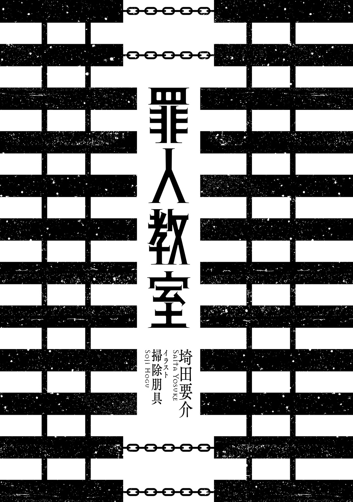
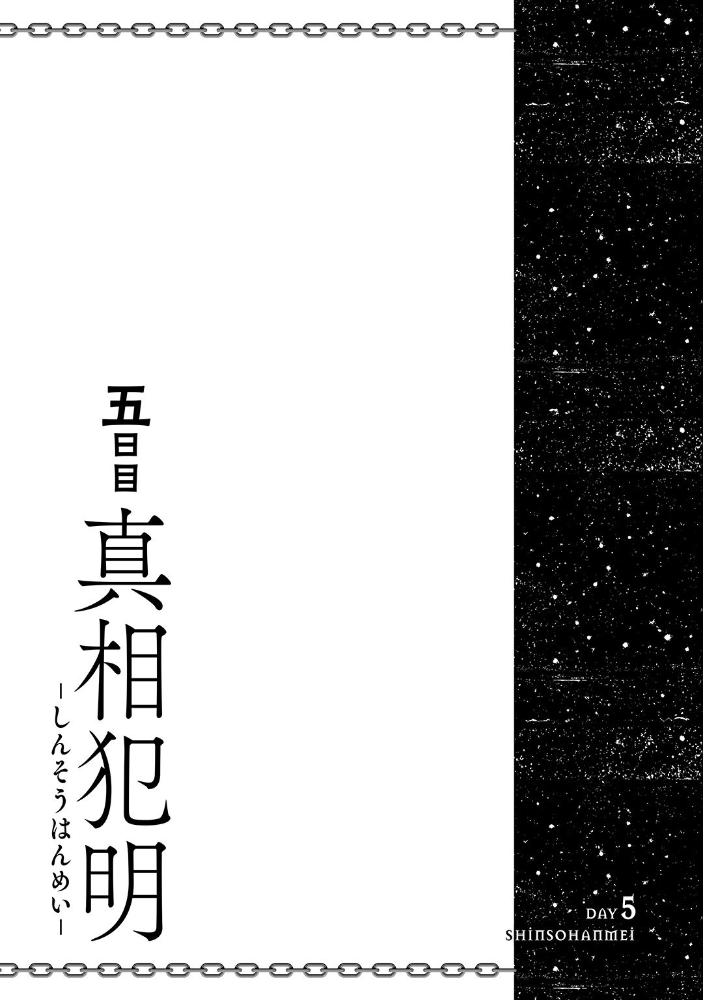

| 罪人教室 | |
| 埼田要介 | |
この本は縦書きでレイアウトされています。
また、ご覧になる機種により、表示の差が認められることがあります。

CONTENTS
★この作品はフィクションです。実在の人物・団体・事件などには、いっさい関係ありません。
昼休みに購買へ行こうと席を立つと、ポケットから財布がなくなっていることに気がついた。
「......弦巻、お前またやりやがったな？」
俺は、自分の席でもりもりと昼餉に勤しむ弦巻藤吾に声をかける。するとこの男は案の定、ヘラッとした調子で肩を竦めた。
「桔平ちゃーん。いくらなんだって、俺が親友から財布を盗むなんて卑劣な真似すると思うかい？」
「じゃあそれは何なんだよ？」
弦巻の手には見覚えのある二つ折りタイプの財布が握られている。見覚えがあるのは当然、それが正真正銘、俺の物だからだ。本当にいつの間にやりやがった？
しかしこちらの糾弾にも弦巻は余裕綽々といった様子。それどころか人を小馬鹿にしたような態度に拍車がかかる。
「これ？ これはついこないだ自分で買ったんだよーん。たまたま桔平ちゃんのとかぶっちゃったのかもしんないねぇ。もしかして、運命ってやつ？」
「ほざけ！」
ああムカつく、このクソッタレめ。
毎度のことだと承知していながらも、この苛立ちは抑えがきかない。
そしてそこからの流れもまた馴染みの恒例行事。弦巻の真正面に机を付き合わせた巴求真がニヤニヤと下卑た笑みを浮かべている。
「へへへ、藤吾君の言ってることは本当ですよ、平さん。唯一無二の友人を疑うなんて、あなたの心も随分と荒んでいるようですねぇ」
「てめえは黙ってろ、ペテン師が」
小柄な体格に目深にかぶったニット帽、そして目の下の濃い隈が特徴的なこの男子生徒、まともに相手をすると大抵碌なことがない。もっとも、まともな相手などさせてもらった記憶もないのだが。
「あなた達、食事時くらいは静粛にしてもらえないかしら」
不意に、鋭利な刃物のような声が飛んできた。
俺はぴくりと反応し、その音源へと恐る恐る顔を向ける。すると委員長の八重梅規理がこちらを射殺す......否、斬り殺すような眼差しで睨めつけていた。
「わ、悪かった、八重梅。静かにするから、せめてこいつから財布を取り戻させてくれ」
波一つ立たない水面の如き静かな殺気を放つ彼女を前に、俺の怒りも急速に冷え込んでいく。
だが一方の弦巻は相変わらずのノリで、
「ちょっとちょっと桔平ちゃん。これが君の物だって決まったわけじゃないっしょ？ 自分のって主張するからにはそれなりの証拠を提示してもらわないと」
とシラを切り通す。
「お前はホント、この期に及んで......！」
一旦は身の安全のため感情を鎮めた俺も、この舐めくさった態度を前に、つい頭に血を昇らせてしまう。このふざけた状況をどう切り抜けようかと思考していると、別の席から決死の勇気を振り絞ったような女子の声音が届いた。
「しょ、証拠なら、あるよ......」
俺は八重梅の時とはまた違う意味で戦慄し、そちらの制止を最優先事項に切り替える。
「ええとな、鳥居笹、お前は大丈夫だ。これはこっちの問題だからお前はゆっくり飯を食って――」
「えと、桔平君のお財布には千円札が一枚と五百円玉が一枚と百円玉が三枚と五十円玉が一枚と十円玉が六枚と一円玉が二枚の計一九一二円入ってて、四〇〇円分のポイントが貯まったレンタルビデオ店の会員証と漫喫の会員証と七つスタンプがついた靴屋のポイントカードと保険証と自宅近くの病院の診察カードと銀行のキャッシュカードとコンビニでグラビアの掲載された雑誌と飲み物を買った時のレシートが挟まってて」
「ああああ、ストップストップ！ 止めてくれ鳥居笹！」
怒濤の勢いで俺の個人情報を流出する鳥居笹千流をどうにかして黙らせる。ようやく口を噤んだ本人はしかし、えらく嬉しそうだ。
「えへへ......私、役に立った？ 桔平君」
「ああ、立った！ べらぼうに役に立ったから、これ以上は控えてくれ！」
彼女の保有する圧倒的な情報量に、クラスの面々からも感嘆の声が上がる。とりわけ弦巻に関しては、絶賛の拍手を送っている。
「うーん、いつものことながら、ちるるの献身ぶりには痺れちゃうね。桔平ちゃんが羨ましいや」
「だったらこのポジション代わってくれよ......」
鳥居笹はぱっと見、大人しめで可愛い女の子なのだが、こんな性質だと知っていたなら安易に優しくしたりなどしなかった。
だが彼女の暴露は、この停滞した状況でいくらか効果的に作用したようで、
「そんじゃ、ここはちるるの無償の愛に敬意を表して、この財布は返還するとしよう。からかって悪かったね、桔平ちゃん」
ひょいと放られた財布を受け取り、ようやく俺は安堵する。たかが昼飯を買いに行くだけで酷い精神の消耗だ。
「でも、それが本当に自分の物かどうか分かりませんよ〜？」
「言われるまでもねえ」
巴の嫌味ったらしい忠告をほどほどにやり過ごしつつ、財布の中身を確認する。......よし。中まではいじられてないな。
ポケットに財布を収め、俺は早足で廊下へと歩み出た。
すると背後に離れゆく教室から、かすかに会話が漏れ聞こえてきた。
「でもグラビア付きの雑誌を買うなんて、桔平ちゃんも分かりやすい奴だなあ」
「あれだけお金がないだのと慌てふためいてたクセに、そんなものを購入する性欲は一丁前にあったわけで......ところで彼の通帳にはあといくら入っているんですか、鳥居笹さん？」
「えーっと、六千円ちょっと。あと家に現金が二万円あって」
「――待て待て待てぇぇぇぇ！」
再びの個人情報発表会を食い止めるべく、俺は華麗かつ豪快に教室へ飛び込み、鳥居笹を怒鳴りつけた。
「お前また家に入ったのかよ!? 百歩譲ってそれは仕方ないとしても、訊かれてすぐにペラペラと喋るんじゃねえ！」
「大丈夫だよ。たとえ桔平君が借金百億背負ってたとしても私はついていくから」
鳥居笹はグッと可愛らしく両拳を握り込んだ。
「愛が重い！ 重い割に口が軽い！ まずその矛盾から修正して！」
リアルな話、それほどの借金があったら最早怖いものなどない気もするが、この場合、それでもついていくという彼女の情熱こそが最も恐ろしいと言えるだろう。
すると一連の騒ぎにいよいよ業を煮やしたのか、八重梅が苛立たしげに最後通牒を叩きつけようと立ち上がった。
「......ねえ、私さっきから静かにしてって」
「――お前ら」
が、その八重梅の台詞に、さらなる怒気の込められた言葉がかぶさった。
......やっば。
俺は恐怖のあまり、そいつを見つめながらどこか諦観にも似た表情を浮かべた。
かぶさった声は、このクラスで最も危険とされる女子生徒のものだった。
「う・る・せ・え・ん・だ・よぉぉぉぉぉぉ!!」
人性悪乃は自分の机を高々と掲げると、次の瞬間には微塵の躊躇もなくこちらへ向けて投げ飛ばした。
「うおおおおおぉぉぉぉぉぉ!?」
俺は決して恵まれてはいない運動神経を総動員し、瞬時に横へ跳躍した。その数センチ横を放られた机がかすめ、派手な音を立てて落下する。
「お、おおお落ち着け人性！ こっちの手違いで起きた、ほんの些細なトラブルだから！」
俺は尻餅をついたまま懸命に説得を試みるが、人性はそんな雑音に耳を貸す気もないようで、
「こっちが黙って飯食ってりゃ、てめえらゴチャゴチャと騒ぎやがって！ そんなに潰されてえならあたしが直々に手ぇ下してやんぞコラァ！」
憤怒に両目をギラつかせ、長い金色の髪を振り乱しながら獅子の如く猛るその姿は、すでに人類という種を遥かに逸脱していた。あるいは大昔の人々は、こういった人物を鬼や悪魔と形容したのかもしれない。
この非常事態には、さすがの弦巻と巴のお調子者コンビも自分達の机の下へと緊急避難。両者の顔に張りついた笑みもぎこちない。
「き、桔平ちゃん。ここは君が代表して謝ったほうが」
「......その通りですよ。あなたがさっさと購買に行ってれば、全て円満に終結したはずなんですから」
「そもそもは弦巻が財布をスッたのが原因だろが。こうなったら全員で雁首揃えて許しを乞うしか......」
「――覚悟はいいな、てめえら」
人性は指の骨をパキパキと鳴らしながら、小動物のように震えるか弱き男性陣へゆらりと歩を進める。こうなってしまっては最早こちらが取り得る対抗策など一つもない。後はただ、この災害が最低限の被害で収まるよう神に祈るしかない。
「「「ぎゃああああぁぁぁぁぁ............」」」
男三人分の断末魔の叫びが上がるなか、八重梅は呆れたように溜息をつき、鳥居笹は神妙な面持ちで両手を合わせ、最後に俺の一つ後ろの席でノートＰＣをタイプする音と共に、
「......うるさい」
菊菱遊が呟いた。
最初に伝えておくが、この場面はすでに物語の結末部分である。
ここから突然、未知の生命体による襲撃や謎めいたデスゲーム等に巻き込まれ、あれよあれよという間に平和な日々が失われるというような意表をつく展開になったりはしない。この物語はいわゆる日常系や空気系と類別されるそれであり、特に大きな事件が起こったりなどということもない。
......いや、よくよく思い返してみれば事件は起きていたかもしれない。それだけで丸々一本、話が書けそうなくらいの代物が。
だが悲しきかな、こいつらの個々のインパクトがでかすぎたおかげで、今ではほとんどと言っていいほど記憶から忘れ去られている。
もう一度言うが、これは日常系で空気系の物語だ。
俺が新しくやってきた学校で、地獄のような日常を、最悪の空気の中で過ごした、ある一週間の記録である。
電車内に設置された液晶画面には、連続する強盗殺人事件のニュースが流れていた。
不吉なことに、どうやらこれから俺が向かう町の出来事らしい。
けれどいくら画面の中で深刻そうに語られても、今イチ現実感や危機感が生じないのは俺だけではないだろう。きっとその事件に巻き込まれた人々も、いざ実際に被害者となる直前までは他人事だと油断していたのだ。よって近隣住民の方々はお気をつけくださいと念を押されたところで、正直手の施しようもない。
詰まるところ、人生とは常に突然の連続だ。
齢十六の若造が「人生とは」なんて偉そうに断ずるのは少々説得力に欠けるが、それもまた一つの真理なのだから仕方ない。
そうでなければ、こうも突発的に転校なんて決まったりするものか。
高一の春休みもラスト五日となった日に、俺の実家のポストに謎の入学案内の郵便が届いた。
郵便には、見知らぬ学校のパンフレットと学生専用マンションの見取り図、そして最後に、すでに現在通っている学校には連絡を入れ転校の手続きは済ませてある、という旨を綴った非現実的な内容の手紙が添えられていた。
あまりにも強引かつ理不尽かつ不自然な展開に、当初は悪質な悪戯ではないかと思い母校へ連絡を取ったのだが、信じがたいことに手紙の内容通り、俺の学籍はもうそこには存在していなかった。
耳を疑った俺は、この陰謀めいた事実に対して一旦は警察に届け出ようとした。
だが俺の母は、
「いいじゃない！ なんか設備も豪華そうだし、マンションも高校生の一人暮らしにしては随分と広い間取りよ！ 諸々の代金も向こう持ちですって！」
なんて能天気に喜ぶ始末。
勿論、それに対する俺の反応は鈍い。
「い、いや......でもこれ、待遇も良すぎて怪しくね？ それに学校の奴らも急に転校するとか言ったら不審がるだろうし」という懸念に対して母は、
「大丈夫よ！ あんた仲いい友達とかいないでしょ？ いなくなっても誰も気にしないから平気よ！」
そう、きっぱりと言いきった。
そう......あろうことかうちの親は、愛すべき我が子に友達がいないと言いきりやがった。
「それによく見なさいよ、ほら！」
確実にテンションを下げていく俺とは反対に、加速度的に調子を上げていく母親がパンフレットの一部を指差す。そこには『奨学金給付有り』の文字と、それなりの額が提示されていた。末尾には謎のハートマーク。
「これ卒業後に返済する必要がないタイプらしいから、このお金そっくりそのまま私のへそく......家計の足しになるわ！ どうせ他に選択肢もないんだし、うだうだ言ってないで男らしく行きなさい！ 母親からの命令よ、桔平！」
「............」
もう母の頭の中では俺がそこに通うことは決定事項らしい。きっとこの人の辞書に『疑う』の二文字は存在しないのだろう。そしてうっかり零した『へそくり』という単語も、しっかりと俺の耳には届いていた。
こうした経緯もあって、俺は謎だらけの学校へと転校するハメになったのである。
ちなみに後に知るのだが、母の言う通り、俺のいきなりの転校を残念がる、もしくは不審に思う友人（知人）は一人もいなかったという。人間関係の儚さをこれほどに痛感した瞬間もない。
そして現在。
俺は遠い実家から乗り継いできた電車から、さらにバスに乗り換え、これから学生生活を送る学び舎へと向かっている。通学時間ということもあり、車内には同じ制服を着た学生の姿もちらほらと窺えた。新学期初日だからか、どこか休みボケが抜けきっていない様子である。
前もって調べた情報によれば、県のほぼ中心部に位置するこの昏忌市は近年急速な発展を遂げているらしい。
繁栄の中心となっているのは市の南東部。数年前の大手鉄道会社による巨大駅ビルの建設が発端となり、駅前にオフィスビルやショッピングモールが建ち並んだ。また大規模な都市開発に伴う人口増加に応じて、駅前繁華街の周辺や市の南部を横断する路線に沿って新築物件が次々と建てられ、現在の閑静な住宅街を形成している。
一方で、居住地域から距離を置いた中央部から北部にかけては、のどかな田園風景や農作地帯が広がる。加えて市街地とは反対の北西部には、豊かな自然を誇る山々が市全体を見下ろすように聳え立っており、登山目当ての観光客も少なくない。
広大な土地面積を生かして発展と環境保全の両立を成し遂げた昏忌市。「あとは海さえあれば」と市長がぼやいたとかぼやかないとか。
以上が、市のホームページに載っているこの街の概要である。
急な出発だったのでまだ新居は見てはいないが、学校で自己紹介をして案内を受けた後はすぐに下校らしいので、今日届く予定の荷物を紐解く時間は十分にある。
ぼんやりと景色を眺めながらバスに揺られること二〇分。ようやく俺の転校先である私立昏忌高校前のバス停に到着した。
「ほ〜......」
バス停から遠目に見える、真新しく瀟洒な四階建ての校舎に、感嘆の息が漏れた。まだ開校して間もないというパンフレットの情報に偽りはないらしい。
けれど歩を進めその距離を縮めていくにつれ、高揚した気分が徐々に不安なものへと変わっていく。
理由は、窓の一つ一つを覆う目の細かな鉄の格子。
奇麗な外観に鉄格子というミスマッチのせいで、校門前に着く頃には俺の中の建物の印象はすっかり変わってしまっていた。
そう、まるでこれでは――
「......刑務所？」
無意識に物々しい単語を口にしてしまったが、校内から漏れ聞こえる喧騒は健全な高校生のそれだ。恐らく自殺防止とかそんなものだろう、と自分で結論づけた。それにしたって物騒なことに変わりはないのだが。
校内に足を踏み入れると、昇降口に入ってすぐの場所に眼鏡にグレーのスーツ姿の女性が立っていた。
「あら、もしかしてあなたが新しく転校してきた方？」
彼女は見慣れぬ新天地におどおどしているこちらに気がついたようだ。その声には知性を感じさせる澄んだ響きがあり、近寄ってみるとこれまた理知的な美人である。いかにも教師といった雰囲気の彼女に対し、俺は頭を下げた。
「はい。平桔平と申します」
「平君ね。話は聞いてるわ。早速だけどクラスへ案内するわね」
てっきり最初は職員室で詳しく説明してもらえるのかと思いきや、早々に見知らぬ人間で溢れかえる教室へと放り込まれるらしい。まだ心の準備もできてないのに。
「すでに聞いてると思うけど、今日はまだ授業が始まるわけでもないから、君は挨拶と校内の案内を終えたらすぐ帰宅できるわ」
軽快な足取りのまま、女教師が本日の日程を語る。話を耳に入れつつ、通り過ぎる教室の数々をちらりと覗いていくが、生徒達の様子も前にいた高校と別段変わったところはない。強引な転校手続きと堅牢な外観に気持ちを強張らせていたが、どうやら取り越し苦労だったようだ。
「自己紹介が遅れたわね。私はあなたのクラスの担任を務める柊瑞穂よ。よろしく」
歩きながらの自己紹介に返事をする前に、「ここよ」と柊先生は足を止めた。
階段を昇り廊下を進んで三階の端。プレートには２―Ｄと書かれている。
ここで、安堵しかけていた心に再び不安がよぎる。
......やけに静かだ。
まるでそこだけ無人ではないのかと錯覚するほどに、教室からは騒音や雑音が聞こえてこない。そしてその理由は、先生が扉を開いた瞬間に理解できた。
――生徒が異常に少ない。
席数が七しかないうえ、着席しているのはたったの五人。別のクラスはこの五倍は人数がいるというのに、一体どういうことだ？
「今日は新しくこのクラスに転校してきた男子生徒を紹介します。平桔平君よ」
戸惑う間もなく紹介を受けたので、俺はせかせかと教室に入り、黒板前で「よろしくお願いします」と頭を下げた。
特に歓声や拍手が起こるわけでもなく、ただ痛々しい沈黙を浴びせられる。
「じゃあ平君はそこの空いてる席に座ってもらえる？」
「はい......」
先生に指示され、俺は静かに廊下側にあった空席に向かい、腰を下ろす。さりげない動きでクラスを見渡すと、俺以外に男子が二人に女子が三人という面子。
男子は茶髪のノリの軽そうな奴と、ニヤニヤと生理的嫌悪感を催す笑みを浮かべるニット帽と目の周りの隈が特徴的な奴。女子は黒髪をボブ気味に切り揃えた大和撫子風の子と、ガラの悪いハーフっぽい顔立ちの金髪、そして茶色がかった髪色に優しげで物腰の柔らかそうな子。意外にも女子は美人揃いだ。
ただ気になるのは、ほぼ全員がちらちらとこちらを品定めするような目で見ている点なのだが、これも物珍しき転校生の宿命ではあるのだろう。俺は誰とも目線を合わさぬよう、そっと顔を伏せた。
「では、軽く連絡事項だけ伝えたら今日は終わりです。......八重梅さん、この後、平君を連れて校内を案内してもらってもいい？」
「はい」
八重梅と呼ばれた黒髪の女子生徒は特に不満もなさそうにしっかりと返事をした。きっと委員長でも務めているのだろう。
美人と二人きりで校内散策と聞いて少し胸も高鳴るが、やはり初対面の緊張のほうが強い。気まずい空気が流れなければいいんだけど。
柊先生が春休みの宿題の提出を促し、これからの行事について一通り説明し終えると、その日は終了となった。どうやら始業式などの全体の集まりはないようだ。
「初めまして！ ねぇねぇ、平......桔平君だっけ？ 俺は弦巻藤吾ってんだ。よろしく！」
解散の号令がかかると同時に、俺のもとへ茶髪の男が駆け寄ってきた。容姿に違わず、かなりノリの軽いキャラらしい。普段ならこういったタイプの人間との接触など皆無なのだが、未知の空間で居心地を悪くしているこの瞬間においては救いだった。
「ああ、よろしく」
俺はたどたどしくも挨拶を返す。
「桔平ちゃんはさ、どっから来たの？ この学校はどう？ 俺達の第一印象は？ 趣味とか特技ってある？ 前の学校じゃどんなキャラだった？ 好きな映画は？ 音楽は？ 漫画は？ 小説は？」
「え、えーと、一つずつ頼む」
矢継ぎ早に繰り出される質問に早々に押し潰されかける。てか初対面でいきなりちゃんづけとか馴れ馴れしいな、こいつ。
こちらの困惑を察したのか、茶髪男子弦巻は自分の額をペチンと叩いた。
「あちゃー、悪い悪い！ どーも俺ってば知らない人に対する好奇心や探究心が半端ないってか凄すぎんだけど、そこんとこは勘弁ってことで。んじゃーまずはこのクラスの愉快な仲間達を紹介しよう」
言って、クラス全員を見回すと、
「まず、あそこから薄ら笑いでこっちを見てる根暗野郎は巴求真。桔平ちゃんを案内してくれるクールビューティーは、委員長の八重梅規理。見てくれはいいけど、目つきと態度が史上最悪なパツ金ヤンキーガールが人性悪乃。そして君の隣りにおわすこのお方がこのクラスのオアシスにして究極の癒し系、鳥居笹千流ちゃんだ！」
弦巻はショウの司会者のように一人一人を指差しながら名前を挙げていく。呼ばれた連中の反応は無言であったり「あ？」と不機嫌丸出しであったりと様々で、最後に鳥居笹という女の子が「どうも」と慎ましく頭を下げた。
「でさ、俺達も桔平ちゃんとは仲良くやってきたいわけで、この後、親睦も兼ねてクラス全員でカラオケでも行かね？ とか考えてんだけど、どーよみんな？」
弦巻が場の全員に向けて呼びかけるも、うんともすんとも反応はない。......もしかしてこいつ、周りから嫌われてたりするのだろうか。
無反応の教室の空気に、弦巻は不服を訴える。
「なんだよみんなノリ悪いなー。これから俺達と過ごしてく仲間だべ？」
「少々耳障りよ、弦巻君」
凛と冷たい声が、弦巻の騒々しさを断ち切った。
「あなたが親睦会とやらを開くのは勝手だけど、許可なく私達まで巻き込まないで頂戴」
冷淡とすら取れる語気も、弦巻は気にしない様子だ。
「うーん、規理ちょんは相変わらずお固いなー。折角全員が打ち解けられるまたとない機会だってのにさ」
「別に私達が仲良くする必要などどこにもないわ。このクラスにいる人間はただ何の問題も起こさず無事卒業することだけを義務とすればいいのだから。......では平君、校内を案内するからついてきて」
八重梅はまたえらく温情に欠けた言葉を吐き捨てると、机の脇にぶら下がっていた藤色の竹刀袋を肩にかけ、そのまま廊下へと出ていった。俺は呆れ半分に苦笑する弦巻に「じゃ」と一声かけてその背中を追う。
「......あんたら、ひょっとして仲悪いの？」
八重梅の数歩後ろを歩きながら、俺は剣呑な事情を想像し、声のトーンを落として聞いてみた。しかし彼女は振り向きもしないまま、先と同じ調子で答える。
「良くも悪くもないわ。ただお互いに干渉しないだけ。無駄に馴れ合えばその分不祥事を起こす危険性が増すだけだから」
「不祥事って......ただカラオケに行くだけだろ。そもそもどうしてあのクラス、あんな人少ないんだ？ 特別選抜の超優秀児が集められてたりすんの？」
「そんな良いものではないわね。理由なら後で先生に尋ねて」
彼女の態度は一貫して素っ気ない。つまり元々がこういう性格のようだ。
「ところで」
ふと、彼女は足を止めた。
「あなた、持ち物は大丈夫？」
「は？」
質問の意味が分からなかった。
「ポケットの中を確認してみなさい」
俺は両手で制服のズボンをぽんぽんと叩くが......あれ？
「......ない」
財布が、いつの間にか消えていた。
その時の俺はよほどの間抜け面だったのだろう、初めて八重梅が口元に笑みを浮かべた。愚か者をふっと鼻で嘲るような笑みを。
「......今すぐ弦巻君に返してもらいに行きなさい」
全速で教室に戻ると、一人残っていた弦巻がヒラヒラと俺の財布を見せびらかした。
「いやぁ、五分ジャスト。気づくまで結構かかったねえ」
俺はつかつかと弦巻に歩み寄り、その手から財布を奪い取る。
「何のつもりだ、てめえ！」
「あらあらー、そんな怒んないでよ。ちょっとからかっただけじゃんかー」
「くそっ」
八重梅を待たせているので俺はさっさと引き返す。後ろであいつがにやけていると思うと胸くそ悪かったが、相手をして図に乗らせるのも嫌なので完全無視だ。
「早速被害にあったわね。御愁傷様」
廊下で佇んでいた八重梅のところに戻ると、同情の言葉をかけられた。
「明るくて良い奴かと思ったら......あいつはいつもあんなことしてんのか？」
八重梅に指摘されるまで盗まれたなんて気づきもしなかった。常習犯ならではの手際の良さを思わせる。
「これからも気を抜かないほうがいいわ。私も一度だけやられたことがあるから」
「一度で済んでるのがすげえよ」
「ええ、今は彼が手を伸ばしてきたら刃物で切りつけるようにしてるから」
「......なかなか物騒な対策だな」
まあ、誇張だろうけど。
話を終えると、やはり彼女はすげない調子でさっさと歩きだす。やけに早足なので追いかけるので精一杯だ。
「おっと」
慌てていたせいで注意が散漫になり、トイレ前の床が濡れていたことに気づかず、つるんと足を滑らせ前屈みにバランスを崩してしまった。
その瞬間、ひゅんと額のすぐ傍を風切り音が通過した。
「ん？」
続いて前髪の一部がはらりと舞い落ちる。
顔を上げると、竹刀袋を腰に構える八重梅がいた。袋の口からは、やけにリアルな刀の柄が覗いている。
数秒の間を置き、彼女は呟いた。
「......転んだフリしてスカートの中を覗こうとしたのかと思ったら、そうでもなかったようね」
「............」
俺はたった今、自分が斬り殺されかけたという事実を認識するのに、さらに数秒の時を要した。
「――って、ええええええ!? 何してんのお前!?」
俺は前頭部を押さえながら絶叫した。
藤色の袋に収められていたのは、竹刀ではなく本物の刀。
そんな代物を躊躇なく使用しておきながら、八重梅は涼しい表情のままだ。
「喚かないで。ただあなたの心が下劣な欲に満たされていたら、その首が飛んでいたというだけでしょ」
「『だけでしょ』じゃねえよ！ んなもん、学校内で振り回すな！」
「だからいちいちこんな些事で声を張り上げないでって言ってるの。私が本気で斬るつもりならあなたはすでに細切れになって事切れていたわよ。もしくは微塵切りでも可」
「大して結果は変わんないし！」
ちょっと待て、何この人!? 平然と殺害予告しちゃってるよ！ この国はいつからこんな猟奇的な人間を野放しにしておくようになったんだ？
「とにかく、これ以上無意味に騒ぎ立てるようなら本当に斬り殺す......いえ、ＫＩＬＬ殺すわ」
「ＫＩＬＬに殺すって、落雷が落ちるとか頭痛が痛いみたいな重複表現になってる気が」
「文句ある？」
文法への真っ当な指摘に、日本刀を手に持つ女の瞳が、研ぎすまされた刃のような光を発した。
「......ないです」
そこからは余分な会話は一切遮断され、水を打ったような静けさのなか案内は続き、文字通り身を斬るような心持ちでどうにか校内を一通り見終えることができた。
「何なんですか、あいつら？」
案内後、俺は大至急職員室に駆け込み、二人の生徒から振るわれた暴挙について柊先生に申したてた。しかし先生は俺の訴えに対して、
「その程度で済んで良かったじゃない。相手が人性さんとかだったら、原形すら留めてなかったかもしれないわよ？」
眼鏡をクイと上げつつ、けろりとした様子。......どういうことだ？
「だいたい、あのクラスは意味が分かりません。そもそもどうしてあいつらだけあんな少人数なんですか？」
「ふふ、ちょっと遅くなってしまったけど......ここでキチンと説明しておきましょう」
先生が椅子を回転させ、こちらに向き直った。表情も心なしか真剣なものへと変わっている。
「ここは、犯罪者予備軍の子達が集められた学校なの」
「犯罪者......予備軍？」
俺はその非日常的な単語を無意識のうちに復唱していた。
「そしてあなたが入れられたあのＤクラス、通称Dangerクラスは、ここでもとりわけ犯罪的特性が濃厚な人間が集められた教室よ」
「はあ」
こともなげに告げられた内容に、俺の凡庸な思考はひたすらに置いてけぼりを食らっているが、簡潔にまとめるとこういうことになる。
「つまり、ここの生徒は全員が未来の犯罪者候補ってことすか？」
「そうね」
彼女はあっさりと首肯した。
「いやいや、『そうね』って......。そんな普通の返しをされても」
それで「はいそうですか」と素直に了解する阿呆がいるだろうか。だが柊先生はおかまいなしに説明を続ける。
「だって事実だもの。この学校には、犯罪を起こす可能性が格段に高い子達を日本中から集めて通わせているの」
「いや〜、えっと......」
事実だとしても、それはこちらが頷く理由にはならないだろう。俺が反応に困っている間も、先生は言葉を紡いでいく。
「つまり、この学校は彼らが犯罪者としての特性と向き合って、社会に貢献できる人材となるよう更生させるという一部の政府関係者の発案の下、表向きには一般の高校と変わらない形で運営を始めたのよ」
「んな滅茶苦茶な......」
あまりにも破天荒な理屈にひたすら啞然とさせられるが、まだその在り方に納得がいかない。俺はさらなる疑問をぶつけてみた。
「でも、どうして普通の学校みたいにして、ごく普通に高校生活なんてさせてるんです？ 他にもやり方はあると思うんですけど......」
そこで先生は、聞き分けの悪い子を諭すような口調に変わった。
「いい、平君？ ここの生徒達は確かに一般社会には受け入れがたい特性を有しているけど、彼ら自身はまだ何の罪も犯してはいないの。逮捕されて収容されたわけではない。あくまでそういった犯罪を起こす、もしくは関わる可能性を持っていると診断されただけ。そしてそれだけの理由で彼らの存在を拒絶することを、ここを運営する者達は好ましく思ってはいない。勿論私自身もね」
「でも、それを治すための学校なんですよね？」
「厳密に言えば、彼らが自分の特性を制御できるようにするの。犯罪的特性は、上手く扱えれば唯一無二の個性にもなる。ここはその特異な個性を活かしつつ、健全な日常を送ることが可能となるようサポートすると同時に、異端者である彼らに高校生らしい生活を提供しようという配慮も兼ねた教育施設として存在しているの。......ただ、暴走してしまいがちな子には相応の処置も施すけど」
話を結んだ先生の眼鏡が意味深にキラリと光る。
かなり飛び抜けた方針で最後の一言にも身震いしたが、話をまとめるとこの学校の理念はこんな感じらしい。
――ここ昏忌高校は、日本中から犯罪者の素質を持つ人材を集め、その特性を上手い具合に修正、発展させていく政府の施設であり、そしてあくまでそれは高校生活という営みの中で行われる。
よし。受け入れるかどうかは別として、そこまでは把握できたぞ。
だが問題はそこからだ。
「じゃあ、どうしてそんな学校に、俺が転校させられることになったんですか？ それもその中で最も危険な連中が集められた教室に」
もしかすると......俺にも隠された犯罪的特性とやらがあるのだろうか。
こちらのそんな懸念を読み取ったのか、それをかき消すように先生は述べる。
「それはね、平君がごく普通の高校生だったからよ」
「......ごく普通の？」
「ええ、ごくごく普通。あなたには特殊な犯罪的特性はないと私達は判断した。だからそういう意味では安心していいわ」
「はあ、ありがとうございます」
不安を一つ払拭できたのは喜ばしいが、それならここに来させられる理由はないだろう。疑問が深まるなか、先生が淡々と話を続けていく。
「以前あなたが過ごしていた学校での成績や授業態度、人間関係についてこちらで調査させてもらったわ。その結果、あなたは普通すぎるくらいに普通だということが判明したの」
「普通すぎる、ですか」
なんだか馬鹿にされているようにも感じたが、柊先生は真剣そのものだ。
「テストの成績は平均点からプラスマイナス五点以内。運動は得意でも不得意でもなく、人間関係においてはほぼ全員があなたについて『普通に良い人』と答え、知人はそれなりにいたけど深い付き合いの友人は一人もいない。そんな少々異常な結果が判明したの」
俺は自分でも把握していなかった自らの希薄な人間関係に絶句した。
「ここまで平凡な人物には今まで出会ったことがないわ。もしかしてこの結果自体あなたが何らかの意図を持っていたりしたの？ だとしたらあなたスパイの才能があるわよ」
「............」
これほどの事態になるとは予想もしていなかったが、実を言えば、心当たりがないわけでもなかった。
「モットーっていうか心がけみたいなもんなんすけど......俺、あんまり目立ったりしたくないんですよね」
「......へえ」
先生が興味を引かれたように、レンズの向こうの目を細める。
「別に勉強とかも手を抜いてたってわけじゃないんすけど......あんまりできすぎたりできなさすぎたりすると変に注目されるじゃないですか。なんか俺、そういうのが嫌だなって思ってて、それが影響したのかもしれません」
俺の言い訳めいた独白を聞くと、柊先生は「ふむ」と顎に指を添えた。
「なるほど。『没個性』ね。それもちょっと不気味なまでの」
「......不気味ってのは言いすぎじゃないすか？ それに友達がいないってのも今時珍しくはないでしょ」
「でも狙ったのでなければ、特に成績関連では全員の協力でも仰がない限りはこのような結果にはならないわ。......ま、本音を言うとそこはさして重要ではないの。大事なのはつまり、あなたは世間の一般人の理想的なモデルであるということよ」
「はあ......」
未だによく分からない。それがなぜここに招かれる理由になるというのか？
「つまりあなたは、この学校の生徒――その中でも群を抜いた問題児揃いのＤクラスの生徒達が一般社会に不自由なく溶け込めるよう、まずは普通の生徒と一緒に学生生活を過ごさせてみようという斬新かつ画期的な教育計画に基づき、ここに招待されたのよ」
「ああ、なるほど」
俺は合点がいったとばかりに手をポンと叩いた。
しかし、それは結局、こういうことではないだろうか。
「つまり俺は、体のいいモルモットってことですか？ あいつらが『普通』に慣れるための」
「ええ」
女教師はモルモットという非人道的な譬えをあっさりと認めた。
残念ながら、辛抱強く話を聞いていた俺も、さすがに堪忍袋の緒が切れた。
「冗談じゃないですよ！ そのために俺はわざわざ転校させられたんですか!? 本人の許可も一切なく！」
その訴えに、先生は「てへっ」と言わんばかりにあざとく舌を出す。
「だってここが犯罪者予備軍の巣窟ですと言ったら誰も来ないでしょうし......それにこのアイデアが職員会議で出た時は『ヤバい』だの『そいつ詰んだ』だの教員一同が大絶賛だったわ」
「そいつら絶対語尾に（笑）入ってんだろ!?」
教師達の会話レベル！ ネットの書き込みじゃねえんだから。
「とにかく、そんな勝手な理屈で命の危険に晒されるなんてまっぴらごめんですよ！」
「まあまあ、そう怒らないで。こちらだってあなたの最低限の命の保障は..................するから」
「その間は何だよ!? そこは完璧な保障なきゃ駄目だろうが！」
人の命を何だと思ってるんだ、日本政府！
顔を紅潮させ激昂する俺に対して、柊先生はこほんと咳き込むと、無理矢理会話を締めに入った。
「それじゃ、理解してもらったところで、お悩み相談は終了。こっちもこっちで新任の先生が行方不明になって大変なの。一応クラスメイトの簡単なプロフィールは渡しておくから、せいぜい用心して高校生活をエンジョイしてね。あと今の話は口外厳禁よ。この計画の存在が露呈してしまったら、全てが台なしだもの。それにここから逃げ出そうなんて無謀も控えるように。この学校に転入した時から、あなたには四六時中、政府が監視の目を光らせてるのよ。それじゃ」
「ええ!? それってどういう......」
さりげなく重大な情報を漏らしつつ、先生は詳細を問い質そうとする俺を振り切る形で、すたこらと逃げるように職員室を出ていってしまった。去り際にしっかりとデータ入りのファイルとやらも押しつけられている。
「......はあ」
ああも強引に捲し立てられては返す言葉も見当たらない。職員室に取り残された俺は、ファイル片手に重い、重い溜息を吐いた。
――犯罪者予備軍が集まった学校。
――そして俺のクラスの連中はその中でも選り抜きの精鋭達。
――加えて、政府の力とやらでここからの逃亡も不可能。
......正直三日ともつ自信がない。
奨学金も含めた、過剰な待遇の良さも頷ける。俺はこれからの二年間を、怪物に囲まれながら過ごしていかなければならないのだから、命の値段としては安いくらいだ。
そもそも通っていた学校から強制的に転校させるやり口からして横暴極まりない。巨大な権力とは、行使される側にしたら理不尽以外の何物でもないと痛感させられた。
やるせない気分を抱え廊下に出ると、そこに二人の見知った生徒がいた。
「あ。転校生の、えっと......」
「平桔平さん、でしたっけ？」
栗毛の女の子とニット帽の男は俺を見るとそう口々に発した。
確か......鳥居笹千流と、男のほうは巴求真。
巴は大量のプリントを抱えたまま佇んでおり、鳥居笹は屈み込んで廊下に散らばった、これまた相当量のプリントをせっせと集めていた。
「そ、そうだ、平君だ。......あの、これ、ごめんね。すぐに片づけるから」
俺の名前を思い出しながら、鳥居笹は両手を動かしつつ謝罪する。
「すいませんねえ、鳥居笹さんがヘマをやらかしたもんで」
状況から判断すると、鳥居笹が自分のプリントをうっかり廊下に撒き散らしてしまい慌てて回収している、といったところだろうか。
しかし巴は彼女があわあわと紙を拾い集める様を小馬鹿にした目で見物するだけで手伝いもしない。代わりに手の空いている俺が遠くに落ちていた残りを集めて、彼女に手渡してやる。
「あ、ありがと。......平君って、優しいんだね」
受け取った紙の束を両手で大事そうに抱えながら、鳥居笹がえへへと笑みを返した。
瞬間、とくんと心臓が音を立てた。
頭一つ分背が小さいため、自然と上目遣いになる瞳には柔らかな光彩が灯り、ちょこんと小首を傾げると肩まで伸びた栗色の髪がふわりと揺れる。
そんな一見純情可憐な女の子に優しげな笑顔を向けられては、健全な男子だったらときめきの一つも覚えてしまうのは、ごく自然なことだろう。
だが男一匹平桔平、この程度で心を乱すようなヤワじゃない。ここは爽やかな笑みと共に気の利いた台詞でも返してやらねば。
「いや......べ、別に普通だろ......こんくらい」
うっわ、やっちゃった。
目と口元をひくつかせながら、数センチ先にも届いていないであろうこもりにこもった声。絵に描いたような挙動不審である。......でもこういうのも、青春ならではだよな。
「なに、にやけてるんですか、平さん。もしかして一目惚れでもしちゃいました〜？」
「............」
甘酸っぱい恋の一ページから一瞬で現実に戻された俺は、離れた位置からこちらの様子を窺う男を睨みつける。
巴も鳥居笹ほど小さくはないが、俺よりも数センチ頭の位置が低い。よって彼女同様その目線は見上げられるものになるのだが、この男の場合、可憐さなどとは無縁で、蛇や蜥蜴のような全身を舐め回すごとき生物的不快感しかない。それは巴求真という男の不気味さと卑屈さを印象づけるのに一役も二役も買っていた。
加えてやたら恭しく敬語を用いる口調も、こちらの苛立ちを無性に煽り立てる。
「お前のほうがにやけてんだろ。てか少しくらい拾うの手伝ってやれよ。薄情だな」
「へへへ、僕だって大荷物を抱えているのに？ でも、まあ彼女には優しくしてあげてください。実は鳥居笹さん、そのドジなキャラクターのせいで、よく苛められていたんですよ......」
「そうなのか？」
「いやいや、そんなことは全くないよ！ ドジなのは認めるけど」
鳥居笹はぶんぶんと首を横に振って巴の言葉を否定する。本当になかったのか、強がっているのかは判断しかねたので、変に掘り下げるのは控えておく。
それに彼女もあのクラスにいる以上、何らかの特性を持っているのだろう。しかし今のところはごく普通の可愛らしいふんわり女子にしか見えない。巴求真についてはすでに異臭がぷんぷんしてるけど。
「そういえば平さん。人性さんにはもう接触しましたか？」
こちらの警戒など意にも介さぬ調子で巴が尋ねてくる。......てかまた人性か。そんなにヤバい人なの？
「いいや、まだだけど」
こちらが否定すると、
「もしあの人に会ったら、ヘアカラーを褒めてあげてください。きっと喜ぶと思いますよ」
「はあ？」
「もう、巴君はまたそんなこと言って」
へへへ、と粘着質に笑う巴を、鳥居笹が困り顔で非難しているが、俺は意味も分からず眉を顰めることしかできなかった。
「それじゃ、僕はさっさと帰宅させてもらいますよ。春休みの宿題をやってこなかったってだけでこんなに課題を出されちゃったんですから。......あ〜あ、参りますよ全く」
そう言い残すと、巴は玄関のほうへよたよたと消えていった。
大量の荷物は宿題忘れのせいだったようだ。すると鳥居笹も同じなのだろうか。
「あ、こ、これは違うよ！ 巴君は全然やってないけど、私は今日たまたま忘れちゃっただけだから！ だ、だから、私のこと、お馬鹿さんだとか思わないでね！」
こちらの心の内を読んだのか、わたわたと言い訳をする鳥居笹。そんな慌てた姿も非常に愛くるしい。
安心してほしい。お馬鹿さんでも可愛いは正義。安いコスメのＣＭみたいだけど、大抵の男はそんな考えなのだ。
「そっか、課題頑張れよ」
俺は努めて平常時の脈拍を保ちながら極力自然な形で微笑みかけた。大丈夫だよな？ 今度は顔強張ってないよな？
「ありがと！ じゃ、じゃあまたね！ き......桔平君！」
「！ お......おう、またな」
なんと、女子から名前で呼ばれた！ 彼女も勇気を振り絞ったのか少し頰が赤らんでいて、それを悟られまいとさっと駆けていったように見えた。
そうして一人廊下に立ち尽くす俺はある一つの結論に達した。
もしかして転校初日にして......春到来？
廊下の窓から差し込む日の光を浴びながら、思春期特有の妄想は膨らんでいった。
上機嫌で下駄箱に到着した俺は、瞬時に妄想を中断させられるハメとなった。目を疑うような凄絶な光景がそこに広がっていたからだ。
今まさに使おうと思っていたところも含め、下駄箱の扉一つ一つがへこみ、歪み、ひしゃげている。
まるで超常的な力で圧し潰されたかのようだ。
グシャ！
そして今まさに、その景色を作り上げた創造主がまた一つのオブジェをそこに誕生させていた。
そいつの正体は......、
「お前......人性悪乃、だっけ？」
「あん？」
人性悪乃は、たった今下駄箱に突き刺した脚を引き抜くと、ゆったりとした動作でこちらと対峙した。長い金髪の隙間から窺えるダークブラウンの瞳からは、鬼も裸足で逃げ出しそうな殺気が見て取れる。顔立ちが人形のように整っているのが逆に恐ろしい。つーか悍ましい。
「......何やってんの？」
解説を求めた俺に対して彼女は一旦下駄箱に視線を戻すと、自分の名字のプレートが貼られた扉をカパカパと開閉させた。
「なんかあたしのとこだけさ、すげえ建てつけ悪ぃんだよ。だから全員の分も開きにくくしてやった。平等な社会って、こういうことだろ？」
「............なるほど〜」
――この人、やべええぇぇぇ!!
どんだけ自己中な物差し持ってりゃ、そんな醜悪な平等論が生まれるんだよ!? 原始共産制も真っ青の横暴だぞ！
これが、人性悪乃......！
子供の名前に『悪』の字なんぞ入れる親の顔が見てみたいとか思ったけど、本人がこれならそのネーミングも納得だ。いや、そんな名前だからこうなったのか？
「お前さぁ、平桔平、だっけ？ 友達からエアロスミスって言われたりしなかった？」
「はい？」
二の句を継げないでいた俺に、彼女は突飛な質問をした。
エアロスミス？ もしかしてスティーブン・タイラーと平をかけてんのか？ 生憎そんな洋楽かぶれな呼ばれ方をされたことは一度もなかったが、
「......映画好きの奴にブライアン・タイラーってのはあったけど」
それなりにマニアックな名前である。しかし人性には案外、好感触だったようで、
「へえ、そっちか。うん、ま、いいや。じゃあそれ取って」
一人納得した様子の彼女は俺の足下を指差す。そこには巴や鳥居笹が課せられたのと同じプリントの束が置かれていた。こいつも宿題忘れ？ 不真面目な奴多いな。
俺の下駄箱も悲惨な形へと変貌していたので、文句の一つでもくれてやりたいが、猛獣と向かい合う恐怖のほうが勝っていたので、恐る恐る指示された品を抱えて渡してやる。
「あんがと。お前さ、映画とか音楽よく鑑賞するタイプ？」
「え？」
ナチュラルに重圧をかけるような口調なので、会話をするのも精一杯だ。
「えーと、あの、まあ、それなりに。一人でいるのが多かったから、それくらいしか楽しみなかったし」
「シャットユアマウス。そこは聞いてねえよ、カス。『それなり』とか中途半端に答えてんじゃねえぞ、クソ、ゴミクズ」
「......ごめんなさい」
すげえ......。一息でカスクソゴミクズの罵詈雑言集を使いきったよ。ほぼ同じ意味なのに。それに映画も音楽もジャンルによって鑑賞量は異なるんだから、そういう答えになるのも仕方ねえだろうが。
だがそんな正論を返す度胸があるはずもなく、びくびくと怯える俺をよそに、人性は頭の後ろで手を組み天井を仰いだ。
「あーあ、退屈そうなのが来たなー。とりあえず今日のとこは見逃してやっから、下手にうぜえ真似すんじゃねえぞ。分かったらさっさと失せろ」
「は、はい......」
これぞ暴君という振る舞いにも一切の抵抗を見せず、俺はえらく慎重に自分の靴を取る。我ながら情けないとも思うが、この迫力を前にしては歴戦の軍人でも片膝をついて頭を垂れるだろう。八重梅の殺気は鋭く研ぎすまされていたが、人性のそれは百獣の王の如く、体全体から威圧するように放たれている。
......あ、そうだ。
俺は玄関口まで歩いたところで、巴のアドバイスを思い出す。そして少しくらいは彼女の機嫌を直しておこうと思い、ごく軽い気持ちで言った。
「その髪の色、似合ってんな」
そして、それが浅はかだったと気づくのは数瞬後。
「――あ？」
一瞬で、場の空気が凍りついた。
こちらの何気ない一言を耳にした人性悪乃の髪が、超サイヤ人に勝るとも劣らない勢いで逆立っていく......ように見えた。
「てめえ......。今、この髪のことなんつった？」
そして徐々に膨張していく怒気をこめて、これまたどこぞの漫画の主役みたいな台詞を口にした。サブカルの素養がある者なら、ウィットに富んだ台詞でも返してやるべきなのだろうが、残念ながらもうこの場はそんな悠長に構えていられる雰囲気ではなくなっている。
「あれ？ えっと、そう褒めてやればいいって巴が、あれ？ え？」
「うおらあぁぁぁ!!」
ザ・問答無用。
釈明の余地など絶無。人性は持っていた紙の束を放ると、靴箱から誰かの靴の片方を手に取り、勢い良く投げつけてきた。
そのまま続けざまに第二陣、第三陣と無名の靴達が、横殴りの雨と化して飛来する。
「うわわわわわ！ ちょ、待って！ 待ってくれ！」
『靴を投げる』という字面だけではことの深刻さが伝わらないだろうが、彼女は投擲の際、正確に硬い爪先部分を標的に向けており、加えてその推進力たるや水平にガラスを貫いて数十メートル先の地面に突き刺さるほどに甚大。この攻撃力の前には、個々にサブマシンガンを装備する特殊部隊ですら、恐らくものの数分で壊滅に至るだろう。
てか、殺される！
「これは地毛だって、何回言わせりゃ分かるんだコラァ！ お前もアレか!? あたしが洋モノばっか見聞きするから、それで外国人に憧れて髪染めてるとか思ってやがんのか、あぁん!? あたしのパーソナリティ貶しやがって！ 上等だ！ てめえみてえなマザーファッカーは絶対にこの手でぶっ飛ばす！ ぶっ潰す！ ぶっ壊す！」
その外見で外国人扱いしないほうが難しいだろ!?
解読不能なポリシーを喚き散らしながら、彼女はとうとう傘立てまでをも振り回し暴れだす。その攻撃範囲から命からがら脱出した俺は、激怒の咆哮を背中で浴びつつ、そのまま全速力で学校から飛び出した。
いやいや、マジで危なすぎ。
人性悪乃。噂に違わぬどころか、噂以上の凶暴性を持った化物だった。
前触れもなく発生した暴風雨からどうにか逃げきった後、電車に乗って二つ目の駅、そこから徒歩一〇分の場所にあるマンションへ向け、俺はとぼとぼと住宅街を歩いていた。
財布を盗まれ、噓に翻弄され、二度も命の危機に晒され、おまけにこれがたった一日の出来事という現実。ならば今後はいかなる災禍に見舞われるのだろうかと想像すると、ますます気分も落ち込んでいった。
だが、騒ぎでくしゃくしゃになった地図片手に、ようやく目的地に到着すると、
「......おお」
一瞬、これまでの不幸が全て頭の片隅に追いやられてしまうほどの感動に包まれた。
目の前に現れたのは、悠然と屹立する超高級マンション。
校舎同様眩いばかりの新築物件は、地上数十階はありそうな高層も手伝って、周囲の住宅街と比べても一際スタイリッシュな風格を漂わせている。......これって年収うん千万とかの奴が住むとこじゃね？
見渡せば近くにはスーパーやコンビニ、緑溢れる広々とした公園もあり雰囲気も良い。
玄関はオートロック。俺の部屋がある階は十七階。間取りも予め確認済みだが、たかが一高校生にちとサービスしすぎじゃないかと首を傾げたくもなる。だがあんな異端児軍団の中に放り込まれるのならそれも当然か、と一人納得し、エレベーターに乗り込む。恐らく俺にとって、ここの存在だけが昏忌高校に来た唯一のメリットであり、安らぎの場となるのだろう。
けれど、ここで油断は禁物だ。
こういう場合に限って、以前渡された部屋の情報は手違いで実は手狭なワンルームでしたとか、数人でシェアしろだとかというオチがつきものだ。同居相手がティーン雑誌のモデルや女優の卵のような超絶美少女だったら大歓迎だが、現実はそう甘くない。
ここは気を引き締め、どんな現状も受け入れる覚悟を決めておかねば。
エレベーターを降りて、新居の玄関前に立ち、扉の穴に鍵を差し込む。解錠の音を確認してノブを回すと、鉄の扉はスムーズに開いていった。
「......うおお！」
室内には想像以上の世界が広がっていた。それも格別に良い意味で。
磨かれたようなフローリングの床。染み一つない壁紙。玄関から伸びる廊下の、真正面突き当たりに一つ、左右に二つずつ落ち着いた色あいの扉があり、俺は逸る気持ちを抑えて靴を脱ぎ、まずは真っ直ぐに進んで正面扉を開けた。
そこはリビングダイニングで、軽い立食パーティーでも開けそうな広々とした空間があり、バルコニーに通じる壁一面のガラス窓からは、高層階の住民だけが味わえる街の絶景が一望できる。残りの部屋のうち、二つはトイレとバスルーム。あとは空き部屋が二つ。おまけにリビングの隣りには手頃な広さの和室まである。
まさかの、３ＬＤＫ。
もう一度言うが俺は平凡な高校生だ。秒で数億稼ぐＩＴ企業の社長とかでは断じてない。
俺はその場で大きく深呼吸した。ほんのりと良質な木材の香りがする。
......最高だ。
この部屋に二年間住めるというだけでも、人に自慢できる貴重な体験となるだろう。
ああ、初めてこの学校に来て良かったと思えたよ......。
「おかえり、桔平君。もうすぐお蕎麦できるからゆっくりしててね」
「おう分かった。ありがとな」
俺はキッチンで料理をする鳥居笹に礼を言うと、すでに運び込まれていたソファにどさりと座り込んだ。
部屋を見渡すと空の段ボール箱がいくつか散らばっている。どうやら彼女が引っ越し荷物を受け取って整理してくれたようだ。家具の配置も悪くない。将来はできた嫁さんになれるぞ。......なんてな。
「はい、お待たせ」
ぼんやりしているうちに、鳥居笹が二人分の蕎麦を持ってきた。机にとんと置かれた器の中には種類豊富な揚げたての天ぷらものり、ほかほかと食欲を誘う湯気が立っている。
「うわー、美味そう！ 丁度腹減ってたんだよ」
「良かった。帰りに食べてきちゃってるかと思って心配してたんだ。それじゃ早速食べよっか」
俺は両手を合わせて元気良く、
「それでは、いただきまー......ってコラァァァァ!!」
そのままバァンと派手に机をぶっ叩く。鳥居笹は「きゃ」と悲鳴を上げた。
「ど、どうしたの桔平君？ もしかしてうどん派だった？」
「違ぇよ！ どうしてお前が当たり前みたいにここに居んだよ!? あまりにも自然すぎてそのままスルーしかけたじゃねえか！」
そもそもどうやって家に入った？ ここは施設が最新でも警備がザルなのか？
すると鳥居笹は観念したように俯いた。
「......ごめんなさい。私、好きな人ができるとついつい深追いしちゃうの」
「これがついついのレベルかよ......」
俺は室内の様子を見渡しながら、ようやく鳥居笹千流という女の危険性を理解した。
こいつの特性は所謂、ストーカー体質なんだ。
......あーあ、唯一まともだと思ってた奴もこの有様か。帰り際の妄想も台なし。やっぱここは異常者しかいねえ。巴め、なにが「優しくしてやれ」だ。......けど待てよ。
少しだけ考えてみよう。
鳥居笹はルックスも上々。それに俺のことをはっきりと「好きな人」と宣言した。
無断で家に入られたとはいっても、おかげで荷物整理の手間が省けたし、この蕎麦から察せられるように料理の腕も一人前だろう。だったら、このまま居座られても許せそうな......いや、やっぱり結構キツくないか？ 本人の承諾なしにあれこれやられたんだぞ？ それに家の場所とか、誰にも言ってないのにどうやって嗅ぎつけた？
そういった点を踏まえると......この鳥居笹って女怖くね？ うん、そうだ。こいつやっぱ超怖い。
以上、審判団の判定は、ギリギリアウト！
「それ食ったら出てけ。そしてもう二度と無許可で家に入るな」
「えっ......」
ごく当たり前の要求をしたつもりなのだが、鳥居笹はまるで死刑宣告を受けた罪人のように顔を青ざめさせた。なんで信じられないみたいな顔してんだよ。お前はすでに法を犯してるんだぞ。
「そ、そんなぁ......。和室でいいから住んじゃ駄目？」
「駄目に決まってんだろ」
住む気だったのか。それに和室ならＯＫって、どんな基準だよ。
「家賃も払うから、月何十万でも。もし桔平君が他の女の子連れてきても私いないフリするから。そしてその子と結婚したとしても、ずっと桔平君の邪魔にはならないから」
「重いよ！」
不倫中のＯＬを彷彿とさせる歪んだ愛情。もうストーカーの領域ではないだろ。
「......別に来るなとは言ってねえ。他人の家にはキチンと本人の許可取って入れってことだよ」
常識的な意見を用いた説得に、ようやく鳥居笹は折れてくれたようで、
「......分かった。やっぱり私、勝手だったよね。ご近所さんへ挨拶回りしたりとか、新聞勧誘を断ったりしたのも、迷惑だったよね」
「すでにそこまで......」
完全に新婚の嫁さんじゃん。こいつ一体いつからいるんだ？ 帰宅も俺とそう変わらない時間帯だったのに。
交渉を終え食事を平らげた俺は、鳥居笹を駅まで送り届け、そこでようやく本当に一人になれた。
一日目を終え、俺は最も深刻な問題に気がついた。
......ボケの量が多すぎる。
『桔平くーん、おはよう。桔平くーん、おはよう。桔平く』
俺は枕元で鳴る鳥居笹の音声入り目覚まし時計をガチャンとはたくようにして止めると、ベッドからのそのそと起き上がり、大きく身体を伸ばす。
「う〜ん......」
時刻は朝の六時半。
こう見えても寝起きは良いほうだ。
カーテンを開けると、太陽光が盛大に部屋の中に降り注ぐ。うん、爽やかな陽気。
強い光に白く眩んだ視界が徐々に回復してくると、眼下には朝の活気に満ちた街並み。俺は多少の優越感を得ながら眺望を満喫すると、枕元に置かれた時計を手に取った。
「――勝手に声入りで目覚ましなんぞセットしてんじゃねえぇぇぇ!!」
渾身の力で投げつけられた機械製品は、壁に直撃してバラバラに砕け散った。
さあ、今日も一日が始まるぞ......。
「どうかしら平君、この学校は気に入った？」
「んなわけないでしょこんな人外魔境。初日から酷い目に遭いましたよ」
学校に着くと職員室に呼ばれ初日の感想を求められたので、俺は険をこめた口調で率直に述べた。けれどそれを耳にした柊先生は「まあ」と嬉々とした表情だ。
「それは素敵じゃない。その調子でどんどんあの子達と打ち解けていってほしいわ」
「あのねえ......」
打ち解けるどころか打ちのめされる始末なのだが......。
あの後、先生から受け取ったファイルを見て、俺はＤクラスの面々の情報を大まかに知った。
弦巻藤吾。スリ予備軍。
幼い頃より、人から物を掠め取る技能を持ち、手に収まる物体ならばどんなものでも盗めるらしい。社交的な性格で他人ともすぐ仲良くなれるが、逆にそれが盗みの手口の一助となっている。本人はその能力を使って人をからかうことを楽しんでいる様子で、更生の色は見られない。中学卒業時までの彼の手による被害総額はなんと一億円以上。しかし盗んだ品は悪用するわけでもなく、すぐ持ち主に返却している。
八重梅規理。人斬り予備軍。
簡単に言えば斬りたがり。かなり危険な特性だ。常時なんらかの刃物（基本は日本刀）を携帯しており、ふとした拍子に相手を斬りつける癖があるという。性格は冷淡で口調も辛辣だが、犯罪的特性を抑制する努力はしているらしく、クラスの中では最も優良な生徒らしい。ただ、ごく些細なことでカッとなりやすい面もあるため、その辺りは未だ注意が必要。
巴求真。詐欺師予備軍。
言葉の中に平然と噓を混ぜ、相手を混乱させる。騙すことを娯楽として楽しんでいる点がタチの悪さに拍車をかけているらしいが、ある程度は自分の特性を制御することには成功しているとも考えられる。性格は酷く陰険で、常に他人を観察対象のように捉えている。弦巻同様能力を悪用してはいないようだが、人格的に社会適合へ不安の残る男子生徒である。
鳥居笹千流。ストーカー予備軍。
てか現役でストーカー。好意を寄せる相手の情報を微細に至るまで収集、住居に侵入して相手の生活に溶け込もうとする半分寄生虫のような女子。人柄はとても温厚だが、如何せんその恋愛のアプローチの異常性が際立つ。彼女自身「ついつい」やってしまうらしく、その性質をどうコントロールするべきか悩みどころらしい。
人性悪乃。大量殺人者予備軍。
クラスで最も問題視されている怪物女子生徒。何が原因でブチギレるか分からないうえに、一旦爆発したらところかまわず暴れ回る。無駄に力も強いだけに非常に厄介。性格は粗暴凶暴乱暴という暴の極みの三拍子。何よりの問題は、彼女自身その特性を改善しようという意志が全く見られない点。それどころか将来はむかつく奴を片っ端から潰しまくると堂々と言い触らしているようだ。
まとめるとこんな感じだが......一体どうしろってんだ、こんな怪物共。
たまりかねた俺は、青筋立てて抗議した。
「こんな調子じゃ命がいくつあっても足りないですよ！ 身の安全があるのならともかく、俺は何の超常能力も持たない一般人なんすから！ いざとなったら出るとこ出て、力ずくでもここから解放してもらいますからね！」
口外厳禁とは言われたが、逆に考えれば、こちらの暴露を恐れている証拠だ。
その弱みを逆手にとって俺は堂々と闘う姿勢を見せるが、先生は頰杖をついて儚げに視線を斜め下へ落とす。
「困ったわ。本気でそんなことを考えているというのなら、きっと明日の今頃には不慮の事故でバラバラになった平君の死体が路傍に転がっているかもしれないわね」
「な、なに......!?」
さらりと告げられた抹殺宣言に血の気が急速に失せていく。どうやら反乱を企てた者は、原形すら留めることは許されないらしい。
計り知れない国家権力の闇に絶望する俺の肩に、先生が柔らかく手を置いた。
「それじゃ、今日から通常授業だけど頑張ってね。解放については、あなたが機密を守れると判断した時に、上の人達が一考してくれると思うわ」
「......頑張らせて、いただきます......」
逃げられない。
助けも呼べない。
にこやかな表情の先生とは反対に、俺は暗澹たる気分だった。
「桔平君、おはよう」
「お......は、よう」
教室に入ると、鳥居笹の挨拶に思わず過剰反応してしまう。どうやら朝方の目覚ましの件が、未だに尾を引いているようだ。
そこに弦巻も片手を上げて景気良く声をかけてきた。
「桔平ちゃーん、おっはー。ところで昨日は......」
「待て、そこで止まれ弦巻」
「あり？」
俺は寄ってきた弦巻をその場で停止させた。こいつの対処法としては、手の届く範囲内に近づかせないということが肝心だ。いや、こいつだけに限らず、この怪物軍団を必要以上に接近させないのが賢明な処置だと言えるだろう。
「ぶー、なんだよちゃん桔。つれねーでやんの」
「ちゃん桔なんてダサい呼び方は即刻修正しろ」
口を尖らせる弦巻に警戒を強めながら着席する。朝早くから周囲に対して一人ピリピリする俺だったが、そんな姿ですら弦巻は愉快そうに眺めていやがるため、大変腹立たしい。
しかし茶髪の男は、いきなり苦い表情に変わって、
「そういやさ、桔平ちゃん。昨日もしかしてあくのんに何か言った？ あの子朝からめっさ機嫌悪いんだよね」
「へ？」
背筋に悪寒が走る。
ぎぎぎと首を動かすと、そこには長い脚を机上で組み、こちらに禍々しい双眸を向ける魔物がいた。彼女の周辺の空間が、気持ち歪んで見える。
「へへ、どうせ髪色でも馬鹿にしたんじゃないですか〜？」
「こ、この野郎......！」
騒動の根本原因である巴求真が素知らぬ顔で言うので、素早くそちらへ視線を切り返す。
「お前の意味不明な助言のせいで大変な目に遭ったんだぞ！」
「あんなの出鱈目だと気づかない人のほうが稀ですよ。人性さんは生粋の日本人なんですから、外国かぶれなんて言ったらプッツンといくのは当然でしょう」
「外国かぶれとまでは言ってねえ。それにまたしょうもねえ噓を......あんなルックスならハーフかクオーターなんだろ......」
抗議のために起立して巴に詰め寄る俺の顔面スレスレを、何か細長い物体が高速でかすめていった。何だろうと思って目をやると、壁に深々とシャーペンが突き刺さっていた。
日常的な文房具が造り上げる非日常的な光景に愕然としつつ、発射地点へ目を向けると、例の金髪ヤンキー娘が憤慨を露にした形相でこちらを睨み据えている。心なしか空間の歪みが増し、背後では業火が猛っている。......イメージから伝わる殺気半端ナイ。
「あたしは親もそのまた親も日本人だ。次ふざけたことぬかしたら、全身の骨へし折るぞ。ファッキン野郎が」
「すんません......」
どうやらこれまた禁句だったらしい。誰かこの人の取り扱い説明書をください。
ともかく噴火寸前の火山を刺激するのは自殺行為以外の何物でもない。俺はもう一度詐欺師予備軍の男へ向き直る。
「てめえ、また騙しやがったな」
「ええ〜、今度は噓じゃありませんよ？ 平さんが一人で勝手に勘違いしただけじゃないですか〜」
「うぐぐ......」
完全にこちらを舐めくさった言い草だが、正論なので一言も返せない。俺はギリギリと歯を食いしばる。
「まーまー、求真よー。そんなにしつこくからかうもんじゃねーべ？ 桔平ちゃんも抑えて抑えて」
剣呑な空気を見兼ねたのか弦巻が仲裁に入り、俺は渋々その場から一歩退いた。巴は依然として粘ついた笑みを見せつけてくる。
くそ、ガキみたいな見た目のくせに。お前の相手なんざ金輪際してやんねーかんな。
不貞腐れつつ決心すると、ふと弦巻の手に握られた数枚の十円玉が目に入った。
「......弦巻。それは何だ？」
「はっはー、何だと思う？ 桔平ちゃん」
意味も分からずしばし黙考したが、すぐにピンと来た。
俺はポケットから財布を取り出し、中を確認する。
なんと、十円玉だけが全て抜き取られていた。
「――って手品師か、お前は!?」
「あははは。どうだい、詐欺師とスリによる絶妙なコンビネーションの威力は？」
「このうえなく鬱陶しいわ！」
返せ、と俺は弦巻の手から小銭をふんだくる。
手の中を空っぽにしたスリの男は、詐欺師と同じように心底愉快そうに笑っていた。
......マジで悪魔みたいな連中だ。
するとその場に、冷え切った声が割り込んだ。
「朝から随分と騒々しいのね。いつからこの教室は珍獣の飼育小屋になったのかしら？」
大和撫子委員長、八重梅規理である。
「あなた達、馴れ合うのは自由だけど問題行動を起こすのだけは控えてよね。......特に人性さん、あなたまた学校の備品を破壊したそうね」
丁度今登校してきたばかりの彼女は、そのまま教室の入り口から人性に向けて咎めるような視線を差し向けた。多分、昨日の下駄箱の件を言っているのだろう。
だが、注意された本人はどこ吹く風といった様子。
「はっ、問題児が問題起こして何が悪いんだよ？ あたしは気に食わねえことがあったら容赦なく潰すだけだ」
ここまで簡潔明瞭で脅威的な持論もそうないだろう。そしてその論理は八重梅の癇に障ってしまったようだ。
「あなた一人の身勝手な行動で私達全員が迷惑するの。連帯責任という言葉を知らないの？ それにこの学校は自らの異常性を律する訓練を行うための場所よ。いつまでもそんな破壊衝動に駆られていたら卒業なんてできないわ」
「んなもんする必要ねーだろ。うちらは全員怪物級なんだから他人に害を為すなり迷惑をかけるなり好きに生きりゃいいんだ。もしあたしが警察に捕まったとしたら、裁判で中指立ててやるよ」
「......あなたがそんなだから、私達は......」
八重梅がギリリと竹刀袋を握り締める。彼女が初めて見せた激情の仕草だった。
しかしそれ以上の言い争いは無益と悟ったのか、八重梅は口を閉ざし、なぜか俺のほうにつかつかと歩み寄ってきた。唐突に不安が襲ってくる。
「平君。柊先生から話は伺ってるかしら？」
「......何を？」
彼女はついと顎を動かして、俺の背後を示した。
「あなたの後ろの席の子についてよ」
俺は後方を振り返る。そこには主のいない机が一つポツンと置かれていた。だがそれに関しての連絡など受けてはいない。
「その席の子はしばらく前から不登校なの。だから私が今日放課後に自宅を訪問することになっているのだけれど......どうせだったら、あなたも連れていけと」
「はあ？ どうしてだよ？」
「理由は私にも分からないわ。でももし断ったりしたら、処罰は自由に下してかまわないとも言われたし......。嫌ならまずは首のほうからＫＩＬＬ落とすけどいいかしら？」
「いいわけあるか！」
『まず』の段階で首切断って順序がおかしいだろが。
刀の柄に手を添える八重梅から身を引いていると、不運にもノリ軽男が興味を抱いたようだ。
「なになにー？ それ二人でデートしてこいって話？」
八重梅は茶々を入れる闖入者をきっと睨みつけた。
「......誤解を招くような発言は控えてくれる？ ただ先生がそう指示したという話よ。変に勘繰るようだったら、そのけたたましくさえずる喉元をＫＩＬＬ裂くわよ」
本気で刃傷沙汰も厭わない語気だが、弦巻にそんな脅し文句は通じないようで、
「えー、信じらんないなー。もしかしたら規理ちょんが桔平ちゃんと二人きりになりたくて噓ついてんのかもしんねーじゃん？ だよなー、求真？」
「あり得ますねぇ。普段から素行が真面目な方ほど、情欲を溜め込んでるもんですし」
「あなた達は、ほんと......」
弦巻と巴は息の合ったセクハラまがいのコンビネーションで八重梅を追いつめていく。こいつらはこういった嫌がらせにおいてはやたら相性が良いようだ。
そしてとうとう、八重梅が白旗を上げた。
「......分かったわ。そんなに疑うならあなた達もついてきなさい。数も四人で丁度いいし」
「っしゃ、面白くなってきた！ 遊っちとも久々に会えるしね。求真、なんかゲームでもやらしてもらおうぜ」
「あの人に関わると迷惑メールが増えそうですけど〜」
この展開を待ってましたと言わんばかりの弦巻とニヤニヤ笑いの巴を尻目に、八重梅は「迂闊だった......」とこめかみを押さえながら自分の席へと向かう。
ちなみに俺はイエスともノーとも明言してはいないのだが、当たり前のように拒否権なるものは存在しないらしい。ここは唯々諾々と従うしか選択肢はないようだ。
弦巻は遊園地に行く子供のようなテンションで他の人間にも声をかける。
「あくのんも一緒に行かね？ もしかしてこのクラス始まって以来の集団行動かもしんないぜ？」
「興味ない、パス」
一瞥もくれずに人性が断じた。
「ノリ悪いでやんのー。そんじゃちるるは？」
「私は桔平君の家で夕飯の支度があるから......」
「自分の家でやれ！」
俺はストーカー女を一喝した。
結局、不登校児とやらのところには四人で行くことになった。
その日の授業を滞りなく終えた放課後。俺達は隣町行きのバスに乗っていた。
「んで、その菊菱遊ってどんな奴なんだ？ 一応資料は読んだけどさ」
データによると菊菱遊という女子生徒は『ハッカー予備軍』らしい。いかにも引きこもりらしい特性だ。
「クラスの中では比較的良識のある子よ。私と同じくらいにね」
「じゃあ十分イカれてんじゃねえか」
「......ぶったＫＩＬＬわよ」
「すんません」
俺は竹刀袋を構えかけた八重梅に即座に頭を下げる。すると反対側の席から冷やかすような声が飛んできた。
「はっはー、二人共いちゃついちゃって。妬けるねえ」
弦巻と巴もそれぞれ、長椅子を丸々一つ占領して腰掛けていた。
俺達は互いを牽制し合った結果、それぞれがバス後部に並ぶ長椅子を一つずつ陣取るというえらく奇っ怪な位置取りで会話していた。運転手が鏡越しに怪訝な顔をしているのが痛いほどに伝わってくる。他に乗客がいなかったのが救いだった。
「いちいち人の神経を逆撫でするのはやめてもらえるかしら。遊び半分でついてきたクセして」
「そんなこと言わないでよー、規理ちょん。こう見えても俺達だって数少ないクラスメイトのこと心配してるんだぜ」
「......僕は正直、どっちでも良かったんですけど。藤吾君がしつこく誘うから」
巴は窓の外の流れゆく景色をぼんやりと眺めていた。八重梅を追及する時はノリノリだったくせに、今は心底気怠そうにしている。
「ま、弦巻君だけが来てもそれはそれで不快だったけれどね。三は割りＫＩＬＬない数字だし」
「そんなこだわりがあんのかよ......」
そういえば教室でも「丁度いい」とか言ってたな。すると素数のほとんど嫌悪の対象じゃねえか。逆プッチ神父か。
「けど、いずれにせよ求真がいれば百人力だ。なにせ噓の達人だからな」
「『このままじゃブタ箱行きだ』とでもハッタリこいて学校に来させる気か？」
「違うぜ桔平ちゃん。ここだけの話だけど、こいつは噓をつくのも上手ければ噓を見破るのも上手いんだ。むしろそっちのほうが真骨頂なくらいさ」
「見破る？ そんなスキルもあんのかよ」
資料にはない情報だ。しかし「ここだけの話」ということは、恐らく学校側には秘密にしているのだろうが、それ大丈夫なのか？
「だから遊っちにいくつか質問して、こいつに不登校の理由を探ってもらおうぜ」
「まるで噓発見機だな」
だがもし本当なら心強い。柊先生が熱弁したような、いかなる犯罪的特性も扱い方を覚えれば個性となることの好例かもしれない。
だが八重梅は、あくまで沈着だった。
「そんなに期待しないほうが身のためよ。だって彼はそこで得た結果自体にも噓を混ぜる可能性があるのだから」
その見解に弦巻も前の座席に顎をのせ、悩ましげに同意する。
「それなんだよね。求真は気紛れだから、親友の俺にすら平然と噓つくからなー」
「それはタチ悪いな」
ならば、どうして連れてきたんだ。こんな疫病神。
三人で詐欺師予備軍の性格にいちゃもんをつけていると、当の本人が小さくぼやいた。
「タチが悪いというのなら僕にとってもですよ。こんな能力持ってたって、不便でしかない」
表情には、僅かに陰りが見られる。それが原因だろうか、俺達の間にどこか気まずい空気が流れた。
「......誰にも騙されないで済むなら、得ばっかな気もするけどな」
場を取り繕うように俺が話しかけるが、巴はこちらを見向きもせずに、
「平さん。この世のありとあらゆる噓を見破れる力というのが、どのようなデメリットをもたらすか想像できますか？」
「......えっと......」
問われて俺は考えてみるが、咄嗟には思いつかない。巴は自嘲するように口元を歪めた。
「難しく考える必要はありませんよ。......特に答えを発表する気もありませんけど」
巴はグイと帽子を引っ張り、目元を完全に覆い隠して背もたれに体重を預ける。どうやら目的地まで一眠りを決め込むようだ。
「......一体どうしたんだ、こいつ？ さっきからやけにテンション低くないか？」
「ま、色々あんだよ。色々ね」
弦巻が落ち着いた調子で答えた。それきり全員が押し黙り、バスの中に沈黙が満ちた。
やがてすやすやと巴の寝息が聞こえてきたが、まだ微かに少年の面影を残すその容姿は、ともすれば中学生のようにも見えた。
「弦巻......てめえ、覚えてろよ」
「なーんだよ、桔平ちゃん。会話に夢中になって油断したほうが悪いんだぜ？」
目的地に到着し降車しようとした際、財布から二千円分チャージしたＩＣカードだけを盗まれていたことに気づいた。......マジでどうやってんだ、こいつ？
そんなささやかな諍いもありつつ、俺達は菊菱遊の住むマンションに到着した。
エントランスが素通りで少々不用心とは思ったが、至って普通の小規模な建築だ。
「俺のとこがやたら高級だから皆同じかと思ってたけど、そうでもないんだな」
「あなたは言わば一般人の中から強引に連行されてきた被害者でもあるから、特別扱いなんじゃない？」
「住み心地の良さを餌に桔平ちゃんを定位置に留めとくって目論みもあるだろうけどね」
「え、マジ？」
階段を昇りつつ、弦巻の何気ない一言に俺は顔をしかめた。あの豪勢さも政府の策略だってのか。
「当然の帰結ですよ。いざとなったら、赤子の手を捻るように平さんを消すことだってできるでしょうし」
「やめろ、その発想シャレになんねえぞ」
大丈夫、昨日一晩は何事もなく熟睡できたから何も問題はないはず。一人ストーカーが侵入したけど。......十分問題有りだな。
「さて、ここね」
［菊菱］とネームプレートが掲げられたドアを見ると、八重梅はチャイムを押した。十秒くらいの間があり、インターホンから声がした。
『......誰？』
「同じクラスの八重梅規理よ。菊菱さん。よかったら、少しの間だけでもお話しさせてもらえないかしら？」
丁寧に挨拶をすると、数秒置いて次はドアがゆっくりと開かれた。しかしがっちりとドアチェーンがかけられ、その数センチの隙間から噂の菊菱遊が顔を覗かせた。
身長は鳥居笹よりさらに低い。最早小さいと言っても差し支えないが、それ故に小動物的な可愛らしさがあり、クリッとした目が印象的な顔立ちも十分美形の部類に入る。
しかし色素の薄い髪が覆う顔はどこか人間味が欠落しており、相対する者に人形のような無機質なイメージを与える事実も否めない。
「......知らない、人」
ぼそりと、これまた機械的な音声がその小振りの口から発せられた。どうやら俺のことを指しているようだ。
「彼は昨日転校してきた平桔平君よ。いきなり私のスカートの中を覗き込もうとした変質者だから十分に気をつけて」
「どんな紹介だよ!?」
あれは足を滑らせただけだってのに......。おまけにそれを真に受けたようで、菊菱はドアを閉めにかかった。けれど八重梅が素早く刀を隙間に差し入れ、どうにか交流の断絶を阻止する。
「冗談よ。本当は、彼は私達と違って人畜無害。何の取り柄もない、三日会わずにいれば顔も忘れるような凡夫よ」
「......分かった」
一応は俺を安全な人種と認めてくれたようで、菊菱はまたドアを元の位置まで開いた。けど害意のなさを強調するためとはいえ、ちょっと言い方キツくね？ まだ会って二日しか経たないのに、三日で顔忘れるって表現おかしいだろ。
「遊っち、お久しー。どうして引きこもっちゃったりしてんの？」
「.........！」
だが菊菱の安心も束の間、弦巻が陽気に話しかけると、彼女はぴゅんと部屋の奥へ引っ込んでしまう。
「へへへ、まるで天敵に出くわしたネズミですねぇ」
「ちょっと俺、ショックかも......」
楽しむ巴とは対照的に、弦巻が本気で萎れていた。八重梅はしっしと二人を物陰に追い払うと、もう一度ドアを開けて中へ呼びかけた。
「大丈夫よ、菊菱さん。弦巻君なら巴君と一緒に離れたとこにやったから」
「野良犬かよ」
菊菱は警戒を強めたまま、そろりそろりと入り口へと戻ってくる。
「......弦巻は、苦手」
「奇遇ね、私もよ。というか得意な人はいないと思うわ。あんな風船よりもフワフワした男」
本人のいない所で随分な言い草だ。たとえ本人がいたとしても同じなんだろうけど。
「では本題に移るけど、どうして不登校になんてなったりしたの？ 三学期の中頃まではきちんと登校していたじゃない？」
彼女は成績や授業態度に目立った問題はなく、普段からパソコンをいじっている以外はもの静かな生徒だったらしい。けれど一年度の終わり頃、突然家に籠るようになってしまったという。
「......あのクラスは、異常。命の危険を感じた」
「確かに......」
訥々と語られる内容には奇しくも同感だった。ハッカーである彼女は現実世界では無力な存在である。そのため、あの人外集団に囲まれる生活に限界を感じたのかもしれない。
「でもこのままだったら学校を卒業できなくなってしまうわ。週に三、四日ずつでもいいから登校してみない？ 何かあったら、私が身を呈してでも守るから」
八重梅は力強く語る。固く決意を表明する姿は実に凛々しく、頼もしい。彼女はその異常性を除けば、ごく真面目な委員長なのだ。俺は彼女の評価をちょっとだけ改めた。
しかし菊菱は、初めて明確な嫌悪を露にして、
「八重梅が私のパソコンを十六等分した時が、最も恐怖を感じた」
「............」
高まった評価がそのまま奈落へと急降下。八重梅さん、あなたが真犯人だったんですね......。
「そ、それはあなたが授業中にパソコンをいじったりしていたから......」
八重梅は慌てて自己弁護を始めるが、菊菱は半眼のままだ。
「ただ授業中、気になった単語を調べていただけ。なのに八重梅は、問答無用でスパッと」
「......斬ったんだな」
当時の光景が容易に想像できた。目の前で愛機が十六等分されるのは確かに慄然とするだろう。
「......だからもう、あの空間にはいたくない。あと八重梅の顔も見たくない」
残念ながら菊菱の言い分は正しい。唯一の強みである電子機器を失えば、彼女はただの華奢な女子高生でしかないのだから。今思ったのだが、こういった内輪揉めに発展する危険性を教員達は考慮していないのだろうか。あるいはまだ実験的な段階で、多少手探りで運営してる部分もある、とも推測できるが。
断固として拒絶の意を表す菊菱に、八重梅はならばと自信をもって提言する。
「安心して。もし私があなたをＫＩＬＬつけたくなった時は、平君を代理に立てることを許可するわ」
「俺の生存権は!?」
とんでもねえ対策だ。お前が我慢するって選択肢はないのか。
「......なるほど」
「お前も乗り気!?」
こいつら命の尊さを全然分かってねえ。学校側はまず道徳倫理を徹底させろよ。
「......でも、やっぱり信用できない」
身代わり案はさておき、結局のところ彼女は八重梅達に対する不信を払拭できないでいるようだ。
そしてその流れで菊菱は、上手く交渉を進められない委員長に向かって、これまで溜まっていた鬱憤を吐き出していく。
「そもそも八重梅は加害者のくせに、全く誠意を感じない。本当に私に復帰してほしかったら、きちんと頭を下げるべき。八重梅は普段から偉そうで、問題を起こすなと口うるさい割に、自分が一番怒りを制御できていない。その刃と一緒で、やること為すこといちいち薄っぺらい。きっと八重梅は、脳みそまで砥石でピカピカに磨かれてる」
おお、この小娘、なかなか上手いことを言うな。ヘイヘーイ、八重梅さん、言われちゃってますよー。びしっと言い返さなくていいんですかー？
「............」
あ、あれ......八重梅さん？
菊菱の暴言混じりの文句を聞いた途端、八重梅が無表情のまま黙り込んだ。
そのまま不穏な沈黙につられて辺りの空気が重く、身を切り裂くように、鋭さを増していく。
委員長の急変を敏感に察して、菊菱は色白の顔をさらに蒼白にして、部屋の奥へ後ずさった。
「お、おい、八重梅」
「――断ちＫＩＬＬ」
彼女がポツリと囁いて、竹刀袋に入れられた刀の柄を握った瞬間、剣閃が空を奔る。
そして目にも止まらぬ速さで剣を鞘に収めた時には、すでにドアのチェーンが切断されていた。
そのままドアを開け放ち玄関に踏み込んだ八重梅は、廊下の奥でうずくまる菊菱に土足のまま接近し、今度は本格的な居合いの構えを取った。
「......そこまで言うんだったら、その薄っぺらさのＫＩＬＬ味を、直に体験してみるといいわ」
「......ひ」
菊菱は小柄な体軀をさらに縮こまらせて震えていた。さすがの彼女でも死に対する恐怖には抗いきれないようで、先ほどまでの無愛想な面持ちも怯えきったものへと変わり、目にはうっすらと涙すら浮かべている。
「ちょっとちょっと、待てって！」
俺は菊菱を庇う形で八重梅の前に立ち塞がった。この時点で生きた心地がしない。
「そこをどきなさい、平君。もしくはあなたも私にＫＩＬＬれることを、文字通り切望しているというのかしら」
「いやいや、斬られたくはねえし、これは明らかにやりすぎだ！ まずは頭冷やして刀を置け！」
「私の頭はいつも以上に冷え切っているわ。まるで身の周りの全てをＫＩＬＬ裂いてしまいそうなくらいにね」
......ヤバい。目が据わってる。これが人斬り予備軍の本性か。
「それでも邪魔をすると言うのなら」
八重梅は一瞬の溜めを作り、
「ＫＩＬＬ」
刃を振り抜く。
そこからは俺は生物の防衛本能に基づき目を瞑った。どうやら人生の最期で網膜に焼きつけるのは、殺気に満ちた大和撫子とやけに美しく輝く刃の光となりそうだ。
「はーい、そこまでだよーん」
瞑目の闇に、弦巻の気の抜けた声が響いた。
......ゆっくりと目を開けると、刀を抜き放った姿勢のまま固まる八重梅の姿。
しかし手に握られていたはずの刀はなく、代わりに彼女の背後に立った弦巻が危険物を扱うようにその刀身部分を摘んでブラブラと揺らしていた。
俺は呆気に取られながら自分の身体を点検した。どこにも斬りつけられた痕跡はない。
「......ちょーっくら、規理ちょんが暴走しそうだったから様子見に来たけど、やっぱし危ないとこだったね」
そこで、ようやく状況を把握した。
弦巻藤吾は彼女が握っていた凶器をスッたのだ。
「す、すまねえ。弦巻」
死を目前とした恐怖の余韻にまだ襲われているのと、弦巻の能力に驚嘆しているのとで早鐘を打つ心臓を押さえながら、俺は礼を言った。
「いーってことよ。でも桔平ちゃんも格好良かったぜ。か弱い女の子を身を呈して庇ってあげるなんてさ」
言われて後ろを振り向くと、縋るようにこちらを見つめる菊菱の瞳があった。よく見ると俺のシャツの端をちょいと摘んでもいる。怪我はないようなので安心した。
「つ、弦巻君。......すぐに私の刀を、かか、返しなさい」
八重梅がようやく正気を取り戻したようだ。だがいつもの冷然とした態度はなく、どういうわけか著しく取り乱している。
「駄ー目。遊っちと桔平ちゃんを無意味に怖がらせた罰だぜ。しばらくの間これは没収」
「そそ、そんな......。お願い、反省する、から......早く返して」
終いには、彼女は脱力して床に崩れ落ちてしまう。
「......一体どうしたんだ？」
「規理ちょんは刃物を携帯してないと、こんな風にへなちょこになっちゃうんだよ」
「えらく珍妙な体質だな、おい」
人斬り予備軍は刃物依存でもあったようだ。
「刀......刀......ううう」
「う〜ん、普段のクールビューティーな姿からは想像できないくらい気弱になっちゃったね。これはこれで、ぐっとくるものがあるんだけど......」
弦巻は死霊のように呻く八重梅を眺めながら呑気に言うと、「さて」と菊菱に向き直る。
「遊っち、怖がらせちゃって悪かったね。今日のとこはここらへんで退散するよ。でも俺達も遊っちが来なくなっちゃって寂しいんだ。よかったら規理ちょんが言ってたように、少しずつでもクラスに顔出してくれると嬉しいな」
そして爽やかに微笑みかける。こうして見ると、こいつも結構男前なんだなと場違いな感想を抱いた。
「............」
しかし言われた本人は、不貞腐れたような目を俺達に順々にぶつける。たった今こんな惨事が起きてしまったのだから、折角の弦巻の説得も功を奏すとは思えなかった。だが、
「......平、桔平」
俺の名前を呟くと、菊菱は摘んだ服の端をくいくいと引っ張った。
「平なら、信用できる。学校には行きたくないけど、平桔平とは、二人きりで会いたい」
「えっと......」
感情を排した口調だが、自分の顔が火照っていくのを感じる。
二人きりで会いたいとか、小っ恥ずかしいことを言うなよ。勘違いしちまうじゃねえか。それに俺には鳥居笹という心に決めた人が......あ、この人はないって決めた人ね。
よほど俺の顔が赤らんでいたのか、弦巻が興味深げににやにやといやらしく笑みを作って俺達を交互に見やっている。
「ほほーう。なら一つ提案。これから毎日桔平ちゃんが放課後に君を説得しにいくから、それに乗り気になったら学校に戻ってくる、ってのはどうだい？」
「んな......勝手に話進めんなよ」
「桔平ちゃんは黙っててくんろ」
弦巻はぴしゃりと俺を制した。どうやらこの学校の連中はどいつもこいつも、本人の承諾なしに物事を押し進める横暴さを有しているようだ。
「........................」
長い長い沈黙の後、彼女は小さく頷いた。
「ＯＫ。これで話はついたね」
「待て、肝心の俺の意見は？」
「桔平ちゃん。悲しいけどこれ、強制なのよね」
弦巻は往年の名作アニメ風に言いながら俺の肩を叩くと、再度菊菱に、にかっと快晴の空にも劣らぬ爽やかスマイルを向ける。
「それじゃまた学校で会えるのを願って、ばっはは〜い」
茶髪男は軽快に言い残すと、これまた軽やかなステップで外へ出ていった。
まことに悲しきかな、無力な小市民には発言の機会すら与えられないのだ。
適当な流れで決定したこの案だって、柊先生なら「ナイスアイデアね」とか言って全面的に支持してしまうのだろう。少しくらいは、人の意思も尊重してほしいわけで......。
残された俺は仕方なく第三者の手によって締結された取り決めに従うことを覚悟し、「あわわ」とあられもない姿を晒す八重梅に手を貸しながら弦巻の後に続く。
「んじゃ、また明日......ってことになるな」
俺がドア付近で振り返ると、
「......じゃあ」
菊菱遊も小さく手を振った。
ここからのバスは学校付近としか行き来しないため、帰りの交通手段は電車になる。なので俺達は近くの駅を目指して歩いていた。
「......ごめんなさい、平君。ついぶちＫＩＬＬてしまったわ。それにまた菊菱さんに酷いことを、ああ......」
最寄り駅までの道のりを辿る間、ようやく刀を返してもらった八重梅は顔を両手に埋めながら、開口一番、謝罪の言葉を口にした。
「本当だよ、八重梅。お前もしかして、人性よりも危ないんじゃねえの？」
「返す言葉がないわ......」
「でも余興としては楽しめましたけどねぇ」
よたよたとした歩調で前を行く巴が、項垂れる彼女をせせら笑う。
「お前もお前で、助けにもこなかったろ」
「そーだなー、あれはちょいと俺も引いたぜー、求真」
弦巻も相方の対応に不満を露にした。
「僕は極力面倒事には関わらない、中立のスタンスを取るようにしているんです。この能力は場合によれば、不都合な真実まで暴きかねませんから。触らぬ神に祟りなしってやつですよ」
全能感に満ちた謎の信条だ。見た目は中坊のガキのくせに、えらく達観している。
「でさー、神視点から見てた求真は、遊っちが引きこもった理由について何か分かった？」
すると巴は不気味に口元を歪ませる。
「菊菱さんは噓をついてます。......というより、何かを隠してる、と言ったほうが適切ですね」
「マジ？ 何だよー、隠し事って？」
「それは存じ上げませんよ。僕はただ噓かどうかを判別できるだけで、相手の思考そのものを読めるわけじゃありませんし」
「......それもそうだな」
俺はかくんと頭を垂れた。
なにせ明日から菊菱のマンションに通い詰めなければならないのだ。それまでに不登校の原因の一つでも明らかにしたいところだったのに。
......ん？ ちょっと待て。これは捉えようによっては、女の子の家に堂々とお伺いする権利を手にしたとも言えるんじゃないか？ それも相手は比較的ノーマルな思考の内気な無表情系美少女。
おいおいおいおい。ちょっとそれは熱いシチュエーションだぞ。
熱心に説得する俺に段々と菊菱が心惹かれて、あれやこれやな展開になって、学校復帰した時にはもう手とか繫いじゃってるパターンじゃね？ そんでそれを見た鳥居笹がヤンデレ化して俺の家に包丁持って侵入したりして......あれ、このルート、バッドエンドしか用意されてない......。
俺は決して彼女の純潔を汚さないことを自分の胸に誓う。貞操観念が妄想によって引き締まるというのも稀なケースだろう。
「うっわー、結構でかめのゲーセンあんじゃん。ちょっくら遊んでかね？」
駅前の繁華街を通っていると、チカチカと光る電光掲示板を弦巻が指差した。
「駄目よ。下校途中の寄り道は校則違反だわ」
はしゃぐ弦巻を八重梅が注意した。さすが委員長。気が萎えていても生徒の模範たる心構えは揺らがない。
しかし弦巻も食い下がる。
「えー、少しくらいならいいっしょ？ 俺達がこうやって揃うのも珍しいんだしさー。交流深めようぜ」
「そんなもの学校で深めればいいじゃない。ただでさえ問題児の私達がこんな場所で校則を破ったと知られたらどんな罰が下るか、少し考えを巡らせれば分かるでしょう？」
「問題児だからこそ、こういうトコで遊んで普通の高校生らしさを見せつけてやりゃいーじゃんかー。むしろ真面目くさって黙々と学校生活送るほうが気味悪がられるべ？」
八重梅はこの論に「む」と言葉を詰まらせた。確かに弦巻の言うように、普通に馴染むためには多少のやんちゃも必要悪と言えるだろう。
「......全く、屁理屈に関しては口が回るのね。仕方ないわ、ほんの少しの間だけよ」
八重梅は逡巡の末に許可を出す。きっと菊菱宅での暴走の負い目もあったのだろう。
「あ〜......乗り気になっているところ心苦しいんですが、僕はこのまま帰ります」
「え？」
意外にもここで巴が帰宅を選んだので、俺達は目を丸くした。
「なんだよ、用事でもあんの？ 少しぐらい遊んでけよー」
「特に理由はないんですけど......ちょ〜っと嫌な予感がするもんで。ですからどうぞ三人で楽しんできてください」
「？ 乗り気じゃないなら、別に強制はしないけど......」
弦巻も巴については無理に引き止める気もないようで、頭にクエスチョンマークをのせながらも、そのまま別れを告げ、彼の背中が小さくなっていくのを見送った。
だが巴の嫌な予感の意味は、すぐに俺達の理解するところとなる。
ゲーセンに一歩足を踏み入れる。すると耳を塞ぎたくなるような騒音の中に、
「ぎゃははははは！ ざまあみろ、このクソガキ共！」
どこかで耳にしたような声が、一際大きく響き渡った。
「あれ？ 今の声って」
「......多分、気のせいよ」
弦巻の懸念を、八重梅が否定するように首を振った。
一応確認のため、声の発生源であると思しき場所に向かうと、そこには娯楽施設からはかけ離れた景色が視界いっぱいに広がっている。
そこはトレーディングカードを用いて遊ぶタイプのアーケードゲームが並ぶ一画。
だがそこには子供達が友達同士でカードを自慢し合ったり、勝負に熱中したりする光景はない。彼らはただ地面に崩れ落ちて悲しみに嗚咽を漏らしていたり、絶望のあまり真っ白な抜け殻と化していたりと、まさに死屍累々たる有様だった。
そして、その中央で腕を組んだまま帝王然と佇む人物が一人。
「あ〜、やっぱゴミを蹴散らすのは快感だなっと」
「............」
人性悪乃だった。
「あ？ 弦巻に斬り子にクソ平じゃねえか。一体こんなとこで何してんだよ？」
運悪く、彼女が俺達の存在に気づいてしまう。本当は、このまま他人のフリで通したかった。
「何してんだはこっちの台詞よ......」
「あ、あくのん。まさかここにいる子供達全員......」
「ははは、見ての通りだ！ このガキ共が生意気だったから、格の違いを見せつけてやったんだよ！」
「格って......」
金髪の女子高生は呵々大笑するが、俺達は苦笑すらできない。
そんななか、子供達のリーダーと思しき少年が、涙を堪えながらその暴虐ぶりを訴えた。
「ち、ちくしょう。こいつ、俺達の持ってるカード全部奪いやがった！」
対する人性は悪びれもせずに、
「人聞きの悪い言い方すんじゃねえよ。互いに合意したうえでの勝負だろうが」
「だからって金にもの言わせて何百枚もカード使うなんてズリーよ！」
「ほざけ。あたしは誰が相手だろうが老若男女分け隔てなく全力を尽くす。それとも手加減してほしかったのか？ それで負けてたらお前らそれこそ再起不能だったぞ」
「う、うわーん！ この人でなしー！ ていうか大人げなしー！」
安い口喧嘩でも完膚なきまでに叩きのめされ、子供達は蜘蛛の子を散らすように逃げていった。ただ一人、逃げ遅れたと思しき子供がゲーム機の陰からこっそりとこちらを見つめている。ごめんね......この人、俺達の同級生なんだ。
「はっはっはっは！ いつの時代も勝った側が正義なんだよ、アスホール！」
高らかに中指を突き立てながら英語スラングを敗残兵の背中に浴びせる彼女は、学校にいた時とは違って頗る機嫌が良いようだ。
ならばご機嫌なままにさせておこう、と俺達は無言のうちに同意して、こっそりと踵を返す。
「あれ、お前ら帰んの？ 少しぐらい遊んできゃいいじゃん」
マズい。危ない人に声かけられた。
どう応対しようかと迷っていると、八重梅がくるりと半回転して毒々しく言った。
「ごめんなさい。私達の知り合いにはいい歳してカードゲームに大金をつぎ込んだうえ、幼気な子供相手にムキになっているような残念な人は存在しないの」
「はっ、笑わせんな。てめえはあたしが子供達と仲良く戯れてる姿なんか想像できんのか？」
確かにイメージはできないが、自慢げに言えることではないだろう。八重梅の声音に軽蔑がこもる。
「あなた、もしかして普段からこんなくだらない遊びをしているの？ もし学校側にバレたら問題になるわよ」
「今日はたまたまガキ共が絡んできただけだ。それに問題児が問題起こして何が悪いんだってさっきも言っただろ」
「相変わらず自己中心的な思考回路ね。羨ましくなるわ」
「嬉しいな。褒めてくれんのかよ？」
「貶しているのよ。その馬鹿丸出しな髪の色ごとね」
「......てめえ」
易々と触れられたタブーに、不敵な態度を取り続けていた人性の様子が一変し、それに応じて八重梅の纏う空気も冷たいものへと変貌した。
圧し潰すような殺気と研ぎ澄まされた殺気の衝突。見目麗しい彼女達に、ふと獰猛な竜虎のイメージが重なる。
「ま、まあまあ、二人共落ち着けよ」
「ここで戦争するほうがよっぽど問題だぜー」
俺と弦巻がなるたけ刺激を与えないよう鎮火に努めるも、すでに両者は臨戦態勢。しかもこれはそんじょそこらの女子高生同士の小競り合いとはものが違う。大量破壊兵器と切り裂き魔の戦闘なんて、下手すればこのゲーセンが廃墟となりかねない。
周囲を見回すと、辺りの客や従業員も尋常ならざる雰囲気を感じたのか、一定距離を保ったまま近づこうとしない。
「安心して。私としてはここでこの人型公害をＫＩＬＬ捨てておきたいとこだけど、先ほどと同じ失態を繰り返すつもりもないわ。あちらさんはどう考えているか知らないけど」
「口だきゃ切れるよな、この錆びつきが。そんなにボコり合いが嫌ならこいつで決着つけようぜ」
人性は傍にあったゲーム機をガンと蹴りつけた。
「あら、あなたにしては悪くない考えね。でも敗北を受け入れられないからって何度も勝負を挑んで、全財産をはたくハメにならないよう気をつけることね」
「上等だコラァ！ てめえこそ借金抱えて身売りする準備でもしとけ！」
闘志満々の割に、二人は存外、平和的な対決方法に則ってくれるようで安堵する。
バチバチと火花を散らしながら、二人は近くにあったゲーム機に百円玉を投入し、ルール説明も碌に聞かずにゲームを開始した。
「「あのー......」」
男二人はこの時点で完全に置いてけぼりを食らっている。どうにか戦争勃発は避けられたものの、『皆で遊ぶ』という本来の目的はどこぞへ吹っ飛んでしまったようだ。
「ヘイ、ワットザファック!? これシューティングじゃねえか！」
「......しかも勝手に協力プレイになってるわ。不愉快ね」
「だったら先に全滅させたもん勝ちだ！」
「そしたら両方クリアになるじゃない。普通こういう時は撃墜数を競うものでしょ？ 金色お馬鹿さんはそんな機転も利かないのかしら」
「うっせえ！ 切断馬鹿が偉そうにほざくな！」
「いちいち声を荒らげないでくれる？ 破壊衝動に加えて騒音問題も発生したら、あなたいよいよ公害認定されるわよ」
罵声を浴びせ合う金髪ロングと黒髪ボブコンビの後ろで、俺達はやたら大きく響く筐体の音を虚しく聞いていた。
「......あーらら。折角皆で遊べるかと思ったけど、邪魔しちゃいけない空気だねー」
「ゲーセンとか久々だったんだけどな......ん？」
ふと見ると、さっきの子供はまだこちらをじっと見つめている。よほどあの怪獣女の侵略が許せなかったのだろうか。可哀想に、あんな幼い頃から強烈なトラウマを植えつけられてしまって......。
このまま一言も謝罪がないのも気が咎めるので、俺はその子にそっと近づいて、声をかけた。
「えっと、なんかごめんな。あのお姉さん、俺達のクラスメイトなんだけど、ちょっと感情が爆発しがちというか、抑えが利かなくなるというか......」
一方子供は、俺の言い分を聞いてもまだぼんやりとした表情のままだ。もしや、あまりのショックに感情が失われてしまったのだろうか。
「どうしたの？ もしかして、何かあの人に伝えたいことでもあるのかな？」
弦巻が俺の横に並んで、菊菱の時と同じように優しく話しかけた。こいつって、ほんとこういう接し方上手いよな。
そしてぼんやりとしていた子供も、弦巻には話す決心をしてくれたようで、
「うん。あの金髪のお姉ちゃんがね......」
「――え？」
子供の話に、俺達はキョトンとさせられた。
人斬りと大量殺人者の予備軍を放って弦巻とゲーセンから退散した後、一人でマンションに到着すると、昨日以上の疲労がどっと押し寄せる。
謎の引きこもりの家で斬り殺されかけるわ、その子の面倒を見るハメになるわ、ゲーセンでヤンキー女が子供達を泣かしてるわ、委員長がそいつと揉めてゲーム始めるわ、珍事件がてんこ盛りの放課後だった。
それにあの後、また弦巻にスられてしまった。その手口も驚くなかれ、ＩＣカードにチャージした二千円だけを盗み出すという神技。改札で残高がゼロになっていた時は、怒りを通り越して感動した。やっぱりあいつの天職手品師とかだろ。
エレベーターで上階に上がると、そこにも悩みの種が一人。
「あ、こんなところで奇遇だね。桔平君」
「人の家の前で奇遇もクソもねえだろ」
しかも「こんなところ」て。
鳥居笹はさも道端で偶然出くわしたかのように、ちょいと片手を上げる。その反対の手に持つ食材の詰まった袋は彼女の家用だと信じたい。
「今日は桔平君の好きなもつ鍋にしようと思って」
「やっぱり俺用か......」
学校での発言は冗談ではなかったようだ。
あとどうして俺の好物なんて知ってんのかな？ それに「今日は」ってことはこれからもあるってこと？ よく考えたら怖い話するの止めてくれる？
「......でも家に勝手に入ってない分、昨日よりはマシか」
「うん。私自分に負けないように頑張ったんだよ。桔平君の部屋の扉にへばりつきながら耐えたんだよ」
「それはぶっちぎりでアウトだ」
不審者丸出しの彼女に近隣住民もビビったろう。恐怖の貼りつき女なんて都市伝説が生まれないことを祈る。
「でもどうせ来たんなら少しくらい上がってけよ。夕飯作りなら俺も手伝うから」
これは本心から出た言葉だった。女の子をこのまま一人で追い返すのは多少の罪悪感がないでもないし、わざわざ買ってくれた食材を無駄にしてしまうのも惜しい。この際、彼女の絶品手料理を胃袋に収めておいても罰は当たらないだろう。
招かれるのは予想外だったのか、鳥居笹は頰に手を当て赤面した。
「え！ そ、そ、それはもしかして、初めての共同作業!?」
「そういう受け取り方か......」
誤解を生む発言をするな。近所の人ってこういう時、無駄に耳聡いんだから。
だけどなんだかんだで、俺もこいつのあしらい方を学んできた気がする。こいつは直接的な危害がない分、慣れると面白いのかもしれない。俺は鍵を差し込んで、扉を開けた。
「......あれ？」
「ん？」
部屋の中に鳥居笹を招き入れると、彼女は不思議そうに室内を眺め回した。
「桔平君、部屋の家具動かしたりした？」
「は？ いや......特にいじったりはしてねえけど」
それよりも俺の家の内装を把握してる点に驚きなんだが......そういやこいつが引っ越し荷物受け取ったんだっけ。
鳥居笹はまだきょろきょろと視線を巡らせている。
「なんか、違和感がある」
「違和感って、お前......あ？」
ふとリビングに置かれたソファを見てみると、彼女の言うようにほんの少し、だがはっきりとズラした跡が下の絨毯に残っていた。言うまでもないが、そんな微妙な配置替えなんてした覚えはない。
強烈な不安に襲われ、俺は貴重品の類がしまってある寝室のタンスへと走る。部屋へ入り、慌ただしい手つきで収納の中身を確認すると、
「......ない」
湧き上がった懸念が、見事に的中した。
「ど、どうかしたの？ 桔平君」
「通帳と印鑑が、ない」
土曜日。
昏忌高校は私立だが、土日は休日となる。
なので俺は自宅で一人、盗品の行方と今後の金策に頭を働かせる予定......だったのだが。
「ぎゃはは！ よっわ！ だっせえな鈍スパ子！」
「......何の工夫もないボタン連打での勝利がそんなに誇らしいかしら？ あとその吐き気を催すようなネーミングは撤回して」
「桔平ちゃーん、これの十巻あるー？」
「続きなら僕が教えてあげましょうか？ その漫画は次の巻で主人公の正体が」
「ストップ、ストーップ！ 求真さあ、ネタバレはマナー違反だべ」
「へへへ、ビビらないでくださいよ。どうせ噓なんですから」
「性格わっるー。だから友達少ねーんだぞ」
「みんなー、クッキー焼けたよ」
「お、あんがとー。やっぱ求真と違ってちるるはほんとできた子だよなー。桔平ちゃんは良い奥さん貰ったね」
「お、奥さんかぁ......えへへへ」
「んお、これ超うめー。あたしバタークッキー好きなんだよね」
「人性さん。食べ物を摘んだ手でゲーム機を触らないの。次使う人のことも考えなさい」
「っせーなー、てめえがもう一戦とかぬかすからだろ？」
「海馬付近の神経でもＫＩＬＬてるのかしら？ これは最初から五本勝負と約束したのよ。そしてあなたは負け越してる側だということも忘れずに」
「あ？ さりげなくごまかしてんじゃねえぞ。今はあたしが勝ってんだよ」
「いいえ私よ。現実を受け入れなさい」
「現実じゃ勝負にもならねえからこうやって仮想世界でタイマン張ってやってんのに、舐めた口きいてんじゃねえぞこの和製ビッチが」
「それは仮想世界でも敗北した時のための保険かしら。案外可愛いところもあるのね」
「んだとてめえ！ だったら現実でも脳天叩き割ってやんよ！」
「あなたが叩き割る前に、こっちが叩っＫＩＬＬわ」
「あわわ、や、やめてよ。規理ちゃん悪乃ちゃん。桔平君に迷惑がかかっちゃう」
「あのー、無関係な僕らまで巻き込まないでほしいんですが」
「はいはーい。二人共家ん中で暴れなーい。桔平ちゃんがお怒りだよー」
「――どうしてお前らしれっとここに集まってんだよ!?」
溜めに溜めた怒号は、犯罪者予備軍に不法占拠されたリビング中に轟いた。
午前中からの弦巻と鳥居笹の来訪を皮切りに、巴、人性、そして八重梅が予告もなしに俺の部屋にやってきて、好き放題に過ごしている現状である。
巴が愛用のニット帽にカッターシャツと赤のチノパンという思いがけず明るめカジュアルな着こなしだとか、ロングＴシャツに紺のジーンズを履きこなした人性の脚線美が半端ないとか、各人の私服の感想でも述べていきたいところだが、今は冷静にファッションチェックなどできる精神状態ではない。
部屋の主の訴えにもＤクラスの面々はうるさそうに顔をしかめるが、弦巻だけは澄まし顔でゴロンと寝返りをうった。ちなみにこいつはグレーのロゴ入りパーカにイエローグリーンのカーゴパンツというラフなスタイル。......なんかメチャ似合っててムカつく。
「だーって桔平ちゃん昨日ヤバいことがあったんでしょ？ クラスメイトのピンチに駆けつけないなんて男がすたるってもんだぜ」
「駆けつけて遊んでんじゃねえか」
俺は犯罪者予備軍団に一人ずつ視線を滑らせながら、最後に膝丈の空色ワンピースの上に淡色のエプロンをかけた鳥居笹を視界の中央に収める。そういやお前もお前でなにおやつなんか出してんだ。すっかり我が家の住人気取りである。
彼女は俺の苛立ちを察して、もじもじと弁解を始めた。
「え、えと、盗みについてなら、弦巻君が詳しいかなって思って......」
「それで、無断で俺の部屋に呼んだってか」
「ご、ごめんね。ここが一番落ち着いて話せる場所だったから」
「どうして一番落ち着くとこが他人の家なんだよ......」
逆にお前の家に行ってみてえわ。それ言ったら多分狂喜するだろうけど。
こちらの詰問にオロオロと戸惑っている鳥居笹に、横から不要な助け舟が出された。
「でも、グッドアイデアだったぜい。俺くらいの達人になると、万の盗みに精通してっからねーん」
ハイテンションで親指をグッと立てる弦巻。こちとら逼迫した財政の只中だというのに、このスリはクッキーを頰張りながらなおもお気楽そうだ。
「じゃあお前、犯人捕まえられんのかよ？」
「無理っしょ」
「即答かよ!?」
達人、諦めが速えよ。
「だーかーら、皆で力を合わせようって考えたの。なあ求真ー？」
「言っとくけど、僕は暇だから来ただけですよ。平さんに何が起きたのかも知りません」
休日モード全開のだらけっぷりでぶっちゃける巴は、気怠そうに漫画のページを繰っている。そこに人性がゲーム機をいじりながら「あたしも」と続いた。
「今日もゲーセンか映画館でも行こうと思ってたけど、昨日こいつが馬鹿やってあの辺りでブラックリスト入りしちまった。マジでボウシットって感じ」
全身のボディラインに緩くフィットした彼女の服装は、モデル顔負けのスタイルを見事に引き立たせており、そっちを向くと正直目のやり場に困る。......あと結構胸のボリュームあるな。
そんな見た目も中身もダイナマイトな人性の愚痴に、丸襟の白ブラウスにスカート、頭には梅の花のヘアピンといったいかにも良家のお嬢様風コーデの八重梅が不本意そうに口をへの字に曲げた。
「私はただ、あなたが興奮してゲーム機を破壊して回ったのを止めただけよ。ちょっと分が悪くなったからって、あそこまで怒りだすなんて......相当、精神年齢が低いのね」
「お前も刀振り回して機械ズタズタにして回っただろが」
結局二人共大暴れしたのかよ。そこまでのことやらかして、どうして警察沙汰になってないんだ？
「......でもここにいるってことは、お前も暇なのか？ 八重梅」
暇と聞いて、人性との対戦に区切りをつけた八重梅は、粛々と居住まいを正した。
「勘違いしないで。私はここに問題児が勢揃いすると聞いたから、委員長としてあなた達を見張りにきたのよ。決して暇だったわけではないわ」
ぴんと背筋を伸ばした姿勢で語る彼女に、弦巻が茶々を入れる。
「そーんなこと言っちゃってー。俺達が楽しそうなことしてっから、規理ちょんも混ぜてほしかったんでしょー？ このツンデレー」
真面目が取り柄の委員長は、お調子者の軽口を受け、そっと眉間に皺を寄せた。
「......いちいち余計な口を挟まないで。私はただ、自分の務めを果たそうとしているだけよ」
だが相変わらず弦巻はそんな敵意など無視。順調に悪ふざけのペースを上げていく。
「そういや規理ちょんもうすぐ誕生日だっけ？ 丁度いいから今日皆で誕生日パーティーしちゃう？」
「いいですねぇ、日頃の慰労も兼ねて盛大にやりましょうよ。プレゼントは用意するの忘れちゃいましたけど」
「なっ......」
お馴染み最悪コンビの攻勢に、八重梅は明らかに冷静さを欠いた様子で傍らに置いた刀を触りだす。
「ちょ、ちょっと待ちなさい。それじゃまるで私が孤独に耐えかねて、平君の家にお邪魔したみたいじゃない。私だって誕生日を一人で過ごす精神力くらいは備えているわ」
「切ない精神力だな......」
底意地の悪い連中に誘導され、痛ましい一面を明かしてしまう大和撫子だった。
迂闊に口走ったプライベートに、はっと気づいた八重梅は、焦燥に目を泳がせながら必死に言葉を紡いでいく。
「平君、『切ない』なんて縁起の悪い語彙を使用しないで。私はもっとＫＩＬＬのある言葉を、その、ええと......」
いつもの切れ味鋭い言い回しも、隠しきれぬ動揺のせいでどこか物悲しさすら感じさせる。なんだろう、急に八重梅がただの可哀想な人に見えてきた。
「なっさけねえの。誕生日の過ごし方くらいでパニクりやがって」
人性がケラケラと哄笑するが、こいつも祝ってくれる人は皆無だと思う。外見的には一番パーティーとかしてそうだけど。
戸惑う八重梅を、エプロン姿の鳥居笹がふんわりと慰める。
「ごめんね規理ちゃん。今は桔平君が大変だから、今度ここに招待した時に改めてお祝いするね」
「お、そりゃ名案。そん時は桔平ちゃんとちるるが二人で台所に立つのかな？」
「え！ そ、そんな、新婚さんみたいなこと......えへへへ」
「住人の存在を無視して話を進めるな」
あと妄想も捗らせるな。手も繫いだことないだろうが。
「皆しばらく、私を放っておいて......」
無許可でのお誕生日会開催の是非を語らう横で、八重梅はどよんと負のオーラを発しながら体育座りで膝に顔を埋める。鳥居笹はその肩に優しく手を添えて、
「元気出して規理ちゃん。桔平君の誕生日も四月だし、どうせなら一緒にやろうよ」
「だからなんで知ってんの!?」
俺がストーカーに戦慄いている間も、弦巻と巴はだらだらと漫画を流し読みしていた。
「そういや話が大分ズレちったけど、本題は何だったっけー？」
「要はほぼ全員、休日の暇を持て余してたってことじゃないですか？」
「んー、認めたかないけどそうなっちゃうか。俺らの友達いない率はぶっ飛んでんなー。桔平ちゃんは前の学校では友達いた？」
「......ノーコメントで」
よくよく考えてみたら俺も友達とかいなかったわ。人を哀れむ身分じゃねえな。
だが、それも本題ではないだろうが。
「俺は昨日空き巣に入られて通帳と印鑑を取られたから、今日からどうやって金を工面しようかって頭を悩ませてたんだよ」
「桔平ちゃんも甘っちょろいこと言ってないでさー。犯人捕まえてやるぜくらいの大見得きっちゃえよ」
難題を平然と押しつけてくる弦巻を、俺は半眼で睨みつけた。
「お前がさっき無理っつったんじゃねえか」
「それは俺一人ではって意味。全員が協力すれば、そんなんちょちょいのちょいだろ。なにせ俺達ゃ、未来への希望溢れる犯罪者予備軍なんだからよ」
「......まあ、確かにな」
希望ある未来とはかけ離れた肩書きだが、ここにいる連中は全員一癖も二癖もあるという点には同意する。
「そうだよ！ ここにいる皆ならきっと憎き空き巣をやっつけられるよ！ よりによって私達の愛の巣を荒らすなんて、絶対に許せないんだから！」
中でも一番の味方であろう鳥居笹が大層な意気込みを見せるが、いつからここはお前の愛の巣になったんだ？ お前の前世ってカッコウか何か？
「てかクソ平、金取られたんだ。何億？」
「億って......そんなにはねえよ」
人性の質問をやや引き気味で否定する。昨日のカード事件の時も思ったが、こいつって金持ちなんだろうか。よく見りゃその奇麗な顔立ちも、ヤンキーというよりはお嬢様っぽくも見えなくもないけど。
でもこうして全員の相手をするうちに、なんとなく現状が見えてきた。
「もしかして、詳しいこと知ってんのは弦巻と鳥居笹だけか？」
見回すと、それ以外の三人はどこか部外者面だ。巴に至っては、完全に漫画に意識を没入させている。
「ごめんごめん。俺が適当に集まれって連絡しちった」
弦巻が詫びる気ゼロなテンションで両手を合わせた。
「......それでも集まれるって逆に凄いけどな」
変に結束力があるのか、殺人的に暇だったのか......まあ後者だろう。いずれにせよ、退屈しのぎでも相談に乗ってくれるのならありがたい。
「分かった。とりあえず昨日あったことを手短かに話すよ」
俺は全員に状況を把握させるため、その一部始終を語りだした。
昨日、通帳と印鑑が盗まれたことを認識した俺は一一〇番に通報し、やってきた警官に事情を話した。すると警官の男は深刻な面持ちになった。
「ある意味、運が良かったかもね。近頃この辺りで強盗殺人が頻発してるから」
「強盗殺人？」
そういえば電車でそんなニュースが流れていたな。
「そう。初めはただの空き巣だったのが、段々とエスカレートして、侵入した家での殺人にまで発展したらしくてね。空き巣だけの時から数えれば、被害はこれまでで五件になるかな。だからもし君が犯人と鉢合わせていたら、殺されていたかもしれないよ」
平然と述べられた事実に思わずゾッとさせられる。市民の安全を守る立場の者がする語り口ではない気がする。傍らで聞いていた鳥居笹も青ざめていた。
「そんな......ビビらせないでくださいよ。ただの盗み目的かもしれないでしょ？」
「こうした状況下で起きた盗みであれば、一連の事件と関連があると考えるのが妥当だ。亡くなった被害者達も死ぬ直前まで、自分が強盗殺人に遭うなんて想像だにしていなかっただろうしね」
その言葉は偶然にも、俺が少し前に考えていた内容と一致していた。
「でも、そんな必要以上に脅かさなくても......」
鳥居笹が言うと、警官の口調はさらに厳しいものになった。
「我々から言わせれば、大半の市民は危機意識がなさすぎる。警察だって万能じゃないんだから、最終的に自分の身を守るのは自分だという現実はしっかりと留意してほしいね」
「......すいません」
彼は事件の犯人に対する以上に、被害者側に業を煮やしているようだった。その憤りぶりに思わずこっちが謝ってしまう。突如として奇怪な学び舎に転入させられた俺からすれば、その意見もまた一理ある、と感じてしまったからだ。
俺が項垂れる姿を見て少し言いすぎたと自覚したのか、警官はバツが悪そうにこほんと咳き込んだ。
「いや悪かった。つい説教じみてしまったね。どうやら捜査本部でも捜査が難航しているらしくて、ただ見回りや交番での勤務しかできない僕からすれば少しもどかしかったんだ。......とにかく、盗まれた物は通帳と印鑑だけなのかな？」
警官は俺に確認を入れたのだろうが、なぜか鳥居笹がズイと進み出て、
「それは間違いありません。貴重品を入れておいた棚には他にも重要書類等が一緒にしまわれていたのですがそこには全く手をつけられていませんでした。盗まれた通帳には桔平君のお母さんが生活費として三〇万円を振り込んでいて私達は通帳が使われる前に持っているキャッシュカードを使って先に可能な分だけお金を引き出そうと考えたんですけどすでに手遅れだったようで近くのコンビニで残高を確認した時にはもう数千円分しか残っていませんでした。それというのも桔平君は財布に入っている分のお金はついつい使い込んでしまうという癖があって彼はそれを自覚しているから手持ちには常に必要最低限の金額しか持っていないんですけど今回はそれが災いしてあまり現金を引き出さないでおいたから通帳に記載されていた金額、正確に言えば三一万と二〇四〇円なのですが、その大半を奪い取られてしまうという悲劇を招く結果となってしまいました。では一体どういう理由で桔平君はお金を散財するようになってしまったのかというとこれはおよそ半年前に桔平君が初めてアルバイトをした頃に遡りましてその時の時給が九五〇円だったことが一つの」
「はーい。ストップストップストップ」
平桔平経済史を仔細に述べるストーカーを遮断。そういうのお巡りさんの前で披露するの止めような？ 別件で逮捕されちゃうからね。
だが前半部の証言は正しく、口座の金はほんの数千円分を残してほぼ全額引き出されてしまっていた。
俺が改めて説明すると、警官も納得してくれた。
「分かった。他に気になった点があったら鑑識に伝えるといい。彼らもあと少しで到着して、室内を捜査してくれるとは思うけど......多分今までもそうだったように、決定的な証拠は残されていないと思う。とりあえず盗まれたと思われる物については、早めに盗難届を出しておいて。僕に言えるのはそれくらいかな」
「分かりました」
「あの、空き巣からエスカレートして殺人になったって言いましたよね？ それって初めは誰もいない隙を狙っていたのに、途中からわざわざ人がいる家に押し入るようになったってことですか？」
鳥居笹が質問すると、警官は少し言いにくそうに、ペンでこめかみを搔いた。
「......僕も立場上、詳しい事件の内容については聞かされてないんだけど、そうではないらしい。どうやら犯人は空き巣に入った後、ずっと部屋に残り住人の帰りを待って殺害に及んだらしいね」
それもまた、慄然とさせられる情報だった。
「......つまり、盗みと同時に殺人も目的だった？」
「気味悪いけど、そうなるかな」
俺はいよいよ自分が無事でいられた奇跡に感謝した。もし彼の言うように空き巣が連続殺人の犯人と同一人物だったとしたら、命の危険は俺どころか、鳥居笹の身にも及んだかもしれない。
「ああ、あと犯人は犯行の下見に来る際、新聞勧誘を装っているらしいんだけど、それらしい人は来たりした？」
「あ」
鳥居笹には心当たりがあるようだ。
「来ました。すぐ帰っちゃったから、顔もよく見ませんでしたけど......」
そういえばこいつ、初日に断ったって言ってたな。
「なるほど。じゃあ殺人と同一犯の線は濃くなってきたね。一応こちらでも付近の警戒は強めておくけど、決して完璧ではないから、戸締まり等の用心もきちんとしておいてね。それじゃ、そろそろ僕は戻るから、何かあったらまた警察へご連絡ください」
「分かりました。ありがとうございます」
俺達が礼を言うと、若い警官はやってきた鑑識に状況を報告し、入れ替わるようにその場を去っていった。
「――そんで、鑑識さんの調査の結果、犯人の痕跡は一つもなかったと？」
話を終えると、弦巻がオチをまとめた。
「ああ、完全にプロの仕事だってさ」
「なーんかその警官もえらい真面目くさった奴だな。スパ子そっくりだ」
「真面目を悪口みたいに使うのは止めて。不真面目さん」
いつの間にか心の闇から復活していた八重梅が、人性と衝突しかける。
「いちいち喧嘩すんなよお前ら。......でも鳥居笹、何度も訊いたけどお前が盗ったってのは本当にないんだな？」
当初の段階では最有力の容疑者候補だった彼女を、確認の意を込めて問い質す。だが鳥居笹は毅然とした態度で、こちらの目を真っ直ぐに見返した。
「勿論！ 私はストーカーだよ？ 桔平君の部屋に不法侵入して家事全般をすることはあっても、無断で物を盗み出すなんて卑劣なマネは絶対しないよ！」
「逆に前者が卑劣じゃない理由を教えてほしいんだけど」
理解には苦しむが、ストーカーにはストーカーなりの矜持があるらしい。とりあえずは信用しておいてやろう。
「でも、ちょっと不明な点があんだけど。犯人はどうしてそれまでみたいに、桔平ちゃんの部屋で待ち伏せしなかったんだろうねー？」
「そこが謎だよね。それにわざわざ家具の位置をズラした理由も分からないよ。実際あれのおかげで、桔平君と私が事件に気づくことになったんだけど......」
「予定外の事態が起きて、後始末をする暇なく撤退せざるを得なかった、などの推論は立てられるけれど」
「んでも、ソファをいじる意味はねーべ？」
「そこに貴重品を隠してあると思い込んだのではないかしら？」
「んー......ちょっち納得しかねっけど」
弦巻、鳥居笹、八重梅の三人が思いの外、まともに推理を始める。参加こそしていないが、巴と人性も三人の議論を遠巻きに見つめていた。
「まず情報が足りないよなー。犯人の手口としては新聞勧誘を装って住人の不在を確認、その後、家に侵入し盗みを働き、最後に住人の帰宅を待って殺害。なーんか上手く犯人像が見えてこねーよ。プロファイリングなんて門外漢だけど」
「犯人像が見えないという点には同感だわ。金品を盗み続けているというのなら、泥棒で生計を立てている人物とも推定できるけど、それならわざわざ殺人まで犯す理由はない。ただ、それは損得勘定を動機にする、一般的な思考の犯人を想定した場合だけれど」
委員長が言外に仄めかしたことを、場にいた者達は瞬時に把握し、リビングの空気が俄に緊張を孕んだ。
「八重梅、それってつまり......」
「ええ、犯人は私達のように異常な犯罪的特性を備えた人間かも。少しこじつけ感もあるかもしれないけれど、もし空き巣から殺人のパターンに執着しているのなら、きっとその人物は『強盗殺人』的犯罪特性を備えているのかもしれない」
「『強盗殺人』的犯罪特性......」
もしその想定が真だとすれば、相手は相当に悍ましい存在である。
利益の追求なしで、純粋に『強盗殺人』そのものを目的とする異常犯罪者。
正直、そんな奴相手に回したくない。
「うーん......」
「ビビるこたないさ、桔平ちゃん。なにせこちらにはスリと詐欺師とストーカーと人斬りと大量殺人者の予備軍が勢揃いしてんだ。大船に乗った気持ちでいりゃいいんだよ」
俺が首を捻ったのを相手の危険性を察知した故と思ったのか、弦巻が元気づけるように言った。だが俺が悩む理由はそこだけではなかった。
「......ちょっといいか？」
「ん？ どーしたんだい、桔平ちゃん？」
「お前ら、話を聞いてわざわざ推理まで組み立ててくれてるけどさ......もしかして全員で事件解決に取り組む気なのか？」
それには鳥居笹と弦巻が間髪を容れずに、
「当然だよ！ 私達はみんな、桔平君への協力を惜しまないよ！」
「そうだぜ桔平ちゃん。あくのんや求真も興味を示してるみたいだし、ここは遠慮なく俺達を頼ってくれていいんだぜ！」
そうはっきりと宣言した。他三人も明言したわけではないが、特に否定もないということは、一定の範囲内なら力を貸してくれるのだろう。
だが、そんな意外な親切心を見せてくれたからこそ、俺の気は重かった。
「あのさ、水を差すようで悪いんだけど......」
「？」
こもりがちになる声に、鳥居笹が小首を傾げ、弦巻は顔をわずかにしかめる。
「金自体はもう盗まれちゃったし、口座も停止するつもりだから、ぶっちゃけ無理に捜査する必要もないんだよ。そんで犯人もかなり凶悪な特性を持ってるかもしれないんだろ？ ならこちらから出向くようなマネはせずに自然に事件が解決するのを待ってれば」
「――なに言ってんだよ！ 桔平ちゃん！」
突然、弦巻が立ち上がり激昂した。いきなりのことに思わず俺も言葉を中断してしまう。
「じゃあ桔平ちゃんは市民を脅かす犯人がこのままのさばっててもいいってのか!? それにそんな卑劣な人間に手を出されたってのに悔しくないのかよ！ 見損なったぞ！ 俺の知る桔平ちゃんはそんなクソ野郎じゃなかったはずだ！」
「ええ〜......」
出会ってから日も浅いくせに俺の何を知っているんだと言い返したいが、鬼気迫る迫力につい気圧されてしまう。そこに鳥居笹も栗色の髪を振り乱しながら続く。
「そうだよ桔平君！ 私は桔平君がこんな被害に遭ったことが悲しいし、苦しいよ！ それを見ないフリなんてできないよ！ だから一緒に闘おう！ 私の知ってる桔平君は、こんな時にこそ勇気を振り絞ってくれるようなかっこいい人なんだから！」
「お前がそれ言うとやけに説得力あるな......」
でも俺はそんな正義感の塊みたいな男じゃないんだが。
しかし急にどうしたんだ、この二人。犯人の追求に関して異様な熱の入れようだが、ここまでくると不審にも思ってしまう。
「お前ら、やたら俺を事件に関わらせようとしてるけど、何か理由でもあんのか？」
「そりゃあもう......なあ皆！」
弦巻が全員を見回す。すると皆が頷きを返して、そこから弦巻、八重梅、鳥居笹、巴、人性の順に、
「桔平ちゃんが犯人探しに躍起になってるのが面白......見過ごせないんじゃないか！」
「委員長として、平君の狼狽を見物......監視しなければならないもの」
「桔平君と事件を通してもっと仲良く......親密になりたいんだよ！」
「平さんが右往左往するとこを見たいんです」
「ザッツ、エンターテインメント」
「――お前らが我欲の塊だってのはよく分かったよ！」
要は慌てふためく俺を鑑賞したいだけらしい。あと鳥居笹は本音を隠しきれてないし、巴は隠そうともしていないし、人性、エンターテインメントはないよ。
だが怒りを爆発させる俺に、八重梅が姿勢を整え向き直った。その瞳には、これまでとは打って変わって怜悧な光が宿っている。
「冗談はさておき......恐らく平君は、まだ事態の深刻さを理解できていないのよ」
「深刻さ？ 確かに空き巣に入られたのは痛手だし、それが原因で金策を練るハメにはなっちまったけど」
八重梅はやっぱり、と言わんばかりに首を小さく横に振った。
「ほんと、平和ボケしてるわね。......いい？ さっきも推理したけど、犯人は『強盗殺人』に拘泥していると考えられる。でも今回は空き巣しか行われていない。つまりまだ平君という住人は生存している。分かる？ もし犯人が盗難だけで満足していないとしたら、もう一度ここへ来て、今度こそ住人を殺害しようと企んでいるかもしれないのよ」
怪談のような話に一瞬凍りついたが、俺はどうにか気持ちを前向きに反論する。
「そ、そんな......ビビらせんなよ。あくまで『もしも』の話だろ？ それにそういう危険が迫ってるんだったら、警察に連絡を入れて護衛をつけてもらうとかすれば」
「仮の話ではあっても、可能性は十分にある。それに護衛をつけると言ったけど、一連の事件と繫がりがあるかもしれないとはいえ、たった一人の空き巣被害者に警察はそこまでかまっていられないわ。巡回を増やすとかがせいぜいじゃないかしら」
「じゃあ、学校側に助けを求めるってのは？ 昏忌高校は政府が運営してるんだろ？ だったら強盗殺人犯の一人や二人、余裕で捕まえられるんじゃないか？」
縋るような口調で発した俺の案に対し、八重梅が微かに目を細め、淡々と語る。
「......あくまで私見だけど、学校側はこの件には関与しないと思う。なぜならば学校にとって平桔平という生徒は、少々奇妙な点はあるけど、あくまで平凡な一般人。つまり私達と違って代理のきく存在なのよ。もし平君が犯人の凶手に倒れても、また別の誰かが同じ手続きで連れてこられるだけでしょうね」
「......マジで？」
自分が消耗品であるという残酷な予測に愕然としていると、巴が「へへへ」と笑い声を上げる。
「全体の内で個は蔑ろにされるものですよ。恐らく僕達だって似たような立場です。もし収束の見込みのない不都合でも発生しようものなら、『上の人達』は僕達も含めた全てを闇に葬り去るでしょうね」
巴は自分達のことを話しているはずなのに、どこか他人事のような言い草だった。
しかしどういうことだ？ こいつらの見解は俺が抱く学校の印象を悉く覆していく。
「悪い。話がズレるけど......ちょっとおかしくねえか？ あの学校は犯罪者予備軍を更生させて、社会に適合させるための施設なんだろ？ どうして生徒達が使い捨てみたいな扱いになるんだ？」
「更生、社会への適合、そんな奇麗事を鵜呑みにするなんて、お人好しというか、愚鈍というか......。よく考えてみてください。例えば昨日、人性さんと八重梅さんがゲームセンターで喧嘩をして、店を丸々一つ潰してしまいました。でもその事件はニュースにもならず、彼女達は今こうして堂々と寛いでいます。これ、奇妙に感じませんか？」
八重梅がバツが悪そうに顔を背けた。
それは先ほどもふと湧いた疑問だ。俺は色々想像して巴の謎かけに答える。
「......学校がこいつらの代わりに、店側に慰謝料を支払ったりしてるからじゃねえか？」
巴は解答を聞くと苦笑して、淀みない口調で語り始める。
「それは当然ですよ。他にも手段としては、学校が権力を行使して警察に圧力をかけ、僕達の暴挙をある程度見逃すよう命じている、などの推測ができますが、問題は、学校がそうまでして僕達を放任する理由。昏忌高校が生徒達を更生させるための施設だとしたら、不祥事を起こした生徒は厳しく罰するべきで、最低でも自宅待機くらいの指示はあってもいいはず。でもそれすらない。この謎から推測できるパターンは二つです」
巴は人差し指を立てる。
「まず一つ目。平さんが妄信したように、昏忌高校は本当に更生施設であるパターン。ではなぜ、二人が罰せられなかったかというと、それは二人が本来の破壊力を発揮したならば、店一つ潰すどころでは済まないから。つまり今回の被害があんな小規模で済んだということは、彼女達が力の制御に成功している証であり、学校側はそれに対する酌量としてお咎めなしという裁決を下した。とても優しい、ご都合主義な結論です」
そして人差し指を立てたまま、中指も立てる。
「二つ目。僕はこちらが有力だと思いますが......いずれ生徒達は皆、政府に利益をもたらす存在として各主要機関に派遣されるのだから、このくらいの暴走は水に流してやろうという、将来的な僕達の貢献を前提にしているパターン」
「......学校はお前らの個性をいずれ社会に役立てるよう教育するんだから、二つ目のパターンも問題ないんじゃねえのか？」
「分かってませんね。貢献する相手が社会か政府かで意味が変わります。二つ目の推測が正しかった場合、僕達が学校で受ける教育とは、利便性の高い道具となるための調教に類するものになるんですよ。そもそも僕達のような超常的な異能の存在を、権力者がみすみす放っておくと思いますか？ 政府が僕達をこうして一か所に集めているのは、民間の被害を防ぐという目的もあるでしょうが、同時に犯罪者予備軍をいずれ有力な手駒として育てる目論みがあるから、と想像する余地は十分にあります」
巴はにたりと卑屈な笑みを張りつけたまま話を締め括った。
しかしそれは、あまりに理不尽な結論ではないだろうか。
いつの間にか静まり返っていた室内を見渡すと、他の四人もどこかやるせない表情を浮かべていた。俺は中でも、最もこの意見に反発したいであろう人物を見やる。
「八重梅、お前もそう思うのか？」
今までの言動を鑑みても、この委員長はクラスで一番真摯に己の異常性と向き合い、更生に努めている生徒だ。その努力が水泡に帰す恐れのあるこの説を、彼女がよしとするはずがない。
けれどそんな八重梅ですら、明確な異を唱えはしなかった。
「私は......巴君の発想を全面的に肯定するわけではないけど、一概に否定もできないと考えているわ。確かに時々、学校側は私達に対し、教育施設としては信じがたい対応をすることもあった。だから今回の件で、学校が平君を見殺しにする予測も立てられたのよ」
俯いてかかる前髪のせいで、その表情は窺えない。
「......じゃあ、お前はどうしてそんななかでクソ真面目に頑張っていられるんだよ？」
「それは......それでも、私には......」
そこから先の言葉を彼女は紡ぐことができずに、ただきゅっと拳を握り締めた。
巴が語った話は、確たる証拠もない単なる深読みとも取れるが、少なくともこいつらが昏忌高校に対し、完全な信用を置けないでいることは理解できた。
だからこそ俺は、もう分かりきったことを改めて問うてみる。
「八重梅だけじゃなくて、お前ら全員さ、自分達をそういう風に扱っているかもしれないところにいて......辛くないのか？」
巴の瞳が帽子の影の中で鈍い光を放った。そして先ほど、八重梅が口にするはずだったであろう言葉の先を引き継いだ。
「それでも僕達みたいな犯罪者予備軍には、ここにしか居場所がないんですよ」
「............」
一瞬、目の前の五人が今までの人生で受けてきた仕打ちが垣間見えたような気がして、俺は何も言えなくなった。
Ｄクラスの面々は、学校はいずれ自分達を搾取する気かもしれないと心の奥底で予感しながら、それでも規律に従って過ごしているのだ。なぜなら彼らには、そうする他に生きる術がないから。ここ以外の場所では、彼らは異端者として迫害されてしまうから。
海の底のような暗い沈黙がしばし部屋を支配した後、弦巻が「ぶはあ」と息苦しさから解放されたように大きく息を吐き出した。
「思いがけず辛気くさい方向に話が逸れちゃったけど、とにかく桔平ちゃんは自分の身の安全のため、独自に捜査をしなくちゃならないんだよねーん！」
「そ、そうだよ。まずは桔平君のことを考えなくちゃ！ ね、規理ちゃん！」
「......え、ええ。そうね。少し無駄話をしてしまったけど、とにかく同じクラスの人を見殺しにするのは、委員長として寝覚めが悪いもの」
弦巻と鳥居笹は沈んだ雰囲気を和らげるためか、必要以上に軽いテンションでこれからの動きをまとめる。それにつられて場の沈んだ空気も緩やかにほぐれていった。俺はその心遣いをありがたいと思った。
「でも、そこに戻ってくるんだよな......」
しかし改めて現実に直面し、さっきとは違う意味で暗い気分になる。
警察や学校の保護が期待できないと知った以上、俺は自分から進んで犯人を特定しなければならないのだ。こいつらの物見遊山に近い協力があったとしても、はたしてそんなことが可能なのだろうか。
「いずれにせよ随分と困難な課題ね。なにせ相手はプロの犯罪者だし、それに推理当初に噴出した問題点だけど、私達にはまず情報が足りないのよ」
「私がもっとお巡りさんに質問しておけばよかったな。ごめんね」
「いいってことよ。ちるるは悪くない。んでも、今のままじゃ厳しいのも事実なんだよなー」
八重梅、鳥居笹、弦巻の三人が行き詰まった現状に頭を悩ませていると、
「つーかさ、お前らって馬鹿？」
と、人性が久々に口を開いた。
彼女の露骨な罵倒に、八重梅も「は？」と氷点下の対応。
「今置かれている状況を冷静に見直した結果、情報不足という問題に行き着いたのよ？ それともあなたの容量に乏しい脳みそで、画期的な打開策でも思いついたというの？」
こちらも嫌味たっぷりだったが、人性はキレることなく、呆れたように溜息を吐く。
「......灯台下暗しってやつか？ 情報収集ってんなら、あたしらのクラスにもそれらしいのがいんだろうが」
「......あ」
なるほど。巴は「へへ」と笑い、それ以外は口をぱっくりと開けた。
ハッカー予備軍、菊菱遊。
「なーる。遊っちの能力なら色んなとこから事件についての情報を入手できっかもね」
警察は捜査状況をマスコミに報告する際、模倣犯を防ぐ等の目的で意図的に提供する情報を制限すると聞いたことがある。しかしハッカーならば警察署のデータベースにでも潜り込んで、関係者しか知り得ないような捜査資料の収集も可能かもしれない。彼女の実力は未知数だが、犯人捜しには非常に重要な戦力となるだろう。
そうと決まれば、善は急げだ。
「んじゃ、俺あいつの家行ってくるわ。どうせ不登校が直るまで毎日通わなきゃならないんだし」
俺が出かける支度を始めると、集団は口々に声を飛ばしてくる。
「おーう、頑張れよ。桔平ちゃん」
「......良かったら、昨日の一件を私の代わりに謝っといてもらえる？」
「へへ、八重梅さんがいる限り学校には近寄らないんじゃないんですか？」
「桔平君、帰ってくる頃には美味しいご飯作っとくね」
「――お前らも帰れよ！」
部屋の主がいなくなるってのに、マナーってもんを知らねえのか。
だが俺の注意など気にも留めていないようで、誰一人その場から微動だにせず、各自がぐだぐだとしている。どうやら今日はずっと居座るつもりらしい。ここまでくるともう気持ちいいくらいのふてぶてしさだ。
「クソ平ー、なんか映画とかない？ 洋画のなるたけ分かりやすいやつ」
「......そこの棚に入ってるよ」
指差した棚を物色する人性をはじめとする、犯罪者予備軍を横目で見つつ、自宅を後にした。
菊菱のマンションに到着し、部屋の扉の前に立つ。だがインターホンを押そうとした時、ガチャリと向こうからドアが開いたので驚いた。
「......一人？」
菊菱は微かな隙間から俺の顔を注視する。昨日と変わらず人形のように整った造形に感情の読めない瞳だが、やはり女の子に見つめられるというのは緊張する。ちなみに服装はジャージの上下で、小さいサイズでも手が袖に埋もれてるのが可愛らしい。
「一人だけど......どうして俺が来たって分かったんだ？」
「それ」
彼女は俺のポケットの四角い膨らみに視線を動かした。
「平の携帯のＧＰＳ機能を利用して位置情報を割り出していた。平のいる場所や携帯での会話は手に取るように分かる」
「いつの間にそんなことしてやがった!?」
もしかして昨日の騒動の時か？ こんなタイミングで異能を発揮しやがって。今後は控えるようキツく言っておかないと。
「入って」
キョロキョロと辺りを見回すと、菊菱は俺を中へ招き入れた。
部屋の間取りは学生らしく１Ｋ。自炊はしていないようで薬缶だけがコンロにのせられたキッチンと小型の冷蔵庫、脇にはコンビニ弁当の空き箱が詰め込まれたゴミ袋が積まれ山となっていた。
連れられた奥の部屋はおよそ六畳分の広さで、色彩に欠ける壁紙やカーテンに、安っぽいテーブルと座布団だけが置かれた殺風景な内装だった。
「ハッカーって聞いたから、薄暗い中配線だらけの高性能パソコンでもいじってんのかと思ってたけど、案外そうでもないんだな」
「そんなものがあれば私自身何をしでかすか分からない。だから所有する機械は携帯電話と旧型のノートパソコンだけと自分で決めている」
「へー」
素っ気ない返事をしてしまったが、内心では立派な心がけだと感心もした。彼女は八重梅と同様に、自分の危険性と折合いをつけ制御しようと努めるタイプの犯罪者予備軍のようだ。
「座って」
菊菱がさささと用意したうぐいす色の座布団に俺がゆっくりと座り込むと、彼女は部屋を出て台所に向かった。
カチャカチャと何かを用意する音をＢＧＭにして、生活感のない空間に多少の居心地の悪さを感じていると、しばらくして盆に紙コップをのせた彼女が戻ってくる。
俺の前に緑茶らしき液体の入ったコップをトンと置くと、本人は机の向かいにちょこんと腰掛けた。
「粗茶、飲め」
「お、おう。ありがと」
菊菱はぼそりと呟く。どうして粗茶を命令口調で飲ませるんだ？
釈然としない心持ちで俺はコップを手に取り、一気に飲み干した。
しかし肝心の味が判然としない。なぜかというと、菊菱がこちらの一挙手一投足を見逃すまいとばかりに、つぶらな瞳を向けているのが気になって仕方ないからだ。何だろう。俺の顔に虹色のタランチュラでもくっついているのだろうか。
そして空になったコップを机に置くと、
「............」
そのまま、両者ともに沈黙。
俺史上かつてない息苦しさ。思わずここが酸素に満ちた地表であることを忘れてしまいそうだった。
自分の心音すら聞こえてきそうな静寂のなか、とりあえずは次の段階へ向けて思考を巡らせる。
今こちらが抱える問題は一つ。
どのようにして菊菱遊に事件の情報収集を頼むか、である。
普通だったら、昨日八重梅の凶刃から身を守ってやった恩を振りかざしでもすれば、二つ返事で承知してくれるだろうが、目の前にいるのは普通の概念からはほど遠い犯罪者予備軍で、それに引きこもりだ。下手に頼みごとでもすれば、機嫌を損ねて面会謝絶なんてことになりかねない。俺の元々の仕事は学校復帰への説得なのだから、そうなるのは避けたい。
......かといって、俺には遠回しに力添えを請うような器用な話術もない。
そもそもこいつとは昨日が初対面で、まともに会話するのは今日が初めてといってもいい。なのにいきなり一般人という理由で交渉役を任され、おまけに強盗殺人事件についての情報収集も頼まなければならない。転校してたった三日でこんな重責を負わされるとは思わなかった。
途方に暮れて、ただ飲み干したコップの底に溜まった茶葉を見つめる。未だに両者微動だにせず、まるで自分が煮凝りにでもなってしまったかのような感覚に陥った。
ヤバい。とりあえず何か話さないと。
「あの、菊菱」
「何かあった？」
こちらが口を開きかけた瞬間、彼女に機先を制された。何気に核心をついた問いかけだったので、思わずびくりと過剰反応してしまった。
「なっ......確かにそうだけど、なんで分かった？」
「......なんとなく」
「そ、そうか」
ＧＰＳ追跡と一緒に盗聴器でもしかけられていたのかと心配になったが、そうではなく、ただの勘らしい。よほど俺の挙動が不審に見えたのだろうか。
「それで何があった、説明しろ」
「あ、ああ、えっと......」
菊菱は会話に時折、命令調が混じるようだ。俺は昨日の空き巣の件、そしてそれについて今日、弦巻達と論じた内容を簡潔に伝えた。
「............」
全てを語り終えた後、菊菱はまた無言の状態になる。俺は会話が途絶えるのを恐れるあまり、そのままつい本来の目的を口走ってしまう。
「そんで......実はもっと情報を手に入れるのに協力をお願いしようと思ってたんだ。菊菱はハッカー予備軍なんだろ？」
「......正確にはクラッカー。でもどちらの呼び名でもかまわない」
「そこら辺の詳しい違いは知らないが......菊菱が良ければ、ほんの少しだけでも力を貸してくれないか？ お互い知らない者同士で、一方的な頼みごとをできる立場ではないのも、十分承知の上なんだけど......頼む」
俺は机に額を擦りつけるように頭を下げる。もっと慎重に話を進める予定だったが、一息に協力の依頼までこぎ着けてしまった。
「............」
再度、沈黙。
もしかしてあまりの図々しさに怒らせてしまったか、と不安もよぎったが、俺がゆっくりと頭を上げると、菊菱は澄ました様子で立ち上がった。
そして横の押し入れの前に行き、襖を少しだけ開いて腕を入れる。しばらく中を漁ってから腕を引き抜くと、その手にはラップトップ型のパソコンが握られていた。
「......こうして取り出さないと布団が雪崩落ちる」
「......そうか」
どこか言い訳めいた説明に同調してやると、間髪容れずに菊菱はパソコンを開いてパチパチとタイプする。驚くべきことに人差し指だけでの高速タイピングである。眺める側としては微笑ましいやら滑稽やら、といった心情だ。
だが形はどうあれ、菊菱の協力を仰ぐことには成功したらしい。てっきり口もきいてもらえなくなるかもしれないと危惧していたので、ほっと胸を撫で下ろす。
「そういえば菊菱の技能ってどれくらいなんだ？ 設備さえあればファイヤーなんちゃらっての破れんのか？」
「そこまでは不可能。犯罪者予備軍というのは将来的な危険性を持った人物を指す言葉。いずれはその段階にまで達してしまうかもしれないけれど、現時点の知識や技能レベルでは政府機関等ネット防衛環境の整った施設へのクラッキングは困難」
「へー、そうなのか」
我ながら野次馬じみた阿呆丸出しの問いだったが、菊菱は真面目に答えてくれた。比較的良識はあるという八重梅の人物評は間違ってはいないようだ。俺の学校生活の安寧のためにも早急な復帰を望む。
「......見つけた。凶悪な事件をまとめる裏サイトに、今回の件に関わる記述がある」
「お、どれだ？」
俺が画面を覗き込もうとするが、彼女はパソコンの蓋を半分ほど閉じてしまう。
「見るな変態。読み上げるから聞け」
「......悪い」
えらく邪険にされてしまった。どうやら彼女なりに拘りがあるらしい。それに妙に威圧感があったので、素直に俺は退いた。
菊菱は少しだけ間を置いて、極めて淡白な調子で語りだした。
「複数の目撃情報。空き巣犯は犯行の際、手ぶらで侵入しているらしく、盗んだ品を堂々と手に持ったまま玄関から出てくる。この辺りで被害が出てるのは全部で五件。被害に遭ったのは老若男女違いはあるものの、全員が一人暮らし。最初の二件はただの盗みだったが、後の三件では殺人も犯している」
そこまで言うと菊菱はふう、と一息ついた。あまり話し慣れしていないのか、その文章量でも彼女にとってはそれなりの負担だったらしい。少し休憩を入れて俺は気になった点を指摘する。
「盗んだ物を持ったまま出てくるって言ったけど、よくそれで今まで捕まらなかったな」
「正面で堂々としていれば、他人からすれば家の関係者だと思う。逆に荷物を抱えて窓辺や裏口でこそこそとしているほうが怪しまれる。理には適った行動」
「なるほどな。そういう手口で金目の物を奪い取ってたってわけか」
だが菊菱が首を横に振った。今のどこに否定すべき要素があった？
「その犯人は初めから金品を盗んでいたわけではない」
「え？ じゃあ何盗ってたんだ？」
「最初は履き潰した靴。二件目は壁掛けの丸時計。殺人が発生しだした三件目から、鉄鍋プラス通帳、印鑑、現金、それ以降は純粋に金品のみへと盗品が変遷している」
「何だそりゃ？ 金を盗むなら分かるけど......最初の二件までは大して価値もなさそうな品しか盗んでないのかよ。三件目でも鍋とか盗っちゃってるし」
「そう。特に靴と時計に関しては盗まれた本人ですら気づくのに時間がかかった。三件目では殺害されてしまったけれど」
「もしかして盗んだ奴にしか分からない価値があったとか......？」
「あるいは自分の腕前に酔って金目の品にも手を出し始めた、とも推測は可能」
そして挙げ句の果てには人殺しか。
だがそれらを踏まえるとこの犯人は八重梅が想定したような『強盗殺人』的な犯罪特性を最初から持ち合わせていたのではなく、あくまで後から殺人欲求を膨らませていったとも考えられる。
「......それにしたって、その目撃した奴ってのはそいつが空き巣犯だって疑わねえもんなのかな？」
よく世間で嘆かれている、我関せずの精神なのだろうか。俺も同じことをしないとは断言できないが、空しい気持ちが生じるのもまた否定しきれない。
疑問の方向性が変化したのに面食らったのだろうか、菊菱はなぜか少し狼狽している。
「きっと、さっきも言ったように、見た時は本当に家の人だと思い込んだ。そして後々侵入者だということを知った。......それで、辻褄が......きっと合う」
「......そんなもんかな」
いやに懸命に擁護するので、俺もしぶしぶ納得する。情報提供者を気遣っているのだろうか。
「とにかく、必要な情報は与えた。平はそれを使って一刻も早く犯人を追いつめろ」
「まだ捕まえるとは言ってないけどな」
「クラスの異常者達がいれば大丈夫」
異常なのに大丈夫と断じるのはいささかの矛盾も感じるが、彼女は一年間も共にいた経験がある分、Ｄクラスの能力自体には一定の評価を下しているのだろう。
「他に用件はある？」
「一応聞いとくけど、学校に来る気はあるのか？」
菊菱は首をぶんぶんと横に振る。
「だったら、用件はそれだけだ」
「............」
沈黙を返されて俺は立ち上がる。これ以上いても、互いに閉塞した時間が続くだけだ。相手にも気を遣わせたくはない。
こちらを特に引き止めるでもなく、菊菱は俺が帰宅の準備をしているのを、その場に座り込んでじっと見つめている。......ちょいと服の袖でも摘んで淋しいアピールでも披露してもらえないかな、なんて淡い下心もあったが、幸か不幸か、ただの妄想で終わりそうだ。
「そんじゃ、またな」
別れの挨拶を告げて玄関に向かうと、ほんの微かだが、それでもはっきりと菊菱の言葉が耳に届いた。
「......楽しかった」
......訂正。ちょっとくらい期待はしても損はないかも。
照れ臭い思いを隠しながら俺はドアを開く。
帰宅してリビングに入ると、猛烈な既視感に襲われた。
あちこちの壁に穴が開き、窓やテレビの液晶は割られ、家具の類は例外なく歪な形にひしゃげているか、奇麗に切断されているかのどちらかだった。
まるでかつての学校玄関口やゲームセンターの再現......もしくはそれ以上の有様だ。
「これは、一体......」
そう独りごちたが、元凶は明白である。
部屋の中央にあの切り裂き魔と破壊神の二人が、決して平穏とは形容しがたい雰囲気で対峙しているからだ。
「あら、お帰りなさい。今すぐこの人型のゴミをＫＩＬＬ分けてゴミ袋に詰め込んであげるから待ってて」
「ユー、バスタード！ こっちこそてめえを原形留めねえくらいに磨り潰してやんよ！」
八重梅と人性は俺の帰宅に気づくと、それぞれＢ級格ゲーの決まり文句のような抱負を口にした。
詳細は不明だが、ある意味では想像通りの結末ではある。
のしかかる絶望感に負けないよう必死に気持ちを強く保とうとしていると、部屋の隅で縮こまっていた三人と目が合った。
「お帰り、桔平ちゃん。俺は止めたんだぜ？」
「僕も油断して一発貰っちゃいましたよ。......鼻血が止まらないなぁ」
「だ、大丈夫だよ、桔平君......。後片づけは、私も手伝うから」
彼らは床に身を伏せながら思い思いの台詞を言うが、誰一人として彼女達を止める勇気を振り絞ってくれる猛者はいないようだ。まさか鳥居笹まで......信じてたのに。
そんな彼らを責める暇もなく、対峙した両者が動きを見せた。
「うおらぁぁぁぁぁぁぁ!!」
金髪ヤンキー娘が放つ拳や足蹴りの乱打は壁、床、天井、家具、電化製品の別を問わず貫通し、破砕していく。
「ＫＩＬＬ......」
対する黒髪大和撫子も、その攻撃をかい潜りつつ、完全に竹刀袋を脱ぎ捨てた真剣を手に、間隙を縫って斬撃を繰り出している。勿論、外した先の物体は真っ二つだ。
息つく間もない人外の攻防の最中も、確実に部屋はその原形を失っていく。
部屋の主である俺は無力感を胸に抱きながら、いつ訪れるかも分からない決着をひたすらに待つことしかできなかった。
「頼むから出ていってくれぇぇぇぇぇ......！」
腹の底から絞り出した希求の叫びも、ところかまわず開けられた穴の中に虚しく吸い込まれていった。
『桔平君、おはよう。疲れが溜まってるだろうし、無理しないで休んでて。後片づけはきちんとやっておくから安心してね。規理ちゃんと悪乃ちゃんを止められなかった罪滅ぼしになるかは分からないけど。......えへへ、「お前は元々罪な女だろ」って、照れるなぁ。でも桔平君だって、私の心を奪って、恋の炎を燃え上がらせて、いつの間にか私の頭の中を埋め尽くしてるから、窃盗と放火と不法占拠で現行犯逮捕だよ？ 判決は無期懲役。私と一生幸せな家庭に服役すること。......あ、もしかしてつまらなかったかな。ごめんね。......え、「それは冗談じゃなくて事実なんだから笑うわけないだろ」って......。そ、それじゃあ、私とずっと一緒に』
「てめえは一体誰と会話してんだぁぁぁぁぁぁぁぁぁ!!」
間違いなく世界最悪の目覚めを約束してくれる鳥居笹千流特製目覚ましを、怒声を発しながら壁にぶん投げて俺の朝は始まった。
記念すべき第二弾は妄想の平桔平とのトーク付き。たかが目覚ましの録音でどうしてここまで盛り上がるんだ。あと鳥居笹の中の俺ってどんなキャラなんだよ。
......だが、今はこれ以上ツッコミを入れる気力が湧かない。
俺は寝室から出てリビングへと恐る恐る近づいていく。そこに通じる扉を開けると昨日の惨たらしい光景が噓のように消えて元通りに――なんて夢物語はない。
「......はあ」
覚悟はしていても、現実は人に対して常に過酷だ。
予想した通りに、いやむしろ一晩置いたせいか、より悲痛な印象を伴って、戦場跡は視界の隅々まで広がっている。とても二人の可憐な女子高生の仕業とは思えない。
可憐と言えば戦地に咲く花一輪。穴だらけのフローリングの床に横たわっている華奢なふんわり美少女が一人。
「......あ、おはよう。桔平君」
「おはよう、鳥居笹」
目覚ましの録音にもあった通り、騒動が終わった直後、ショックのため寝込んでしまった俺に代わって、彼女は率先して後片づけをしてくれたようで、作業は今しがたまで続いたようだ。おかげで足の踏み場もなかった散らかりようも、多少マシにはなっている。
ストーカー女と一晩を共にするのは色んな意味で気が気でなかったが、ここまでやってくれたのに不満を垂れるのは、無礼を通り越して無粋と呼ぶべきだろう。
挨拶を交わすと、彼女は床に手をついてよろよろと起き上がろうとした。
「ごめんね、寝坊しちゃった。......今すぐ朝ご飯作るね」
「いいよいいよ。お前は休んどけ」
無理矢理微笑みかけようとした目元にも、疲労の色がありありと見てとれる。それなのに朝食まで用意しようとか......お前、健気すぎだろ！ これで個人情報収集とかしなかったら完璧なのに。
「そっか......じゃ、お言葉に、甘、え......て」
そのまま鳥居笹は床の上に倒れ伏して、すうすうと寝息を立て始めた。こちらとしては献身的に振る舞った彼女が風邪を召してしまうのも嫌なので、そっと寝室にあった毛布をかけてやる。こうして寝顔だけ眺めてりゃ可愛いんだけどな。
「桔平君の部屋を満遍なく掃除......えへへへ」
......こういうところがあるから今イチ好きになりきれないんだよ。
「――申し訳ありませんでした、平君」
「うおお！」
背後からいきなり謝罪の言葉を浴びせられ、心臓が止まりかけた。見ると部屋の片隅に奇麗な土下座の姿勢を保った人影が一つ。
八重梅規理だった。
「お前もいたのかよ。てっきり帰ったもんかと......」
「あなたに合わせる顔がないのは重々承知しているけれど、私が犯した失態の尻拭いを鳥居笹さん一人にさせるわけにはいかないわ。お詫びとして、もしあなたと鳥居笹さんが結婚したらご祝儀を億単位で払うことをここで誓います」
「普通に修理費を払えよ」
何気に周りの奴らって俺と鳥居笹をくっつけたがってないか？ フラグがストーカーオンリーって、恋愛シミュレーションゲームなら苦情が殺到するぞ。
それに会話の最中も八重梅はずっと頭を下げているので非常に話しづらい。そこまでされるとこっちが悪者のように見えてしまうから止めてくれ。
「おはよ、クソ平。牛乳貰うから」
声に振り向くと、人性悪乃が台所から牛乳パック片手に俺の横を平然と通り過ぎ、そのまま近くのソファにどさりと座って、ラッパ飲みを始めた。
「......お前も帰ってなかったのか」
「あん？ 別に帰ってもやることなかったし泊まったんだよ。文句あんの？」
「『文句あんの』って、マジかよお前......」
ここまで損害を被って、文句のないほうがおかしいだろが。しかしそんな苦情も、少しも悪びれることなくふんぞり返る怪物相手には通じないだろう。
「お、皆起きだしてきたねー」
「意外だなぁ。もっと夜行性の集団かと思っていたんですが」
「てめえらもいたのかよ！」
もそもそとソファの後ろから起きだしてきた弦巻と巴に対して、強烈なツッコミを入れた。朝からこれやると疲れるんだけどな......。
「当然だよ桔平ちゃん。俺達はあの後、あくのんも含めて全員で掃除したんだからね」
「おかげで疲労困憊ですよぉ。日頃の運動不足を否応なく痛感しますね」
最終的にあのまま五人共ウチで過ごしたらしい。
確かに男二人に注目すれば、弦巻の頭はボサついてるし、巴の目の隈はより一層不健康さを増している。俺を慮ってくれたのは鳥居笹だけかと勘違いしていたが、こいつらもそこまで非情でもなかったようだ。犯罪者予備軍の割には、こういうケジメはしっかりとしていることを意外に感じた。
けれどなんだか大きなお世話のような、申し訳ないような、感謝すべきなような、複雑な気分が心中を漂う。そもそもこうなった原因はこいつらにあるんだから、責任を取るのは当たり前なんだが。
「そーいや、桔平ちゃんの今日のスケジュールはどうなってんの？」
弦巻がソファの背に顎をのせた。人性が鬱陶しそうにしているのは気にしないようだ。
「実は盗難届出すの忘れてて、今日中に近くの警察署に行く予定だけど......お前らも帰るだろ？ 家の人達も心配してるだろうし」
「それは要らない心配だよん。俺達は全員親元を離れて一人暮らしの身だし」
そうか、こいつら全国から集められてるんだっけ。
「あたしは実家が近くだから、そっからも通えたんだけど、学校側が指定した場所のほうが見張りやすいんだろ。実家と政府の両方から目ぇつけられて息苦しいったらありゃしねえっつの」
組んだ脚をブラブラさせながら人性が愚痴るが、こいつほど自由を満喫している学生はいないと思う。
「と言っても、やっぱ二日ぶっ通しでお世話になるのも気が引けるし、俺と求真は午前中には帰らせてもらうよ」
「そうか。でも鳥居笹はまだ休ませてやりてえな。ここに一人きりで置いてくのも可哀想だし」
「だったら私も残るわ。できればもう少しここを整頓したいと考えていたの。罪滅ぼしになるかは分からないけど」
未だにびしっと土下座を決める委員長が、床に頭を着けたまま残留の意を示す。
「そこまで重く捉える必要はねえよ。でもそうしてくれんなら、鳥居笹と八重梅に留守番頼むか。......人性はどうする？」
「あたしは特に決めてねえけど、少なくともここには居らんねえな。すでにスパ子と一悶着あったし」
その発言に「う」と八重梅が呻いた。同罪ではあっても不祥事を起こさないようにと日々主張している分、人性より自責の念も大きいようだ。
「よっしゃ。今日はクソ平についてくわ。家帰っても暇だし」
「......へ？」
さらりと告げられた提案に、俺の全身がかたかたと震えだす。
「あの、ちょっと......お前も来るの？」
「はあ？ んだコラ、あたしがどう行動しようが勝手だろうが。あたしの髪馬鹿にしたこと水に流して、てめえの空き巣探し手伝ってやろうってのに、ケチつけんのかよ？」
俺の反応がお気に召さなかったのか、途端に喧嘩上等な顔つきに変わる人性。
確かに転校初日にキレさせてしまった時に比べたら、こうして協力を申し出てくれるようになるくらいには、彼女の俺に対する印象は改善されてきたと言えるかもしれない。
だが今はそんな親切はありがた迷惑でしかない。どうしてよりによってこんな大量殺人者予備軍なんて連れて、対犯罪者専門機関に赴かなければならないのだ。ロケット燃料庫で花火大会を催すくらいの愚行だぞ。
「おお、そりゃハジけた組み合わせだね。国家暴力ＶＳ人間兵器。そこに巻き込まれる平凡な民間人。お金を払ってでも見物したいよ」
不運にも、そこに弦巻が興味を持ってしまった。こうなったら見物でも巻き添えは多いほうが良い。
「ならお前らも来てくれ！ 俺一人じゃこいつを抑えきれる自信ねえよ！」
だが思考の半分が悪ふざけで構築されているクソ野郎共はわざとらしく首を横に振った。
「んー、ごめん。実は今日バイトのシフトが入ってて......求真もそうだろ？」
「へへへ、すいませんね。僕も入院してる妹を見舞いに行かなければならないので」
「見え透いた噓をつくな！」
巴に関しては妹とか......お前はどっちかと言えば、姉貴とかがいるキャラだろ。
「じゃ決定。署なら何度か世話になってっから案内してやんよ」
そうして牛乳を一気飲みするヤンキー女にはっきりと言ってやりたい。
――何度か世話になってるから、連れていきたくねえんだよ！
それから数時間後。
俺は強引に同行した人性と共に、警察署のロビーの長椅子に腰掛けていた。
隣りでシャカシャカとヘッドホンから音を漏らしながら、柄悪く脚を組んで座する彼女とは対照的に、こちらは身を小さくして神経をすり減らす思いで盗難届の必要事項を記入していた。

まずこいつは容姿だけでも相当に目立つ。輝くような金髪にスラリとした手足、それに個々のパーツの均整がとれた顔。傍から見ればモデルと間違えられてもおかしくない。周囲にいる人々はこちらを何度もチラ見しては、ぼそぼそとどこぞの芸能人ではないかと囁き合っている。
加えて複数回にわたりここに厄介になり、ほぼ常連と化しているせいか、通りがかる警官もいちいち怪訝な視線をこちらにぶつけてくる。大方こいつがまた何かやらかしたのかと呆れているのか、それともこれから引き起こすのを警戒しているかのどちらかだろう。
とにかく、そんな奇抜な人物と一緒に衆目に晒されるのは居心地が悪い。ただでさえ俺は目立つことが苦手なのだ。即刻席を立って、離れた場所で無関係な一般人Ａとして振る舞いたかったが、彼女は無駄に距離を詰めて座っているので確実にロビー内の人々からは連れと思われてしまっているだろう。
「思ったんだけどさー、他の奴らが盗まれた品あんだろ？ もし犯人が警察に捕まった時に、取り返した物全部『それ自分のです』って主張すりゃ普通に貰えんじゃね？」
「......どんだけ卑しい精神持ち合わせてんだよ」
ヘッドホンの音量も下げずに人性が提案したが、俺はペンを動かす手を止めてしかめ面を返した。
出し抜けに何を言いだすかと思えば、また随分と貧乏臭いアイデアだった。どうも今までの人性のイメージとも合わない案だけに、今イチその真意を計りかねる。
しかし彼女は恥じらいもない様子だ。
「いいじゃねえか別に。どうせ盗られても気づかないような代物なんだろ？ だったら代わりにお前のにしても支障はねえじゃんか」
「俺だって最低限の良識は弁えてんだ。お前はこう......節度っつーか、そういう明け透けにモノ言うところとかどうにかできねえのかよ？」
俺の批判を彼女はせせら笑う。
「は、どうにもする気もねーし。お前みたいに他人の欠点見つけて直したがろうとする奴は、一つ直してやったら次はあれもこれもって偉そうに指図してくんだよ。それでこっちが迷惑そうにすると、『お前のためを思って』なんて薄っぺらい台詞吐くもんだから、マジでウゼエわ」
そこまで言ったつもりはないのだが、俺の言葉は彼女にとってうんざりさせられる定型文だったようで、明らかに特定の人物に対するものと思われる不満をぶちまけられた。
「でも、もうちょっと自制するべきじゃねえか？ 平気で暴力振るうし......ただ開き直ってるようにしか見えねえよ」
「だったらそう思ってろよ。人性悪乃は不道徳的で非人道的な超凶暴生命体。それだけ覚えてりゃ十分だ」
「......本当に社会に馴染む気はないんだな」
「お前もスパ子みたいなことほざいてんな。普通に混じって生きるのがそんなに上等な生き方かよ？」
「少なくとも外れてるよりはマシだろ」
「あのな、あたしはそうやってすぐ『普通』って安全圏に逃げ込んで、そこに入れない人間を差別するようなクソ共が大嫌いなんだよ」
彼女は脚を組み替え、ぐるりとロビーを見渡した。
「確かにあたしはこんな風に自分の欲望のままに振る舞うような、はた迷惑な人種だ。でもあたしはそれが悪だってことをちゃんと自覚してる。......何が言いたいか分かるか？ この世で一番の悪ってのは、自分の悪を認識できないことだ。あたしは確かに凶悪かもしれないけど、はっきりと自分が悪だってことを受け止めてる分、手前を能天気に普通だと思い込んで、自分の悪に無自覚なゴミクズよりはよっぽどマシなつもりだ」
「......立派な意見にも聞こえるけど、単なる屁理屈とも受け取れるぞ」
「そういうとこもスパ子そっくりだ。あいつは悪を自覚してるなら修正する努力をすべきって考えてるようだが、それでも本質的に変われねえのが個性ってもんだろ。だからあたしは制御する気もねえ。あいつとはそんな考え方の違いもあって、いつも喧嘩になんだよ」
言っておくが、あれは喧嘩ではなく戦争と呼ぶべきだ。意見を戦わせるにしてももう少し控えめにすべきだと思う。
「じゃあお前はどっちかと言えば、弦巻や巴と似たタイプなのかもな」
「弦巻はうぜーけど、もしかしたら巴とは価値観が合うかもな。はっきり言って、何が善で何が悪かを決める明確な秤なんてありゃしねえじゃん？ だから結論はただ一つ。あたしはあたしの好きなように生きてやる」
「......たとえそれが時代が悪だと決めたことでもか？」
「そうだ。でも偽善よりは救いがある。悪人にすらなれないのは、悪以下だ」
極めて自己中心的な私見をそこそこに切り上げると、彼女はまた音楽の世界に没頭する。だが子供相手に全力を出したり、粗暴な態度が目についたりしたせいで誤解していたが、人性は決して何の考えもなしに凶暴な日常を過ごしているわけではないようだ。微かに俺の鼓膜にも届くその楽曲は、彼女らしいパンクロックだった。
「おや、君は......」
ふと、斜め前の位置から声をかけられる。
そちらを見やると、二日前に家に来てくれたあの若い警官だった。
「お久しぶりです。あの時はどうも」
座ったままぺこりと頭を下げると、彼は気さくに話しかけてきた。
「こっちは今勤務を終えたとこなんだけど、君は盗難届かな？」
「はい、本当は昨日のうちに出したかったんですけど」
自宅があんな惨事に見舞われては、忘れてしまうのも無理はない。
「なんだ、言ってくれれば近くの交番でも出せたのに。盗まれたのは通帳と印鑑だけなんだろ？」
「あと靴と丸時計と鍋」
ごく自然に人性が会話に割り込んできた。......その案本当に実行するとは思わなかった。
「靴と時計と鍋......ってそれ、別の被害者のじゃないか？」
警官は一瞬素直に信じかけてしまったが、すんでのところで気づいたらしい。生真面目な反面、天然な部分があるようだ。
「人性、警察の人をからかうなよ」
「だって貰えるもんは貰っときてえじゃんかよ」
法の番人である警察官を謀った直後だというのに、反省の色を全く見せない肝っ玉には改めて恐れ入る。
一方、警官は彼女の名前を聞くとふむと顎に手を添えていた。
「人性......？ その髪色見てピンときたけど、君があの破壊神人性悪乃？」
「あ？ だったら何なんだよ？ あたしと潰し合いでもしてえのか？」
とんでもない異名つけられてんだな......。そして警察官相手にヘッドホンも外さず、この態度。この女に恐れるものなどないのだろうか。
「こいつ、やっぱ有名なんですか？」
「有名も何も、数年前から彼女が街に出没した時は、警戒レベルを二段階は上げろと忠告されてるんだよ」
野生の熊かよ。もしくは致死性ウイルス兵器とか。
「そこまで無茶はやってねーし。たかが器物損壊が数十件くらいだろ？」
それは『たかが』で済まされる件数ではない。
「それだけじゃないよ。君はかつて暴行の疑いでも数回補導されてるじゃないか」
「え。やっぱりこいつ、人にも危害加えてるんすか」
さっきの会話からして、そこら辺の分別はついてると思ってたんだけどな。
「あれはあたしをキレさせたあっちが悪いんだよ」
「キレさせたって......話を聞いた限りでは、原因が意味不明だったけどなぁ」
「どんな事件だったんすか？」
「一年半の間に計五人もの男性が、彼女に理不尽な暴力を振るわれたと警察に駆け込んできたんだ」
何だそりゃ？ もしやその男達は、よりによってこの怪物女相手に痴漢でも働いたのだろうか。もしそうだったら無謀を通り越して、武勇伝として語り継いでやってもいい。
しかし人性はそんな推測を打ち消すように、
「全員元カレだよ。同じ学校だった奴とか街中でナンパしてきた奴とか色々だけど」
「結構遊び回ってるんだな」
「......シャットザファックアップ。一人たりとも手は出させてねえ。勘違いすんな童貞」
それでも今まで五人も彼氏がいたというのなら、十分モテる部類には入るだろう。大人しくしてりゃ美人なのに、中身が壊滅的だから残念の一言に尽きる。
「一人目の被害者は、確か股間を蹴り上げられたと言ってたね」
「ビーチボーイズとビースティボーイズを間違えやがったからな」
「二人目は下腹部を蹴られたと」
「クランベリーズとクラウドベリージャムを一緒くたにしやがった」
「三人目は鳩尾に正拳突きを入れられた」
「ウォーク・ディス・ウェイとボーン・ディス・ウェイを勘違いしてた」
「四人目は顎にアッパーカットを食らった」
「カスケイドの話してたらマキバオーのライバルのほうだと思ってやがった」
「それで、五人目は脳天に踵落としをぶち込まれたと嘆いてた」
「クリーデンス・クリアウォーター・リバイバルを新しい清涼飲料水の名前みたいだねとかぬかしやがった」
「............」
――この人、怖ええぇぇぇぇぇぇぇぇぇ！
五人合わせて見事に人体の正中線上をぶち抜いてんじゃねえか。そこそこの格闘家でもＫＯできるぞ。
ていうかそんだけの理由で攻撃を加えるって、洋楽への信仰心が深すぎんだろ。それに好みの傾向も読めねえ。仮にも彼氏相手でそのレベルじゃ、将来は音楽評論家とでも結婚する気なのか？
「そいつらも可哀想にな......」
「あたしだって音楽に詳しくねえ奴とはそんな会話しねえよ。ただ自分は洋楽知ってますみたいなカッコつけた雰囲気出す奴はムカつくんだ。自分の好きなジャンルしか聴けねえんなら音楽好きを名乗るんじゃねえっての、ゴミ共」
人性は当時の記憶がぶり返して苛立ちを募らせているようだった。もうこいつの前では音楽の話は控えよう。ドレミの歌とか歌ってよう。
「そんなわけで彼女はこの辺りじゃマークされてる問題児だから、一緒に行動する時は怒りを抑えてくれるよう、気を払ってくれるとこちらとしてもありがたい」
「学校でも似たようなこと言われましたよ」
「そうなの？ だったら一層頑張らなくちゃね。それじゃ、僕は交代の報告をしなくちゃならないから、この辺で」
なかなかお似合いだよ、とどうやら俺達の関係を誤解した一言を添え、若い警官は去っていった。その優しげな背中に、実はクラス全員分のモルモット役を強制されているんです、なんてブラックな内情は伝えづらい。
その後、受付に盗難届を提出し、人性と並んで出口に向かう。
「結局何もなかったから良かったけど、お前がついてくる意味あったのかよ？ ただ俺が一方的にヒヤヒヤしただけだぞ」
「情けねえ野郎だな。別に誰もてめえを取って食おうとしてるわけじゃないんだし、もっと堂々と構えてろよ」
「そっちが悠々としすぎなんだよ」
仮にもここは最もお前を敵視する人間達の只中だぞ。今すぐお縄を頂戴してもなんら不思議ではないというのに、その度胸の源泉はどこにある。
「人性はこの後どうする？ どっかのゲーセンでも行くのか？」
「しばらくはうろつけねえしなあ......家帰るわ」
それが一番いい。こいつを外に放り出しておいて碌なことはない。
「お前はまたあの引きこもりのとこだろ？」
「......そうだった」
よく考えると、毎日隣町まで訪問に行くというのはそれなりに重労働だな。一刻も早く菊菱が登校してくれるよう気張らねえと。
署の玄関口まで歩いていき、これでようやく警察署と大量殺人者予備軍という、火に油を注ぐような危険コンボから脱出できると安堵した瞬間、入れ違いに入ってきた中年の警官が、こちらを軽蔑するようにほんの小さくぼやいた。
「人性か。......ったく、いつまでも洋物かぶれみてえな格好しやがって」
「............」
――ヤバい。
人性には音楽で聞こえていないことを祈りながら、俺はなるたけ早足で出ていこうとした。
......が、彼女はそこに立ち止まったまま、ゆっくりとヘッドホンを外す。
「――ああん？」
終わった......。
「その傷は？」
「......ちょっと紛争に巻き込まれて」
「？」
所変わって、ここは菊菱のマンションである。
あの直後、警察と彼女の間にどのような衝突があったか説明は不要だろう。むしろ名状しがたいほどの壮絶さをもってあの怪獣は署の玄関口を蹂躙し、警察側も一時はその破壊に対抗するためＳＡＴを出動させかけるまでの騒動に発展した。俺もあいつを力ずくで抑えようとした結果、巻き添えを食ってしまった。
「......でもそんな怪我でも来てくれた。やっぱり平はいい人」
「そ、そうかな」
どんなにへこたれても、ちょっとの励ましで元気になる単純な俺だった。ただ経験上、女の子の言う『いい人』って良い意味だったことがないけど。
「そうだ。これ買ってきたんだけど、食べるか？」
沈黙が訪れる前に、俺はチョコレート菓子の袋を出す。この気配りの裏には、菓子でも用意すれば少しは打ち解けやすくなるのでは、という餌づけ的な目論みもあった。
「............」
菊菱は胡乱げに俺の手元を見つめていたが、長考の後、すっと小さな手を差し出す。
「良かった。菊菱って意外と辛党かもなんて思ったりもしたからさ」
手渡すと、彼女は袋を開いて抱え込み、一人でポリポリと食べ始めた。
「......あの」
こういう場合って、二人で分け合うもんじゃないの......？
それに彼女は黙々と食べ続けているため、会話の弾む余地もない。餌づけ策は完全に逆効果であった。こうなればせめて味の感想でもいいから何か言ってほしい。
「あららいいようおうああいっあ」
「は？」
思いが通じたのか菊菱が何かを言った。けれど口にチョコを詰め込みに詰め込んでいるので、完全に意味不明だ。
菊菱はしっかりとチョコを呑み込んでから、
「新しい情報が入った。聞け」
「......本当か？」
菊菱はこくりと頷いて、携帯を取り出した。
ようやく会話が始まる。しかも早速事件に関わる内容。俺は気を引き締めた。
「三件......から、五件目......をあん行あら、分かっあころれ」
「まず食う手を止めろ！」
彼女は携帯片手にチョコをモリモリと食べていた。しかも嚥下もしないうちに次々と口へ投入するものだから、げっ歯類の小動物のように頰を膨らませている。とても年頃の女子高生がする食べ方ではない。あとほら口元、チョコ塗れだ！
俺はティッシュで口の周りを拭いてやる。菊菱はされるがままに顔を奇麗にしてから、改めて報告を再開する。
「三件目から五件目の犯行から分かったことで、事件が発覚し、警察に連絡が届くまでは全て事件発生後一時間以内」
「それが何かおかしいのか？」
「通報があまりにも早すぎる。屍体は全て室内で発見され、被害者は全員一人暮らし。殺害されて音沙汰がないのを、周囲が不審に思うのに普通は早くても数日はかかる。たった一時間以内に誰が屍体を発見できたのか？ そこから考えられることは一つ」
「そうか。じゃあ全部の事件の第一発見者ってのが」
「恐らく犯人。ただ警察も同じように推理したけど、通報は付近の人気のない公衆電話からで、特定は不可能だった」
「そうだよな......。そこまで犯人も馬鹿じゃねえよな」
俺はかくんと肩を落とした。
だが、なぜ犯人は自ら通報したのか。そこに疑問が残る。
「もう一つ。盗難があったにもかかわらず、室内は荒らされた形跡がなかった。なので警察は殺人については当初、怨恨によるものと見て捜査したが、その後の調べで金品が盗まれていたことが発覚。この盗難の手口が最初の二件の空き巣事件と酷似しているとして、少なくともその空き巣犯が殺人にも何らかの関与をしていると断定した」
「......つまり空き巣と殺人が、同一犯によるものと判断する決め手になったってことか」
菊菱は頷いた。
「で、それだけか？」
もう一度、菊菱は頷いた。
「そっか......」
重く、重く嘆息する。結局何も分かってないのと同義だからだ。
事件発生から二日。さすがにそんな短期間では、たかが高校生の行う調査なんぞで犯人探しに進展など見込めないことは十分承知しているが、頭のどこかではこの異能集団ならもしかしたら、と期待を寄せていたのもまた事実。
正直あいつらを買い被っていたのかな、と筋違いな失望感すら抱いてしまっていた。
「大丈夫。きっとすぐに犯人は見つかる。元気出せ」
「ああ、ありがとう」
命令調が気になるが、たとえ気休めでも労いの言葉が身にしみる。
ここまでの情報を頭に入れたところで、一旦俺は本来の役目に気持ちを切り替える。
「菊菱。お前、学校に来る気は」
「ない」
食い気味で即答だった。
「あそこにいれば、絶命に至るのは時間の問題。だからこうして部屋にいるしかない」
「うーん......」
交渉役を任された身としては、二回連続で「そうですか」と引き下がるべきではないのだろうが、どうも使命感が湧いてこない。
というのも、やはり巴が語った仮説の影響が大きい。
菊菱が彼らと同じ発想に至っているのかは不明だが、もし巴の話が万が一にも真実だとすれば、学校側が菊菱を登校させたいのは自分達の利益のためであり、彼女の身の安全など考慮していないことになる。そうなるとこの小柄なハッカー予備軍を、みすみす学校へ渡してしまうのも気が引けてしまう。
またそうでなくとも、無力非力という共通点を持つ俺は、菊菱がＤクラスに恐怖を抱く気持ちが痛いくらいに分かる。クラスの奴らに暴走を抑えるよう呼びかけても簡単にはいかないだろうし、そもそも抑えるつもりすらない奴だっているんだ。
以上を踏まえると、彼女の取った選択は案外ベストと言えるかもしれない。
「逆に、訊きたい」
「ん？」
思考が学校復帰の正否にまで及んだあたりで、菊菱が囁くように言った。
「平は、どうしてあんな連中と行動を共にできるの？」
「それは......だって、お前があいつらの協力を得ろとか言ったんだろ」
「それはあくまで犯人逮捕のために必要だから。でも平の話を聞いてると、やたらあの化物達に感情移入している」
「そんなことはないと思うけどな......。それに菊菱が思うほど、あいつらは害意のある集団じゃないと思うぞ」
菊菱はぶんぶんと首を横に振った。
「あいつらは、信用できない。だって犯罪者予備軍だから」
「お前もだろ......」
クラスの奴らを擁護したかったが、彼女が拒絶して会話が平行線を辿る様子がありありと浮かび、俺は適当なタイミングで話を打ち切った。
とにかく無理に説得もできない以上、やはり長居する必要もない。
「そんじゃ、今日はここまでだな......じゃあまた」
俺がよっこらせと腰を上げると、菊菱が身を乗り出してちょいと裾を摘んできた。
「......どうした？」
前回の帰り際にも妄想したシチュエーションのまさかの実現に、俗な考えも芽生えかけるが、どうにか少ない理性を働かせて行動の意図を問いかけた。
「......ゲーム」
「え？」
「ゲーム、しろ」
菊菱はすっと立ち上がると、襖を少しだけ開けて腕を突っ込んだ。しばらく中をガサゴソと漁ると、目的の品を摑み取ったらしく、腕を引き抜く。手には人生ゲームのボードがひっしと握られていた。どうやら一緒に遊んでくれということらしい。
「確かにゲームだけど、プレステとかじゃないんだな」
ハッカーの遊び道具にしては、古風なハードである。
「そっちは一人用しかない。これなら複数でも遊べる。だから遊べ」
「まあ、遊べはするだろうけど......」
急な誘いに戸惑う俺を、菊菱はどこか懇願するような瞳でじっと見つめてくる。やはりこいつも、部屋にずっと一人きりでは寂しさを覚えるのかもしれない。
特に断る理由もないので、ちょっとくらい相手をしてあげるのもいいだろう。
「分かったよ。どうせこっちもこれから暇だったし」
「.........！」
俺の承諾を得ると、菊菱はほんの少し、本当に少しだけ、嬉しそうな顔をした......気がした。
なんとなくの流れで菊菱と人生ゲームを終え（俺の惨敗）、文具店で小用を済ませ、家路を歩みながら、俺はこれまで得た情報を自分なりに整理していた。
犯人はまず、新聞勧誘を装って住人の不在を確認し、侵入、盗難、そして住人の帰りを待って殺害。ここまでは弦巻がまとめた通り。
以降の菊菱のデータでは、元々犯人は大して価値のない物品だけを盗んでいた。この街で起こった被害では一〜二件目までがそれにあたる。しかし三件目では無価値の品に加えて金品も奪い、殺人も犯した。そしてそこから先は金品だけを盗んで殺人、という流れ。
盗みの時は手ぶらで、部屋を荒らしたりはしていない。
そして第一発見者を装って、自分から警察に通報。
――以上。
えーと、さっぱり分かんねえ。
そもそもどうして、そんな細かい行動のデータしか手に入らないんだ？ もっと背丈はこのくらいとか、年齢は推定いくつとか、具体的な人物像に繫がるものはないのかよ。
......ま、より詳しい事実が判明したところで、卓越した頭脳もない俺にはどうすることもできないんだろうけど。
それに......、
「信用できない、ねえ」
菊菱がクラスメイトについて頑として主張したその台詞。今ひとつその理由が分からない。接し方を誤らなければ、普通の奴らだとは思うんだけどな。
......まあ言われてみれば確かに、俺も無条件に信頼してしまっている節はある。
思い起こすと不当に危害を加えられてばかりなのに、どうして俺はあいつらの無償の捜査協力の申し出を、抵抗なく受け入れたのだろうか。あいつらにとっては興味本位が大半らしいが、不審に感じる部分がなくもない。
ふむ。一考の価値はあるのか？
今回の空き巣被害に関して言えば、例えば鳥居笹千流。
彼女は独自のストーカー論で無罪を訴え、俺も一応は承諾したが、あれだけの能力なら、住人の不在時間を調べたうえでの侵入や窃盗なんぞお手のものだろう。
それに窃盗といえば弦巻藤吾だ。
万の盗みに精通と豪語するあいつなら、空き巣の一つや二つ、いとも簡単にやりおおせるかもしれない。
うん。あいつらなら犯行は可能だな。
さらに一歩踏み込んで、巷を騒がせている強盗殺人はどうだろう？
殺人に関わる可能性があるのは、人性悪乃や八重梅規理。
動機は......まあ様々だろ。「カッとなって殺した」なんてよく聞く話。まして犯罪者予備軍であるあいつらならば衝動的に人を殺してしまう危険性は十分にある。
うんうん。その線もありうる。
ここまで考えが及んだところで、俺はふと思った。
こうして個々の特性だけを突き詰めていくと......あいつらって最有力の容疑者なんだな。どうして俺は信用しちまってんだ？
――信用？
ピンときたのは、巴求真。
あいつは詐欺師予備軍で、騙しが専門だ。当然、人を信用させる術も心得ているはず。
すると、ここまでの流れは――全てあいつらの計算？
「いやいやいやいや......」
俺は路上で一人、首を横に振った。
ない。ないわ。何一つ物証もないのに、考えを飛躍させすぎ。人の行動にいちいち悪意を見出していたらキリがない。
それにいくら学校側が生徒を放任しているといっても、連続殺人にまで発展してしまえば、さすがに容赦しないはず。
根拠もなく人を疑うなんて、俺も人間不信になったもんだな。
己の人間性の変化に自嘲しつつ歩いていると、ふと視界に奇妙なものが映った。
場所は住宅街の路地。時刻は夕暮れを過ぎ、藍色に染まる空の下、休日の行楽からの帰り道を行く人がちらほらと見受けられる。
そんななか、灯ったばかりの街灯の脇に、亡霊のように佇む異質な人影が一つ。こちらが歩みを進め距離を縮めていくにつれ、徐々に身体の線が薄闇に浮かび上がる。
俺はなるべく正面を向いたまま、目の端で人影の特徴を捉える。身長は俺より少し上くらい。体格は普通で男性と見受けられる。だが人物が特定できない。なぜならその影は、時期外れの厚いコートを着て、頭をフードですっぽりと覆っているからだ。
はっきりと見たわけではないが、顔の輪郭すら判然としないフードの闇の中で、しかし確かに、その目はこちらをジッと見つめている。
俺は影の横は通らずに、さりげない動きで一つ手前の角を曲がる。
その瞬間、俺は走りだす。急いで別の角を曲がり、今通った道をそっと覗いた。
フードの人物は、決して速くはない歩調で俺の跡をつけてきていた。こちらの姿を見失ったせいか、キョロキョロと辺りを見回している。
俺は瞬時に頭を引いて、一度大きく深呼吸した。
――誰だ？
決まりきっている答えを出す前に、俺は全力で自宅まで駆ける。
マンションに到着すると、エレベーターに乗り込む。ここで弾んでいた息を整えた。
居住階のランプが点灯し、静かにドアが開く。辺りに注意を払いながら、慎重な足取りで自室の扉の前に立ち、鍵を開けた。
入室すると、忍び足で一つ一つの部屋の押し入れ、ベッドの下、大きめの家具の裏などを念入りにチェックしていく。誰も潜んでいないことを確認してリビングに入ると、床の上に鳥居笹のものと思しき書き置きが目に入った。無駄な個人情報が多くて読み辛かったが、要約すると彼女は八重梅と一緒に、ほんの一時間前にここを去ったらしい。
手紙を床の上に置いて座り込むと、冷たい汗がどっと湧き出てきた。
あいつは――誰だ？
決まってる。あんな不穏な待ち伏せをする人物は唯一人。
連続強盗殺人犯だ。
影の正体に思い至った時、背筋に寒気が走り、歯がカチカチと鳴りだした。
危惧していたことが現実となった。犯人は確実に俺の息の根を止めるため、再びここへ赴いたのだ。恐らくさっきまで鳥居笹と八重梅がいたから、室内での待ち伏せは叶わなかったのだろう。だが今、部屋の中には、自分たった一人しかいない。襲ってくるならこのタイミングだ。
俺はもう一度全ての部屋を見て回り、外に通じる窓の鍵が施錠されているのを確かめた。そして原形を失ったキッチンから包丁を一本手に取って、視界の広いリビングの隅に座り込んだ。
どうする？ もう犯人は部屋の前まで来て、今にも扉をこじ開けて侵入してくるかもしれない。......マズい展開になったな。犯人の待ち伏せに気づいた時、警察のもとへ駆け込むべきだった。だが失策を悔いる暇はない。まずは助けを呼ばなければ。
しかし携帯を取り出して番号を押そうとしたところで、ふいに、今しがた冗談半分で組み立てていた推理が、やたら現実的な輪郭を帯びて再浮上してきた。
犯罪者予備軍真犯人説。
「......馬鹿か、俺は」
嫌気がさして、頭を力任せに搔きむしる。まるで愚考を頭皮ごと破棄するような、自傷にも似た行為だった。
それはさっき否定したばっかだろ。学校が殺人まで容認するわけないし、今の人物の体格はクラスの誰にも当て嵌まらない。
「......あれ？」
棄却の材料を揃えていた俺の脳は、ここで別の解答を弾き出した。
興奮して血が巡っていた故か、あるいは菊菱の発言が耳に残っていた故か、いずれにせよ俺の思考回路は奇妙に冴えていた。
別の解答とは、巴が語った、学校が生徒を放任する理由についての二つのパターン。
一つは、学校が彼らの罪を大目に見ているから。
もう一つは、学校がいずれ彼らを利用しようとしているから。
だがここでもう一つパターンがある。
それは、彼らは何をしても罪に問われない人種だから。
例えば、あいつらは政府要人の実子で、たまたまあのような異質を備えてしまい、その特性を解放しながら気ままに過ごせる環境を欲した結果が、昏忌高校なのだ。
では俺がここに呼ばれた理由とは？
先生は今回そういう案が出たから、と言っていたが、もしかしたらここには定期的に普通の生徒を転入させているのかもしれない。そして彼らは、ここに通う犯罪者予備軍の衝動を満たす供物とされるのだ。
そこから、途方もない憶測が、次から次へと濁流のように押し寄せる。
待て待て待てそれは強引な説じゃないかあいつらは事件解決に協力してくれてるでもそれがあいつらのやり口かもしれない標的を言葉巧みに誘導して信頼を得たり恐怖を演出したりでは今俺を待ち伏せていた人物は何者だあれは政府の監視員で獲物が逃げ出したり密告したりしないよう見張っていざとなれば抹殺するでは俺はどうすればいい警察に助けを求めるべきか駄目だ学校が根を張っているかもじゃあ親へ連絡するかそれは論外そうすればあいつらは俺の家族にまで手を出すかもしれないではどうすればいい最早この状況から抜け出す策はないもう誰も信じられないもう誰も信じられないもう誰も信じれない......。
ただ脳内で構築されるだけの、明確な証拠など何一つない被害妄想は、拒絶しようとすればするほど空虚な理屈で補完され、膨張していく。
『あいつらは、信用できない』
今までは実感できなかった、菊菱の台詞が幾度も反芻された。
どうして俺はあいつらを信じたんだ？ どうして俺はあいつらを疑うんだ？
答えの見つからない問いが、代わる代わる目の前に現れ、消えていく。
「誰も信じられない......」
携帯を持った手もそのままに独りごちた声は、自分でも驚くくらい擦れていた。
でも、
でも――俺は考える。
ここにしか居場所がない、という言葉も噓だったというのか？
その時あいつらが発した物悲しい沈黙も、全て演技だったというのか？
目の前には、自分以外誰もいない部屋。でもあいつらが昨日、どこに座ってどんな表情を浮かべていたのかは鮮明に思い出せる。
俺は五人の姿を床の上に投影させながら、部屋の隅で思考に埋没していった。

『そうなの......じゃあ、今日はお休みかしら？』
「はい。ちょっとごたごたに巻き込まれたせいか、体調が優れなくて......」
『仕方ないわ。こちらもいきなり仕事を押しつけてしまったし、しばらくゆっくり休みなさい』
「ありがとうございます」
俺は柊先生への連絡を終えると電話を切った。
学校に関わる人間に対し確信を持てなくなった今、俺が取る手段はたった一つ。
菊菱と同じ、籠城である。
脱走や通報は不可能。しかし他に有効な手立てがあるわけではない。とりあえずは現状をやり過ごすための一手だ。消極的ではあるが、数日家に籠れば冷静に次の行動を判断する余裕も出てくるだろう。とにかく今は、学校やその関係者には近寄りたくなかった。
籠城を決め込むからには、まず数日分の食糧を確保せねばなるまい。冷蔵庫は壊れているから、常温でも保存が利くものがいい。
俺は玄関の扉を開けて、そっと外の様子を窺う。誰もいないことを確かめ、しっかり鍵をかけて、周囲に気を配りながら最寄りのスーパーへ向かう。
道中は常に物陰に注意を払っていたので、度々通行人から不審な目を向けられたが、そんなことは気にしてられない。俺にとっては命に関わる問題なのだから。
スーパーに入り、買い物かごを手にする。どれほど食糧が買い込めるだろうかと残金を確認するために、財布を開けた時だった。
「こんなとこで何してるんですか〜？」
真横に、制服姿の巴求真が立っていた。
驚きのあまり、俺は三メートルくらい飛び上がったと思う。そのまま商品の陳列棚に衝突し、品物がいくつか落下した。
「あーあー、いい歳してみっともない」
うんざりした調子で床に散らばった商品を拾うニット帽の男に、俺は震える人差し指を向けた。
「おおおおお前、どど、ど、どうしてここに......」
「？ それは僕が先にお尋ねしたんですけどねえ。......お答えすると、ただのサボりです。そして偶然にも僕の住居はこの付近にありまして、暇つぶしにスーパーへ来てみれば、通学時間にもかかわらず、こうして私服の平さんと遭遇したというわけです」
必要以上に動揺する俺を怪訝な顔で見つめながら、巴は胡散臭さ満載の説明を返す。
「......で、どうして平さんは学校に行かずにこんなとこにいるんですか？」
「う、うるせぇっ！ 俺の勝手だろ！」
俺は質問を振り切ってレトルト食品のコーナーへ向かう。だが巴は数歩後ろに張りついて「どうしてですかぁ」「何かあったんですかぁ」と執拗に追及してくる。きっと詳しく調べればこんな妖怪いるぞ。振り向いたら死ぬやつ。
だがこちらの強固な無視に諦めがついたのか、ようやく口を閉じた......と思ったが、それは勘違いで、詐欺師予備軍は攻撃の質を変えてきたのだった。
俺が棚のカップ麵を取ってかごに入れると、
「あ、それ食べちゃうんだ〜」
おにぎりを入れると、
「ふーん、そっち食べる人なんですね〜」
総菜のパンを入れると、
「あちゃー、それいっちゃうか。もうどうしようもないやこりゃ」
「――うるっせぇな！ いちいち口出しすんじゃねえよ！」
俺の忍耐の敗北だった。巴は可笑しくてたまらないという風に腹を抱えている。
「ムキにならないでくださいよぉ。僕はただ、平さんがネガティブな情報を聞いて食品を口にしたら、体調に影響するかどうかを調べたかっただけなんですから」
「くだらねえ実験をしてんじゃねえ！」
たかがスーパーの食品選びで、ノーシーボ効果の検体になどされてたまるか。
「それはさておき......菊菱さんはお元気でしたか？」
「......何だよ、いきなり？」
いきなり放られた問いに一瞬返答に詰まったが、俺は直感的にその底意を察した。
「もしかしてお前、あいつのこと好きなの？」
だが言われた巴は心外そうに口をへの字に曲げる。
「......そういう意味ではありませんよ。ただ平さんが、僕の仮説を話してしまってないかと思って」
仮説とは当然、学校についてのことだ。俺は思わず、普通に会話を続行してしまう。
「直接は話してないけど......あいつもお前らみたく、学校の不自然さに勘づいてるんじゃないのか？」
「いいえ。菊菱さんが恐れているのは僕達だけで、学校自体には何の疑いも抱いてません。あの人、能力の割に今一歩考えが及ばないところがありますから」
「確かに少しぼんやりしてる印象はあるけど、『話してしまっていないか』って？」
「そのままの意味ですよ。なるべく菊菱さんにはあの仮説は伝えずにお願いします。余計に混乱を招くだけですし。所詮あんなものは、僕の独りよがりな邪推でしかない」
「でも、全員の総意っぽく感じたけど」
「あの場でこそシリアスな空気にはなりましたが、実際は八重梅さん以外は『もしそうだったら嫌だ』くらいにしか思っていませんよ。人性さんに至っては興味すらなさそうですし。単に僕はこの能力のおかげで、いちいち勘繰るのが性になってますから、あらゆる事象をネガティブな方向へ捉えてしまうんです」
「............」
なぜか巴は笑みを零さなかった。そこからさらに、らしくない台詞を続ける。
「とにかく、菊菱さんが家に籠ってしまったのは僕達の責任です。互いに理解を深める機会があればよかったのですが、如何せん僕らは不器用ですから、まともにコミュニケーションも取れませんでした。そんななかで、現実では無防備な菊菱さんが怯えてしまったのもまた必然だったのかもしれませんが」
「――噓だろ？」
俺の一言が巴の述懐を遮った。買い物かごを持つ手がわなわなと震えている。巴はこちらの異変に、はてと首を傾げている。
「どういうことですか？」
「お前ら、そんな風に他人を思いやってるフリしてるけど......噓なんだろ？」
「......何を言ってるのか、理解できないんですが」
俺は気の昂りを抑えるように声量を絞って、心情を吐露した。
「お前らなんだろ、一連の事件の犯人は？ そうやって考えれば、犯行の手段も動機も全て辻褄が合うんだよ。......おまけに昨日の帰り際にも尾行なんかつけやがって。そうやって人を追いつめて、いたぶって......何が楽しいんだ？」
「尾行？」
巴が俺の放った単語の一つに反応したが、俺はかまうことなく、沸き立っていく激情に駆られて声を荒らげた。
「そもそもおかしいじゃねえか!? どうしてたった数日前に転校してきた赤の他人なんかに手を貸すんだよ!? それもお前らの手口かよ！ どうせお前らは偉い奴の子供かなんかで、学校と組んで犯行を全部見逃してもらってんだろ!?」
「......それはまた、言いがかりみたいな推理ですね」
温度のない声が届いた。周囲の人々もこちらを見て何事かと囁き合っている。四方から突き刺さる視線に目眩がしたが、それでも俺の言葉は止まらなかった。何も見ないように下を向いて、無機質な光沢を帯びる床に叫び続ける。
「うるせえ！ それを言うならお前の話だってそうだろうが！ とにかく俺は......俺は、学校も含めて、お前らのことなんかこれっぽっちも信用しちゃいねえんだ！」
そして、全てを言いきった。この瞬間まで溜め込んでいた全てのことを。
なのに、心には解放感などなく、行き場のない嫌悪感と虚無感が、潰しきれない膿のようにわだかまっている。
顔を上げると、巴と視線がぶつかった。
怒りや、憐憫や、侮蔑がないまぜになった感情を、その眼差しは語っていた。ここでようやく俺は、取り返しのつかない過ちを犯してしまったことに思い至る。自分を取り巻く全ての人間が、俺の罪を咎めているように見えた。
「......平さん。僕は前に言いました。『こんな能力持ってたって、不便でしかない』と」
巴は、淡白な語気で語りだした。
「その理由をまだ教えてませんでしたね。簡単ですよ。どんな噓でも見抜けるようになると、他人とコミュニケーションが取れなくなるんです。意図的だろうが無意識だろうが、人は会話の中に噓を織り交ぜる。なぜなら、自分の本心を誰にも知られたくないから。本当の気持ちは内奥に秘めておきたいから。人は自分の理解者を求めると同時に、誰にも理解されたくないという矛盾した心情を抱えている。......でも、そんな思いも僕には関係ない。冗談、建前、見栄、ごまかし。この世のあらゆる噓を、否が応にも見透かせてしまうんですから」
決して声量を上げているわけではない。だが巴の声音は、ざわつく店の中でも、やたらと強く俺の鼓膜を揺らす。
「そして僕が全てを見抜いているという事実を、周囲の人間も薄々勘づくようになる。そこで起こるのは、巴求真という異分子の切除。......僕が小学生の頃は、学校中の人間が化物でも見るような眼差しを僕にぶつけてきました。中学に入ってからは、とうとう誰も僕を視界にすら入れようとしなくなりました。苛められもしない。なんなら、僕の目の前で苛められる同級生でさえ、僕の存在を無視していたんですから」
「............」
「それでも僕なりに、周りと馴染もうと努力をした時期もありました。けれど、噓だらけの対人関係に辟易し、人間不信になっていた僕もすでに、誰からも信用されなくなっていました。そして最終的に手にした称号が『詐欺師予備軍』。無様な末路ですよね。まさに僕らしい。......でもそんな僕を、僕達を、平さんは信頼してくれました。そしてその信頼に噓はなかったと、僕は判断したのですが」
巴はそこで、いつもの陰険な調子に戻った。
「平さんが、本当は僕達を信用していなかったというなら、僕の能力もまだまだということですね。......ところで平さんは買い物中でしたっけ。わざわざ邪魔して、長々と聞き苦しい駄弁を失礼しました。......それでは」
すっぱりと言いきると、巴は何の未練もないように、よたよたと歩き去っていく。
俺は空虚に苛まれるまま、その後ろ姿を眺めていた。巴の姿が消えた後も、しばらくの間、呆然と立ち尽くした。
「......くそっ」
我に返ると、舌打ちを一つ残してレジに向かう。スーパーを早足で飛び出し、真っ直ぐに自宅を目指す。だが勢いもすぐ消沈し、道のりの半ばまで来た頃には、悄然としてどうにか一歩一歩を踏みしめるのがやっとだった。両手に持った荷物がやたらに重く感じ、中に詰め込まれた食品のチープなパッケージにすら苛立ちが募った。
「くそ、くそ、くそ......」
歩いている間も、ひたすらに安物の罵声を吐き捨てていた。コンクリの地面に、薄汚れた塀に、林立する電柱に、そして何よりも自分自身にぶつけるために。
この胸を圧し潰す罪悪感はなんだ？ この自分への失望感はなんだ？
......違う、本当は分かっているはずだ。
俺が自分に業を煮やしているのは、一時の猜疑心に揺さぶられてあいつらを理不尽に差別し、迫害してしまったからだ。
確たる証拠もなく、ただ疑わしいというだけで口汚く罵り、敵視する。あいつらは今までそういう目に遭ってきたから、「ここしか居場所がない」と言ったんじゃないか。あんな表情を浮かべたんじゃないか。
分かっていたはずなのに、俺は......、
――ただの、最低な人間じゃないか。
激しい自己嫌悪。ふいに倦怠感にも襲われる。足取りもすっかり鈍くなり、マンションまでのたった数分の道のりに、たっぷり三〇分もの時間をかけてしまっていた。
「くそっ......」
玄関に到着すると、もう一度自分に悪態をついて、扉を拳で叩いた。そんなことで詫びることなんかできやしないと分かっているのに。
扉を開け、気力に乏しい歩幅で廊下を歩く。
そして、リビングに入る。
「――ん？」
それは直感に近いものだった。
あるいは、危険度の高い連中と付き合っていたおかげで、そういった感じに敏感になっていたのかもしれない。
背後に、人の気配を感じた。
部屋に数歩足を踏み入れていた俺は、無意識のまま咄嗟に横の空間へ向けて飛び跳ねる。
すぐ耳元で、ひゅんと刃物が掠めた音がした。
勢いで飛んだので、俺は穴だらけの床にみっともなく転がり倒れてしまったが、どうにか膝立ちで体勢を立て直す。どさりと落としたスーパーの袋から食糧が零れた。
「.........！」
見ると、俺がさっきまでいた位置に、大振りのナイフを持った人物が佇んでいた。頭をすっぽりと覆う覆面のせいで何者かは特定できないが、体つきからして男性だ。どうやら扉から死角になっていた箇所で俺を待ち構えていたらしい。
「お前、一体誰だ!?」
問いかけるが、何者かは瞬時に理解できた。きっとこいつは昨日俺を尾けてきた男で、俺がスーパーに出かけたほんの僅かな時間に、この部屋へ侵入したのだ。
侵入者は無言のまま、刃物を持ってズンズンとこちらへ向かってきた。
「おいおいおい！ ちょっと......ストップ、ストップ！」
制止の声を無視して男は前進を続ける。そして俺の前で立ち止まると、手に持った刃物を左から右へ大きく薙いだ。
突然の非常事態に足が竦んでいた俺は逃げるように後ろへ重心を傾かせながら、両腕で顔を覆う。右腕の肘から手首にかけ線上の鋭い痛みが走り、鮮血が噴き出した。
そのまま尻餅をついたこちらへ、間髪容れずに第二撃が加えられようとしている。防御のために右手をかざすと、次は手の平を切りつけられた感触があった。
傷は負ってしまったものの、相手の動作は一つ一つが大振りなため、攻撃の後は隙が生じた。その合間を縫って俺は四つん這いのまま、凶行の魔手から逃れようと必死に手足をばたつかせて距離を取る。
心音が異常に大きく鼓膜を打つ。呼吸が浅く、口から耳障りな呼吸が漏れる。
こうなることは昨日の段階で予想できていたはずだ。
だが自分の愚かさに我を忘れていたところへ不意を突かれたことと、本物の死の恐怖に曝されて腰が引けていることが原因で、ただ闇雲に防御か回避の行動しか取れない。
そんな俺の様子を、男はただじっと観察していた。まるでその無様な姿を観察して嘲笑っているかのように。確かに男の行動を思い返してみると、ナイフを大袈裟に振り回すだけで致命的な一撃はまだ与えられていない。もしや相手は、こちらをわざといたぶっているのだろうか。
覆面越しに一瞬視線を交錯させると、すぐさま侵入者は俺との間隔を詰めにきた。
いずれにせよ、このまま室内を這いずり回るだけでは殺されてしまう。俺は相手から目を離さずに、床の上を手で弄った。
左手の指先に硬い物体が触れたので、そのままそれを摑んで、目前の脅威に向け投げつける。
「うわああああ！」
不格好な叫び声と共に投擲された手の平サイズのそれは、まぐれでも見事に相手の頭部に命中した。摑んだ物体は、人性と八重梅の戦闘で破損した机の破片だった。
「ううう......」
破片はそれなりの硬度だったのか、男は頭を押さえてうずくまる。
――今だ。
相手がひるんだ隙を狙って、俺はリビングの入り口に向かって駆けた。開け放たれた扉からは、一直線に玄関まで廊下が伸びている。
外へ出れば、大声で助けを呼べる。
俺は男の脇をすり抜けて、リビングから廊下へ――
パン。
いきなり乾いた破裂音がしたかと思うと、扉の一部に小さな穴が穿たれた。
恐る恐る後ろを振り向くと、男はその手に回転式の拳銃を構えていた。
「逃げるなよぉ。クソガキ」
殺意と怒りが入り混じって大分質は変わっていたが、その声には聞き覚えがある。Ｄクラスの人間ではない。
男は銃を構えたまま、ゆっくりと覆面を脱ぎ取った。
「そんな......どうして？」
侵入者の正体は――あの若い警官だった。事件当初から親切にしてくれて、警察署でも気さくに話した、あの......。
彼は額から流れる一筋の血を拭いもせずに、憎悪に血走った目を向けた。
「言っただろうが......危機感を持てって。なのにどうしてお前は、こうやって僕に殺されようとしているんだ？」
「は、はあ？」
言ってる意味が分からない。
すると警官は聞き分けの悪い子供に言い聞かせるように、
「だから、どうして日頃から自分の身を守る準備をしないんだって訊いてるんだよ！」
「.........？」
解読不能な言動に困惑するこちらを無視して男は一方的に、
「毎日毎日、テレビで殺人事件の報道もして、巡回で注意喚起もしてやってんのに、お前らみたいな平和ボケしたゴミ共はさも自分はそんな危険とは無関係みたいな顔してのうのうと生きてやがる！ そのくせ、いざ被害に遭った時は、警察の対応が悪かったなんていちゃもんをつけやがって！ お前らは安全が何の労力もなしに得られるとでも思ってんのか！ いざという時は自分の命くらい自分で守りやがれ！」
そう喚き散らした。常軌を逸して歪みきった相貌からは最早、あの真摯な警察官の面影など微塵も見受けられない。
「だから、どうしてそんな理由で襲われなきゃいけないんだよ!?」
「味わわせてやるためさ！ 平和を貪って堕落した害虫共に！ あんな簡単に空き巣に入られるような無防備な姿を晒していたら、こうやって死ぬハメになるんだってな！」
「うわぁっ！」
警官は言いきったタイミングで、こちらに向けて銃弾を一発放った。だが当てる気はなかったのか、弾丸は俺の足下の床を撃ち抜いただけだった。
「逃げるなよ。その直線の廊下だったら外す気はしないぞ」
言われて後ろを振り向くと、確かに玄関までは距離がある。男の予告通り、そちらへ逃げればわざわざ的にしてくださいと言っているようなものだ。
俺は扉を離れ、リビングの中を走った。
「そうだ！ そうやって必死こいて駆け回れ！ 命の危機を存分に味わえ！」
警官は小動物をいたずらに苛める子供のように嗜虐的に笑い、銃の引き金を引く。弾丸は全て間近を掠めていくが、決して直接当てにはきていない。どうやらこちらをとことんまでいたぶる所存らしい。
あっという間に部屋の隅に追いつめられた俺は、この危機的状況を打開する手がかりを探りながら、壁を背にして警官と相対した。
「そうやって......何人も殺してきたのかよ」
「そうさ！ 奴らは誰も彼も、家で一人きりなのにもかかわらず、アホ面しながら日常を満喫してやがった！ そんな連中の危機意識を高めるために、僕がわざわざ出向いてやってるのさ！ この殺人が話題になればなるほど、この街の安全はより強固になっていく！ 自己を防衛する努力を皆が行うようになる！」
――イカレてやがる。
市民の安全性を高めるために市民の命を脅かすなんて、矛盾以外の何物でもない。
そう言い返してやりたいが、暴論をぶちまける猟奇犯と口論なんかしてる余裕はない。今は自分の身を守ることで精一杯だ。
しかし退路を失くして手詰まりとなった俺の頭脳に、現状を打ち破る秘策は一向に降りてこなかった。それもそうだろう。ろくに護身術も持たない俺にとって、この襲撃には最初から撃退の手段などなく、取り得る戦略は全て、一方的な暴力に対する延命の悪あがきにすぎないのだから。
相手は狩りの成功を確信したのか、右手に銃を、左手にナイフを握ったまま、こちらにじわじわと歩み寄る。
「そうだ、そのまま大人しくしてろよ......。銃で簡単には殺さない。このナイフで生きたまま身体中を斬り刻んでやる」
爛々と、濁った輝きを放つ男の眼からは人間の理性が取り払われ、まるで獲物を前にした凶暴な肉食獣を彷彿とさせた。
敵は一歩一歩俺のもとへ近づき、とうとう両者の間合いはその鋭利なナイフの届く範囲に達しようとしていた。
ヤバい。
これは――死んだ。
しかし唐突に訪れたこの不合理な結末を、すんなりと受け入れている自分もいた。
結局、犯人の正体は学校とは全く関係のない人間だった。
なのに俺は、たった一晩で膨らんだ妄想に踊らされ、挙げ句の果てに「あいつらが犯人かも」と謂れのない罪を着せてしまった。もし俺があいつらをちゃんと信頼できていれば、もっと違った展開になっていたかもしれないのに。
だからきっと、これは俺みたいな大馬鹿にこそ相応しい......報いなのだ。
凶刃が妖しく煌めく。俺は己の運命を甘受し、静かに瞼を閉じた。
その瞬間だった。
「――ＫＩＬＬ刻むというのは、こういうことでしょうか？」
鈴のように凛とした声と共に、空を切り裂くような高音が部屋の中に響き渡った。
驚いて目を開けると、いつの間にか八重梅規理が藤色の竹刀袋に収められた刀の柄に手を添えた状態で、警官の横に佇んでいた。
そして、彼女の持つ刀はすでにその威力を発揮していたようだ。
意表をつかれた俺と警官が動きを止めていると、ナイフを握った警官の指が根元からズルリと零れ落ちた。
「う、うおぉぉぉぉぉぉ！」
彼にとっては苦痛よりも驚愕が大きかったようで、親指以外の全てが切断された左手を見て悲鳴を上げた。ボタボタと床に落ちる指に、ナイフの重い落下音が続く。
「本当は校外での問題行動は控えなければならないのだけれど......正当防衛ならば不問よね？」
「くそおっ！」
警官は涼しい顔の八重梅に向かって右手に持った銃を突きつけると、躊躇なく引き金を引いた。
カチッ、カチッ。
だが――弾丸は発射されない。
意味も分からず何度も何度も引き金を引くその姿は、俺の目には滑稽にすら映った。
「はーい、すんません。その銃の弾丸、もうスッちゃいました」
男の背後から少し距離を開けた場所に、今度は弦巻藤吾がヤンキー座りでしゃがみ込んでいた。
弦巻はへらっと笑いながら、手の中で弾丸をチャラチャラと音を立てて弄んでいる。
「何ぃぃぃぃ!?」
彼には悪いが「何ぃぃぃぃ!?」はこっちの台詞である。
突如として連続強盗殺人犯に命を狙われたかと思えば、クラスメイトが現れてそいつを圧倒している。目まぐるしく入れ替わる展開に頭がついていかないのはこちらも同じだ。
いつからここにいるのかとか、どうしてあんな酷いことを言った俺を助けに来てくれたんだとか、至極真面目に尋ねたいことは山ほどあったが、今俺が声を大にして言いたいことはこれだ。
お前ら――バトル展開もいけんのかよ!?
八重梅の斬撃はともかく、弦巻の戦闘方法はイカしすぎだ。そのうち「あんたの命もスッてやるぜ」とか言いだしかねない。
「ち......畜生！」
ナイフと銃。頼りにしていた二つの武器を失った警官は、敗北を悟ってそのまま真っ直ぐ、玄関に向かう廊下へと逃走を開始する。
だが不幸にも、そこにはラスボスが立ちはだかっていた。
「――てめえ」
その眼差しには悪鬼羅刹ですら平伏して許しを乞うのではないかというほどの殺気が漲り、発せられた声は冥府の底から響くような怒気を孕んでいる。
「なにウチのクラスメイトに手ぇ出してんだコラァァァァァァ!!」
「がっはぁぁぁぁ！」
人性悪乃が繰り出した前蹴りは、向かってくる男の腹にジャストミート。あろうことかあの超絶の破壊力を、全速力の勢いがついた状態で真正面から食らったのだ。哀れ殺人鬼は数メートル後方へ吹き飛ばされた後、大の字に横たわったままガクリと気を失った。
「失せやがれ......サノバビッチ」
「............」
――この人、かっけぇぇぇえぇぇぇぇ！
親指を下に向け、決め台詞つきで悪を成敗したその姿は男気すら感じさせる。これからは姉御と呼ばせていただこう。
「桔平君、怪我は大丈夫!?」
人性の姉御の後ろから、鳥居笹が今にも泣きだしそうな顔でとてとてと駆け寄ってきた。
「へへへ、これはまた散々な目に遭いましたねぇ、平さん」
「お、お前......」
よく見れば廊下には巴も口の端を吊り上げながら立っていた。気のせいか、先ほどの去り際に見せた笑みよりも一層、陰湿さが増している。
「いんや〜、まさか学校を休むとは思わなくて、全員がこっちに来るのが遅れちゃった。悪かったね、桔平ちゃん」
鳥居笹から応急処置を施されながら、俺は弦巻の発言に目を丸くした。
「......ひょっとしてお前ら、犯人がこいつだって知ってたのか？」
「まーね。説明はするけど、まずはこの人を警察に引き渡さなくちゃ」
弦巻は倒れる犯人を一瞥すると、鼻歌でも歌うような調子で一一〇番通報した。
......結局この犯人は名前すら出てこなかったな。
「この事件のポイントは、ズバリ『情報』にあったんだよ」
「情報？」
警察が来て犯人を逮捕し、署で半日以上かけて事情聴取を終えた後、俺達はすっかり暗くなった帰り道を歩いていた。
「そ。つまり当事者しか知り得ない情報を知っていた人物こそが、犯人だってこと」
「それがあの男だったってのか？ でも警察なら捜査の詳しい情報を持っててもおかしくはねえだろ」
「桔平ちゃーん、考えてみなよ？ 犯人は新聞勧誘を装って住人の不在を確認してたんでしょ？ でも言ってしまえば、新聞勧誘なんてそこら中にいるじゃんか。たまたま本業の人が寄った家で事件が連続した可能性だってある。なのにどうして、犯人はその手口を使ってると確信を持っていたんだろう。ましてやあの人は交番にいる地域課の警官。捜査本部に入ってもいないのに、そんな情報を持ってるなんておかしいと思わない？」
「まあ、言われてみれば......」
弦巻の論理に、納得の相槌を打った。
「それがまず一つ目の疑問点。そこで俺達は裏で結託して、その警官に当たりをつけたってわけ。そんであくのんに協力してもらって、あの人を探ってもらったのさ」
「人性が？ いつそんなことしてたんだ？」
人性はヘッドホンをつけてブラブラと前を行く。彼女は興味もなさそうに通り過ぎる街の看板を眺めていた。
「桔平ちゃんと一緒に署に行った時さ。あの時、たまたま警官と会ったんでしょ？ そしてあくのんが盗難にあった品物について話した」
「そういえばそんなことがあったな。......でも、それが何なんだよ？ ただ盗品の名前を言ってっただけじゃねえか」
弦巻はちっちっちと指を振った。
「そこがポイントなんだよ、桔平ちゃん。いいかい？ 被害に遭った物っていうのは三件目までは靴と丸時計と鍋、つまり全部が大した価値もなかったんだよね。持ち主でさえ盗難に遭ったと気づくことができなかったほどに。辛うじて一件目と二件目の事件については、被害者達がどうにか空き巣に気づくことができたけど、三件目は違う」
その説明で合点がいった。
「そうか。そこからは殺人に発展してるから......」
「そう。つまり盗まれた品物の存在に気づく人がいなくなるんだ。おまけに被害者は全員一人暮らしだから、他に家の物品事情に明るかった人もいない。どうにか警察は家の中から金品が盗まれていることを調べ上げたから、それ以降も連続空き巣事件と繫がりを持たせることができたけど、それでも三件目に盗まれた『鍋』なんて物に関しては、絶対に赤の他人が知る余地はない。もしいるとしたら、それが盗まれたことを知っている犯人だけ。つまり、あくのんの言葉でそれは被害者の物だとうっかり零した、あのお巡りさんだったってこと」
「............」
人性のキャラには似合わないと思ったが、あのやり取りにはそんな裏があったのか。
「そういえば、あの襲撃にはどうして気づいたんだ？ お前ら、結構早めに駆けつけてくれたけど」
「あちらさんは、桔平ちゃんが家で一人になる瞬間を狙ってると思ってね。土日は俺らが入り浸ってたし。だから襲撃は今日以降だろうと考えて、常に俺らのうち一人が桔平ちゃんの周囲につくようにしてたんだ。でもまさか、桔平ちゃんが初日に自ら一人になるのは予想外だったなー。その時には俺らのほとんどが通学途中だったし。学校サボってまで見張ってた求真の連絡がなかったら、今頃どうなっていたことか」
「う......悪かった」
この謝罪は、弦巻達の計画を狂わせてしまったことと、彼らに容疑をかけてしまったことの二つの意味においてである。
だがそれでも犯人の動きは読めていたのか。改めてこいつらのスペックの高さを思い知らされるが、一つ疑問がある。
「でもさ、そこまで分かってたなら、どうして教えてくれなかったんだよ？ 俺は一応事件の中心人物だぞ？」
聞くと、弦巻は全員とアイコンタクトを取った。
「そりゃあ、桔平ちゃんがビビる様子を見て爆笑......犯人が油断するかと思ってね」
「やっぱり我欲じゃねえか！」
後半部分が言いたかったんだろうけど、せめて本音は隠してくれよ。
「でも、正直それは失策だったわね。そのせいで平君が予定外の行動を取ってしまい、私達の動きに遅れが生じたわけだし。結果的に平君には不要な怪我を負わせてしまったわ。......本当にごめんなさい」
八重梅が歩きながらぺこりと頭を下げるが、俺は「いやいや」と手を振った。
「逆だ。お前らには感謝してもしたりねえよ。こっちが謝罪される覚えなんて全くねえぞ」
しかしなおも八重梅は自省するように、
「それに私はただ委員長の義務として、全員の動向を見張っていただけだったし......それに指をＫＩＬＬ落としたのも、少しやりすぎだったかしら」
また大層自分に厳しめの評価を下してるが、それも完全に筋違いだ。
「まあ......犯人は何人も殺害してきたんだ。いわば自業自得だろ。それにお前は一番最初に駆けつけて、俺を助けてくれたじゃねえか。こっちが下げるべき頭をお前が下げる必要はねえよ。本当にありがとな」
「そ、そう。......ならいいけれど」
フォローついでに率直な感謝を伝えると、八重梅は頰をやや朱に染めて顔を伏せる。
無論、ノリ軽男がその決定的瞬間を見逃す道理はない。
「あっれー？ これはもしや、桔平ちゃんと規理ちょんにフラグ立っちゃった感じ？ これはちるるも負けてらんないねー！」
すると少し後ろをとことこ歩いていた鳥居笹が懸命に主張する。
「き、桔平君！ 私は浮気相手でも大丈夫だから！ 桔平君が幸せならそれでいいから！」
そんな二人に向けて、俺と八重梅は冷めた視線を送る。
「......弦巻君。不快な推量は止めてくれる？ その良く回る舌をＫＩＬＬ取るわよ」
「それに鳥居笹の恋愛観もただれすぎ......」
お前まだ高校生だろ？ もっと自分のこと考えて恋愛してもいいんだぞ。あ、その結論としてストーカーに行き着いたのか。怖。
ドン引きもそこそこに、俺は話を事件に戻す。
「......とにかくお前らは、たった二つの手がかりから犯人を絞り込んだってわけだ」
「ま、ヤマを張ることはできたよね。でも確実ではなかったから、保険としてあくのんにはもう一仕事してもらったんだ」
「人性がまだ何かやってたのか？」
「警察署内での大暴れさ。あの騒ぎに乗じて、ちるるの住宅侵入スキルで俺達は別ルートから署の資料室に潜り込んで、警察が集めた容疑者のリストを探ったんだよ」
「家ならまだしも......警察署にまで入れるのか？」
そう尋ねると、鳥居笹は少し照れ臭そうにはにかんだ。
「私、桔平君のことを想ったら、力が湧いてきて......何でもできるようになっちゃうんだ」
「何でも......」
「ははは。結局のところ、恋する女の子は最強ってことだね」
弦巻は奇麗にまとめるが、つまり俺はこの無限追跡女から、徹夜で掃除をした疲労をおして国家権力の懐に潜り込むほどの絶大な愛を向けられていることとなり、その底知れぬ執念にいよいよ心胆を寒からしめる思いだった。
でも、この件は人性の力も大きかったんだな。警官に探りを入れるわ、計算ずくで暴れ回るわ。もしかすると一番の功労者は彼女かもしれない。
ちょっと礼でも言っとこうかと彼女をちらりと見やると、「あ？」と、どすの利いた睨みをきかせてくる。......やっぱこいつ、最悪の人種だよ。
破壊神の圧に萎縮していると、弦巻が感慨深そうに両腕を頭の後ろで組んだ。
「でーも、リストを手に入れた後がいっちゃんダルかったんだよねー。数十人いる容疑者を片っ端から俺と求真で尋問してったんだからさー」
尋問、と聞いて不穏な図を想像したが、すぐに弦巻がやんわりと否定する。
「そんな物騒なもんじゃないよ。ただ俺が『あなたは連続強盗殺人事件の犯人ですか？』って訊いて、求真がそれを噓かどうか判別するだけ。一人二人だったら簡単だったんだけど、街中に散らばる数十人じゃあ、ちと骨が折れたよねー」
「......マジか」
まさかこの悪ノリコンビまでそんな大変な作業に従事していたとは......。
結局この事件では、全員が解決に向けて尽力してくれたのだ。ほんの数日前に転校してきたばかりの、見ず知らずの一般人のために。
俺はその場に立ち止まって、全員に向けて深く頭を下げた。
「......ありがとう、お前ら。そして......ごめん。俺、一瞬でもお前らのこと疑った。そのせいで最低なこと言っちまったし......」
弦巻が俺の謝罪を見て「桔平ちゃん、何か言ったの？」と巴に耳打ちしていた。もしや巴は、俺がＤクラスの面々を侮辱したことを伝えていないのだろうか。
「へへへ、本当ですよ全く。あれを聞いた時は、このまま見捨ててもいいかなとすら思いましたしね」
巴は相変わらずニット帽の下で涼しい、否、卑しい笑顔だ。
「じゃあ......どうしてそうしなかったんだ？」
あの時、巴から感じた怒りは決して偽物ではなかったと断言できる。しかし今では、とうの昔に過ぎ去った小事を振り返っているかのようだった。
「うーん。単なる僕の気紛れと取ってもいいんですが......あえて理由を挙げるとするならば、平さんが噓を吐いていたからですよ」
「......どういう意味だ？」
「平さんは言いましたよね？ 『お前らのことなんかこれっぽっちも信用しちゃいねえ』って」
「それは......」
今となっては撤回しようのない暴言だ。だが少なくとも、俺は噓を吐こうなんて意識していたわけじゃない。
しかし巴はそんな胸の内すら見透かすように、
「言いたいことは分かりますよ。あの時は気が動転していて、虚言を弄する余裕なんてなかったでしょうしね。でもね平さん、あらゆる言葉は本心から言わなければ、噓になるんですよ」
「............」
「へへ、まあ少し頭を働かせれば、僕達が犯人という可能性に至るのは必然です。反対に平さんがそこにすら辿り着けないほど無能だったら、僕はもっと軽蔑していましたよ」
やはり不気味な笑みを湛えながら、巴は言うのだった。俺はもう一度「ごめん」と頭を下げる。こいつらは俺が思っているような犯罪者予備軍ではなかった。こいつらはただの、クラスメイト思いの高校生だったのだ。
さて、色々苦労もあったが、そんなわけで強盗殺人事件は解決か、と安堵したところへ、弦巻は表情を意味深なものに変えて、内緒話でもするように言った。
「でも、実はこれで全部が終わったわけじゃないんだよね。この事件にはもう一つ裏があるんだよ、桔平ちゃん」
「へ？ あの警官が犯人で、それで終わりじゃねえのか？」
弦巻はまたちっちっち、と大袈裟に指を振る。
「甘いよ、桔平ちゃん。これまで得た情報を吟味してごらん。すると、もう一つの真実が見えてくるからさ」
「う〜ん......」
俺がその場で腕を組んで考え込み、全員がその姿を見つめていた。なんだか俺だけできが悪くて、恥ずかしくなってくる。
だけど確かに、まだ不可解な点はある。
例えば、この事件が発覚した時のこと。
どうして犯人は部屋に侵入した時、俺を待ち伏せなかったのか。家具の位置をズラしたりしたのか。
あとは菊菱から得た情報。
犯人はあんな異常な思想を動機にしていたが、それが空き巣事件が始まった頃の動きと一致しない。
そうだ。今思えば一連の事件は、犯人の行動に一貫性がない......。
「......あ」
俺はポンと手を叩く。きっと今、頭の上には光る電球が浮いているだろう。それに気づいた弦巻が俺を肘で小突いた。
「桔平ちゃん、ようやく真相が分かったかい？」
「......もしかして、菊菱のことか？」
「ご名答。さっすがだねー。......そんで、今から向かうの？ 遊っちのとこ」
俺はあの部屋の中にポツンと座る少女の姿を思い浮かべた。
「そうだな。あいつの不登校も直してやんねえといけねえし」
「頑張りなよ、桔平ちゃん。ここからが君の見せ場だぜい」
弦巻からゆるい鼓舞を受けた俺は五人と別れ、一人、菊菱遊のマンションへ向かった。
菊菱は俺が訪れた時にはすでに粗茶を用意して待ってくれていた。
俺はそれをズズズと啜りながらことの成り行きを語って聞かせた。
「――てな感じで、無事犯人は御用になったわけだ。......いや、無事ってわけでもねえな。俺は腕に怪我しちまったし」
「大丈夫？」
「ああ、幸いにも傷は浅かったから」
俺は包帯を巻いた右腕を軽く振ってみせた。それを見て菊菱もこくこくと頷いた。
「お前のおかげだよ。あの情報がなければ犯人には辿り着けなかった。......あいつらがな」
俺自身は情報の意味すら理解できなかったし。我ながら探偵役は向いていないと自覚させられた。
「あいつらは危険だけど優秀。私はそれを嫌悪しているけど」
「分かってるよ。ところで......今日ここに来た理由は、その報告とお前の説得と、あともう一つあるんだ」
「......何？」
俺は持っていた紙コップを静かに机に置いた。
「......盗まれた通帳と印鑑を返してもらおうと思ってな」
「！」
菊菱は目をパチクリとさせた。無愛想な彼女にしては希有な反応だ。
「......平が、何を言っているか分からない」
「お前が最初から怪しかったって話だ。容疑者を絞り込む決め手になった盗品のネタにしたって、警察すら知らない情報をどうしてお前が知ってるんだ？ いくらネットの情報網が幅広いからって、限度ってもんがあるだろ」
「............」
「お前が言ってくれないなら、俺が答えを言うぞ。お前は俺に強盗殺人事件を解決してほしかったんだ。わざわざ家に侵入して大切な通帳と印鑑を盗んでまでな。なぜ俺に事件を解決してほしかったのか？ 簡単だ。お前がかくまってる人の容疑を晴らしてほしかったんだろ？ そして空き巣についての情報は、その人から直接聞いてたから知っていたんだ」
その時、横の押し入れからガタンと物音がした。それはまさしく、俺の推理が正しかったと証明する福音とも言える。
菊菱が観念したようにガクリと頭を垂れると、襖が内側からスススと開けられた。
「......ど、どうも〜」
中から現れたのは、気弱だが人の良さそうな若い男だった。
当たり障りのない髪型に、新品だが地味なスーツを着込んだ装いは、まだ学生っぽさの抜けていない新社会人のような雰囲気がある。
「えっと......一応訊いておきますけど、菊菱さんとはどのような間柄で？」
丁重にお尋ねすると、男も押し入れの中で恭しく正座のまま応じた。
「菊菱遊の兄の......菊菱忍です」
「......お兄さんでしたか」
菊菱遊に妹設定が追加された。
「もしかしてあなたも、何か犯罪的特性を？」
「はい。あまり自慢できることではないのですが......空き巣予備軍です」
「そういうことか......」
ここでようやく全貌が明らかになった。
事件の真相――つまり、空き巣犯と連続殺人犯は別々にいたのだ。
全体の流れは恐らくこうだ。
まずこの街で最初に空き巣を働いていたのは、この菊菱忍さんだった。
話を聞くと、彼は無性に人のいない家に入りたくなってしまう性分らしく、その手口は菊菱遊の情報通り、手ぶらで侵入し、堂々と盗んだ品物を抱えて出てくるというもの。なぜそんなやり方をしているのかは分からないが、本人曰く「それがポリシーなんだ」とか。意味分かんね。
だが侵入しても物品自体に興味はないらしく、盗む品は住人にとってなくても支障のないであろう物と決めているようで、それがあの靴やら丸時計やら鍋やらである。つまり一件目から三件目の空き巣の犯行は忍さんによるものだ。
だがたまたま巡回か何かで、あの警官がその現場を目撃したのだろう。そこで警官は己の勝手な正義感を満たすべく、それを自分の犯罪計画に利用することにした。
その計画とは『空き巣犯が連続殺人事件の犯人と同一人物である』と警察に思い込ませる、といったものだ。
そのためにあの警官は、忍さんの犯行をなぞりながら殺人を重ねていった。それが最後に忍さんが侵入した三件目から続く一連の事件である。周到なことに、あの男は空き巣とは無関係の殺人事件と処理されないよう、盗品として目立つ金目の物も頂戴して前二件との繫がりを匂わせつつ、自分から警察に通報することによって空き巣事件が風化しないうちに事件発覚を早めてもいたのだ。
はたして犯人の計画通り、殺人の容疑は忍さんにかけられてしまう。
素性はまだ割れていなかったものの、彼は身に覚えのない事件の報道に驚愕し、事情を説明して妹の遊の家にかくまってもらった。実際不法侵入と盗みはしているのだから、それを知ったうえでかくまった妹の道徳観も決して褒められたものではないが、そういった点は犯罪者予備軍ならではかもしれない。
お兄さんは犯人扱いされているので、警察に無罪を訴えようにも無理がある。かといって妹は実地での捜査は向かない。
そんな閉塞した状況に絶望していた彼らの下に、一筋の光明が差した。
それが俺、平桔平。
新しく転校してきた男子生徒は、犯罪的特性など有さないごく普通の一般人。
なので何をしでかすか読めない他のクラスメイトよりも御しやすいと考え、あえて俺の部屋に忍び込んで金品を盗み、事件の捜査をするよう仕向けたそうだ。
そしてそんな俺にクラスメイトも予想以上に協力し、無事事件は解決した。
街を脅かす脅威を取り除き、お兄さんの疑いも晴れる。
万事解決、めでたしめでたし。
「――なんて喜ぶと思ったかコラァァァ！」
俺は二人の話を聞き終えた瞬間、スパコーンと机をはたいた。
殺人犯が逮捕されたのは良いことかもしれないが、菊菱兄妹の手の平の上でまんまと踊らされてしまったことには腹が立つし、何より返却してもらった通帳には、相変わらず雀の涙ほどの金額しか記載されていない。
「これはどういうことだ！ 俺の生活費はどこに消えたんだよ!?」
怒る俺を前に、菊菱遊は極限の無表情のまま忘我の世界に逃避し、その兄は取引先の重役に謝罪を入れる中間管理職の如く頭を下げまくっている。
「いや〜、本当に申し訳ない！ 二人の食い扶持がどうにも工面できなくて......僕は仕事場には行けないし、妹はこの調子だし」
「......毎日コンビニ弁当」
「噓つけぇ！ この金額だぞ！ ほんの数日で使いきるわけないだろ！」
その指摘に妹の遊がぷいと顔を背けた。
「菊菱遊......まさかお前が？」
真相を究明しようとする俺に、彼女の兄が力なく弁明する。
「あの、僕は止めたんだけどね？ でも遊がどうしてもって言うから......ゲームにお金を使っちゃったみたいで」
「げ、ゲーム!?」
「......精霊石を沢山入手した」
打って変わって、菊菱遊はほくほくと満足げにスマホの画面を見せつけてくる。そこには有料アイテムによって著しく上昇したと思われるステータス画面が表示されていた。
か、課金しやがった......！ 俺はショックでカキンと凍りつく。待て、そんな馬鹿みたいな洒落をほざいてる場合じゃない。今後の生活費用をどうしてくれる。
「まあまあ。これからは僕も職場に行けることだし、毎月少しずつ返していくよ。多大な迷惑をかけちゃった分、色をつけるからさ」
「あんたはそれでいいのかよ......」
もっと身内を叱りつけてやるべきだろ。もしかして菊菱遊って素直なんじゃなくて、ただ甘やかされて育っただけなんじゃねえの？
だがまあ、妹の代わりに懸命に頭を床に擦りつける兄に免じて、ここは大海原の如く広い心をもって堪忍しといてやろう。それに犯罪者予備軍相手に良識を説くのも馬鹿げてる気がする。
「じゃあ返済は毎月少しずつってことで。......でも問題はもう一つあんだろ、菊菱遊？」
俺はツッコミモードを解除して、真剣な面持ちで彼女を見据えた。一方の菊菱遊は、表情筋を強張らせながら目を逸らしている。
俺が言わんとしていることに、流石の妹想いの兄も口は挟まなかった。
「多分お前が引きこもった理由には、かくまった兄貴の面倒を見るためってのもあると思う。空き巣被害の発生し始めた時期とも一致するしな」
話によれば彼女の兄は、新しい仕事のために、つい最近こちらに越してきたらしい。
「でもそれももう必要なくなった。だから明日からは学校に復帰できるんじゃねえのか？」
俺の言葉に菊菱遊はふるふると首を横に振った。
それを見て、俺と忍さんは同時に溜息を吐いた。
彼女がクラスメイトに抱いていた危機感は本物だ。いずれは自ら口実を見つけて部屋に引きこもっていたに違いない。あくまで今回の一件は、彼女にとって不登校の決意を後押しするきっかけにすぎなかったのだ。
「正直、これが一番の心配事でもあったんだよねえ。友達がいることを僕にアピールしようと、無理に好きでもない人生ゲームを平君としたりして......」
「え、あれ無理してたんですか......」
さりげなくもたらされた事実に俺の中で何かがガラガラと崩れ落ちた。無表情系美少女が見せる貴重なデレシーンかと思ってたのに......。
「......あいつらが恐ろしいことは事実。私は自分の身を守るため、この部屋に居続ける」
頑なな姿勢を見せる妹に、忍さんが優しく説得を試みる。
「遊。学校に行かないといつまでも卒業できないよ。それに平君の話によれば、彼らはそれほど悪い人達ではないみたいだし」
「お兄ちゃんには分からない」
「............」
菊菱遊のお兄ちゃんという呼称に意外性を感じつつ、俺は状況を頭の中でまとめる。
困り顔で復帰への交渉を試みる兄と、それを突っぱね続ける妹。
両者のかけ合いを観察しながら、とうとう俺は自分なりの説得方法を捻出した。もとより、これは俺に課せられた仕事であり、自惚れなしに俺にしかできないことなのだ。
「菊菱、よく聞けよ」
一つ間を置いて切りだすと、彼女の顔が僅かにこちらへ角度を変える。
「お前があいつらを信頼できない気持ちは、よく分かる。事実、俺も一瞬ではあったけど、あいつらが犯人じゃないかって疑ったんだ。なにせあいつらは犯罪者予備軍だしな。そういう発想に至るのも自然だって巴も言ってたよ。でも何度も言ってきたが、あいつらはお前が思うほど凶悪な人間なんかじゃなかったんだ。出会ってまだ数日しか経ってない人間に労を厭わず協力してくれたし、何より菊菱のこともずっと心配してた。あいつらは至って普通の、むしろ普通の奴らよりもずっと思いやりのある連中なんだよ」
熱心に語る俺を、菊菱は敵意の眼差しで見つめていた。やはり今まで通りの交渉じゃ今一歩、彼女の心には響かない。
「遊。......平君もこう言ってるんだし」
こちらを援護するように忍さんが諭すが、
「............」
彼女はひたすら頭を横に振って拒絶の意思を貫く。
それならば今回は、その意に沿ってやろうじゃないか。
「分かった菊菱。お前がクラスの奴らを信頼できないなら、信頼なんかしなくていい」
「えっ......!?」
忍さんが驚きの声を上げた。妹も同じく、予想外の一言に二、三度瞬きをした。
「ちょ、ちょっと、平君。それじゃ何の解決にもならないじゃ」
「忍さんは黙っててください」
菊菱兄を制し、俺は続ける。
「菊菱、もう一度言うが、あいつらを信頼できないならしなくていい。その代わり、俺を信頼しろ。俺がここに初めて来た時、お前ははっきりと俺なら信頼できると言ったよな？ だからこれからもずっとそうしろ。俺を信じてくれ。つまり......ややこしい言い方になるけど、あいつらを信じる、俺を信じてくれ」
「あいつらを信じる平を、信じる......？」
菊菱から小さな声が漏れた。
「そうだ。俺は今回の事件を通して感じたけど、そもそも人に対して『信じる』か『疑う』かのどちらかしかない、なんてことはないんだ。常に他人への評価ってのは『信じる』部分や、『疑う』部分がごちゃまぜになってるんだよ。だからお前も、あいつらに対して疑いの感情しか抱けないなんてことはない。きっといつか信じられる部分を見つけられる。俺はそう信じてる。だからお前は、俺のその判断を信じてくれ」
菊菱は言いくるめられそうになるのを拒否するように、顔を背けた。
「でも......平を信じても、あいつらが傷つけてくる事実は、変わらない」
「あいつらはお前を傷つける気なんてない。もし結果的にそうなってしまうことがあっても、それはあいつらのせいじゃなくて、あいつらを信じろと命令した俺の責任だ。その時はお前の代わりに俺が傷つけられてやるよ」
俺が一息に言い終えると、部屋の中がしんと静まり返った。
「「............」」
菊菱遊は、兄と一緒にぽけーと呆けた顔でこちらを見つめていた。
あれ？ いい感じのこと言ったつもりだったけど......何だろう、この白けた空気は。
「えーっと、何か言ってくんないと、恥ずかしいんですけど」
ひたすらの無言に段々と場の緊迫感が増していき、もしや交渉失敗？ と不吉な予感が芽生えた時だった。
「最後......何て言った？」
菊菱遊がぽそっと尋ねてきたので、俺はゆっくりと記憶を手繰りよせる。
「最後って、確か......お前が傷つくことになったとしたら俺の責任だ、だったかな」
「違う。その後」
「後？ えーっと、その時はお前の代わりに俺が傷つけられてやるよ......」
カチッ......と、ボタンを押す音が聞こえたと思うと、菊菱遊がおもむろに机の上に、細長い電子機器を置いた。
「？ 何これ」
『その時はお前の代わりに俺が傷つけられてやるよ』
菊菱がボタンを押すと、俺の声が再生された。
「............これって」
「言質......いただき」
菊菱が親指を立てる。この時点で、俺は自分がまんまと嵌められたことを認識した。
「えっと、あの、これは、まさか」
「......平君」
忍さんが、感動を隠しきれぬ様子で俺に握手を求めてきた。
「......君は本当に凄いよ。遊の被害を、代わりに受け持ってもらえるなんて」
「平桔平身代わり案......いただき」
ここまでの流れ――まさかの誘導尋問ですか!?
「いやいやいやいや、俺そんな自己犠牲の精神で説得に臨んでたわけじゃないし！」
「てっきり平君の言葉を、編集で繫ぎ合わせるのかと思っていたけど、まさかそのまま発言を引き出すなんて......遊も、いつの間にか成長してたんだな」
「なに爽やかにまとめようとしてんだよ！ てかそんな悪質な手口も用意してたのか！」
「......平君」「......平」
菊菱兄妹は録音した音声を再生させて、親指を立てる。
「「言質、いただき」」
「お前ら、最低だ！」
もう、この学校嫌だ。
「どうも......本日よりこのクラスの副担任を務めさせていただくことになります。菊菱忍と申します」
「――新しい仕事場ってここかよ!?」
朝礼開始早々に俺のツッコミは教室内にこだました。
菊菱遊の兄、忍は元々ここの教員だったらしい。そういや新任が行方不明になったとか柊先生がぼやいてたな......ようやくここで全ての伏線回収かよ。
だが我らが担任柊瑞穂は、突発的なシャウトに困ったような顔をするだけだ。
「えっと、続けてもいいかしら？」
「はい、大丈夫です......」
俺はスススと静かに着席する。
よく考えたら犯罪者予備軍の称号を持つ者がまともな会社で働けるわけがない。ここはそういった奴らの職場としても、うってつけなわけだ。
新任教師の紹介が終わると、後は平常授業である。
すると一時間目が終わった休み時間に、八重梅が俺の後ろの席までやってきた。
「菊菱さん」
本日より登校を再開したハッカー予備軍は、その呼びかけにびくりと小柄な体軀を震わせて、固まった。
「............」
そのまま二人は、膠着状態に入る。
両者の関係は、簡潔に述べれば不登校の決定的な要因を作ってしまった加害者と、その被害者。自然とその間に生じた緊張感は、静かにクラスの中に伝播していく。
カチャリ。
八重梅がその手に持った刀を握り直した。やけに大きく響いたその音につられて菊菱もわずかに身を引いた。
「......ごめんなさい」
膠着を破ったのは、八重梅の謝罪の言葉だった。
「今までずっと、そしてついこの間も、あんな乱暴をしでかしておいて、誠意も謝意も感じられないとは思うけど、それでも一言あなたに謝らせて......ごめんなさい」
八重梅は丁寧に詫びると、目線を合わせないように小さく頭を下げた。菊菱に合わせる顔がないと何度も反省していた身だ。面と向き合いづらい気持ちはクラス全員の知るところである。
当の菊菱はぱちくりと目を瞬かせていた。怨敵の謝罪に面食らっているようだ。
なんとなく誰も口を出せないまま、再び静寂が教室中に満ちていく。全員の関心は今、八重梅の誠意に対する菊菱の反応に寄せられていた。
やがて菊菱は、開きかけていたノートパソコンをパタンと閉じる。
「......私はまだ、八重梅達のことは......信じられない」
やはり復帰後最初の言葉は、クラスに対する不信であった。
「――でも」
でも、彼女は続ける。
「平の話を聞いて、私は八重梅や、人性や、鳥居笹や巴や弦巻のことを、知りたくなった。今はまだ、八重梅達のことは信じられない、けど、信じられるようには、なりたいと、思った」
そしてゆっくりと立ち上がると、
「............ご心配を、おかけしました」
全員に向かって、ぎこちない動作で頭を下げた。
それを見たクラスの面々からは特別変わった反応はなかったが、その沈黙がこいつらなりの返答であることが分かった。
「顔を上げて、菊菱さん」
優しげにかけられた声に、菊菱はおずおずと起立の姿勢に戻った。委員長と視線が合って、緊張のあまり小刻みに震えている。
八重梅はそんな彼女に一つ微笑みかけると、紙の束を取り出し、いつも通りのきっちりとした委員長の態度に切り替わった。
「これ、今まで溜まってたプリントよ。授業で分からない点があれば皆に聞いて。きっと快く教えてくれると思うわ」
どさりと相当な量の用紙を机に置くと、八重梅は颯爽と踵を返して自分の机に戻っていく。菊菱はそのまま脱力したように、ぽすんと椅子の上に座り込んだ。
「......良かった」
委員長との確執を修繕できた喜びに、一人ふう、と息を吐いていた。
そして俺も人知れず胸を撫で下ろした。またも菊菱が悪口雑言を撒き散らす展開になるのではないかと心配していたからだ。
それを思えば今の復帰演説は、上々のスタートではないだろうか。
「良かったねー、遊っち！ これで規理ちょんとも仲良くやってけそうだ！」
「！」
弦巻が歓喜の声を上げながらハイタッチでもしかねない勢いで菊菱に寄ってきたが、それには俊敏な動きで席から離脱し、警戒態勢を整える。
「......弦巻は、まだ苦手」
「あ、そう......ごめんよ、遊っち」
出鼻をくじかれた弦巻は、すっかりへこんでしまった。こいつは女子に対して打たれ弱い面があるのかもしれない。
そんな様子を他の皆は愉快げに眺めていた。
では、これにて物語は七日目を迎える。
総括してしまえば、全ての問題は解決したわけだし、まあまあのハッピーエンドといっていいだろう。
だが俺は一つだけ悩んでいることがある。
もしこの物語を、見ず知らずの誰かに語って聞かせることになったとしたら――俺はどう説明すればいいんだ？
不登校の女の子を復帰させるために奮闘する話？
それとも街を震撼させた連続殺人鬼を退治した話？
前者だとしたら、俺はただ手玉に取られ、翻弄されただけに過ぎないし、後者であっても、一方的に襲われたところをクラスメイトに助けられただけだ。
結局俺は一連の流れの中で、一人テンパってわちゃわちゃしていたちっぽけな存在にすぎない。
もしかしたら「そこにいたという事実こそが大切なんだ」と心優しき人は慰めてくれるかもしれないが、俺の立場はどちらかと言えば『蚊帳の外』という表現が適切であり、とてもじゃないがそんな気休めの文言で元気づけられるとも思えない。
そうだな......それを踏まえたうえで一言でまとめるならば、この物語は単に、一人の普通人が猟奇的怪物軍団の中に放り込まれる話、といった感じだろうか。
より分かりやすく説明するなら、初めにも述べた通り『日常もの』と呼べるし、少し言い方を悪くするなら『災害もの』と言ってもいい。
要は日常的に災害に巻き込まれるってことだ。......地獄みたいだろ？ でも現実なんだな、これが。
さて、悲劇的な境遇を嘆いている場合じゃない。異常者達に捧げられる贄となった哀れな子羊である俺にも、ここからの流れをきちんとまとめる義務があると自負してはいるので、一人一人のエピローグ的な小話を簡潔に紹介したところで、この物語を締め括ろうと思う。
ではでは皆さん、今しばらくのお付き合いを。
昼休み序盤で人性の逆鱗に触れてしまった俺は、購買の前に保健室に寄っていた。
「怪我が大したことなくて良かったね、桔平君」
「当然のようにここにいたお前のほうが大したもんだよ」
腕にできた擦り傷に消毒液を塗ってもらいながら、俺は相変わらずの鳥居笹の献身ぶりにドン引きしていた。
「あと桔平君の家の冷蔵庫、お野菜が足りなかったから、今日の放課後にでも買っておくね」
「......通い妻か、お前は」
「え！ つ、妻!? それって、プ、プロポーズと捉えていいのかな......？」
「安心しろ。ただの譬えツッコミだ」
「そ、そうだよね。でも嬉しいな。えへへ......」
こいつの気配りの良さなら良い奥さんになれるだろうけどな。個人情報も配っちゃうからプラマイゼロだ。
「だけどお前には色々世話になったよ。ありがとな」
俺が礼を告げると、鳥居笹は力を込めて言った。
「ううん！ だって桔平君のためだもん！ そのためだったら私、世界を敵に回しても怖くないよ！」
「そしたら俺も敵に回るけどな......」
こいつの愛は、相変わらず重い。
「でもよ、俺に回す分の愛情を少しくらい他の奴らにも分けてやれよ」
呆れ半分で漏らした言葉だったが、意外にも鳥居笹はすぐさまこう返答した。
「勿論！ 桔平君ほどとは言わないけど、私、皆のことも大好きだもん！」
「......そりゃ良かった」
もしかして鳥居笹千流の愛は、重いのではなく、深いのかもしれない。
「クソ平。好きなもん言えよ。奢ってやっから」
購買に着くと、昼限定定食をのせたトレーを持った人性がいた。
「......どんな風の吹き回しだ？」
「ん、気分」
「そっか。じゃあメロンパンで」
「あいよ」
女に財布は出させないなんて見栄を張る懐具合でもないので、ここは彼女の財力にあやからせていただこう。
「そういえば、人性ってさ」
俺はレジにパンを置いた。
「何？」
「普通にいい奴だろ」
途端に横で「あ？」と不機嫌そうな声が発せられる。人性がこちらに肉食獣の睨みをきかせているのが見ないでも分かるが、不思議と恐怖は感じない。え？ その割に脚ががくがくじゃないかって？ これはほら、体幹的なやつを鍛えてんだよ。
「なにほざいてんだ、ゴミクズ。あたしは世界最悪の存在だぞ」
「だってお前、異常に口悪いけど一度も『死ね』とか『殺す』とか言ってねーじゃん......痛っ」
脛を蹴られた。暴力は普通に行使するんだな。
「......てめえ、よく気づいたな」
「褒めるくらいなら蹴るなよ。......それに、ゲーセンの件もあるしな」
「あ？ どういう意味だよ？」
「あん時、お前がゲームでガキ共潰してたのは、よってたかって一人を苛めてる奴らを見かねたからなんだろ？ 『助けてくれてありがとう』ってその子が言ってたぞ」
聞くや否や、人性は「ガッデムイット！」と叫んで、地団駄を踏む。
「あのガキ、要らねえこと言い触らしやがって......後で拳骨くれてやる」
「手遅れだよ。きっと英雄譚として近所に触れ回ってると思うぜ」
「オー、マイゴーシュ......おい、クソ平。せめてここでは秘密にしろよ。もし他に知ってる奴現れたら、てめえを潰してやるからな」
理不尽なスクラップ予告を突きつけると、人性は小銭を置いてさっさとどこかの席へ向かってしまった。最悪を自称する彼女としては、沽券に関わるネタだったのかもしれない。
......ま、あいつが殺人鬼を倒した時に「なにクラスメイトに手出してんだ」とか言ってた時点で、それなりに良い奴だってのは確信してたけど。
メロンパンの袋を開けていると、レジ付近の机にあの兄妹の姿を発見した。
「どうも、菊菱妹と忍先生」
俺が声をかけると先生は「やあ」と手を上げて応えてくれた。
「二人で飯っすか。仲良いんすね」
「いやあ、遊が一緒に食べようって聞かなくてね。まだクラスの子達と仲悪いのかなと心配してるんだけど」
先生の憂慮を聞いて、俺も苦笑して頰をポリポリと搔く。確かにあいつらは一日二日で慣れるにはアクが強すぎる。今しばらくは様子見の期間だろう。
「平、桔平......」
菊菱遊は持ち上げていた箸を置いて、俺の名を呼んだ。忍さんに顔を向けていた俺は視線をそちらへ滑らせる。
「......また、人生ゲームしろ」
まさかの遊びのお誘いだった。
「お前、人生ゲーム嫌いなんじゃねえの？ 普通にテレビゲームでいいじゃんよ」
「どうやらこの間、桔平君に大勝してから味をしめたらしくてね。『ここでボロボロにされる分、あいつで解消する』って意気込んでるんだ」
「性格悪っ！」
性根が腐ってやがる。ようやく痛みを分かち合える仲間ができたと思ったのに、互いに傷つけ合ってどうするんだ。
「だから今度は、お兄ちゃんも一緒に」
そう言って彼女は俺と忍さんを交互に見やった。
ゲーム自体は楽しかったし、誘いに乗ってやってもいいんだが、俺には別のアイデアがあった。
「いいけどよ。今度はウチ来て皆でやろうぜ。大人数でやったほうが盛り上がるだろ」
「う......」
菊菱遊はその提案に声を詰まらせる。だが、それにはノーは言わせない。
「お兄さんも招待すっから。俺と二人がかりでお前を守れば、被害は最低限で済むだろ」
その分こちらの被害が増してしまう点にはこの際目を瞑ろう。
「そうだよ、遊。どうせなら皆と仲良くなっておいたほうがいいよ」
忍さんは俺に大賛成のようで、菊菱遊を優しく促した。
そしてしばらくすると、
「......機会が、あれば」
彼女は小さく頷いてくれた。
教室に戻ると、巴と弦巻がまた何か碌でもないことを企んでそうな気配を漂わせながら駄弁っていた。
「おお、桔平ちゃーん、お帰り！ あくのんにやられた傷は平気かい？」
「どうにかな」
「へへ、二人のせいで僕はとんだとばっちりですよ。後で莫大な慰謝料を請求します」
巴はぶつけた額を摩っていた。そのせいか口の端がいつも以上に歪んで見える。
「そんでもさー、今さらだけど、桔平ちゃんには感謝してもしきれないよ。君がこのクラスに来てくれたおかげで、ようやくここも普通の学校らしくなってきたからね」
「そうなのか？ お前のテンションならどこでも関係なさそうだけど」
九割方無意味な内容でもくっちゃべれるタイプだろ。
「そうでもなかったんだよ、それが。実は俺、求真以外と三言以上言葉を交わしたこともなかったんだぜ？」
「え......マジ？」
このキャラで女子と疎遠だったとか、少し惨めですらある。
「マジマジ。なーんか全員で互いを避け合ってる感出しちゃってさー。規理ちょんなんて事務的な連絡以外ほぼ無言だったし。正直あれは息苦しいったらなかったね」
そういえば巴もそんなことを言ってたな。
「少し時間が経てば、互いに学校への不信を抱くことで一種の協調関係が生まれるかもと予想したんですが......異端同士の衝突にも恐れをなしていたんでしょうかね」
「それも言えてるね。んで、この閉塞した状況に現れたスーパーヒーローが桔平ちゃんだったってわけ」
「ヒーローって......大袈裟だろ。俺は最初から最後まで無能に等しかったし」
「いんや、桔平ちゃんの存在はでかかったぜ。君が騒動の中心にいてくれたからこそ、全員が最後まで一つになって行動できたんだからね」
「言わばあなたは、問題児軍団の間を取り持つ緩衝材の役割を果たしたんですよ」
それはあんまりな譬えだった。つまり俺はこいつらの衝撃をモロに食らう立場ってことか。死ぬわ。
「そんなわけで、これからもドンドンと大事件に巻き込まれて頂戴よ、桔平ちゃん！」
「嫌に決まってんだろ」
こいつらの関係性の改善のためにトラブルに遭遇するなんてご免だ。もっと高校生活をエンジョイできる役柄にしろ。あわよくば美人で身の回りの世話してくれるような彼女つきで......ってそれ鳥居笹じゃん。もしや俺って超リア充？
「へへ、いざとなれば平さんは黒幕予備軍で、全ての事件の裏で糸を引いていたと証言しますから、楽しみにしててください」
「それを楽しめるのはお前だけだろ......」
何なんだよ黒幕予備軍って。そんなチート特性こっちから願い下げだ。
......あれ？ ポケットの感触がおかしいぞ。
もしやと思い弦巻を見ると、スリ野郎はしっかりと俺の財布を摘んでいた。
「へっへー、油断しちゃ駄目よーん」
「こんにゃろうが！」
財布を奪い返すと、二人はケラケラと笑いだした。こいつらとは疎遠でも良かったな。
「でもまぁ、また面白いことがあったら教えてくださいよ。......暇だったら巻き込まれるのも一興ですし」
最後に巴が帽子をぐいと引いて目元を隠した。
その姿を眺めながら俺は、やはり巴求真は中学生っぽく見えるな、と思った。
「平君。菊菱さんが復帰した件について、私達で報告に来いと言われてるの。一緒に職員室まで来てもらえる？」
放課後に八重梅が俺の席まで来て、いくつかの提出書類を手渡された。
「ああ、それなら俺一人で行くよ。また弦巻にあーだこーだちょっかい出されんのも嫌だろ？」
「そう？ なら任せてもいいかしら？」
「おう。......あとこれ」
俺は鞄から長方形の小箱を取り出して八重梅に手渡した。受け取った彼女はきょとんとしている。
「......これは、何かしら？」
「ペーパーナイフ。適当に文具店で見繕ってきた」
デザインは刀使いの彼女らしく、鞘入りの日本刀を象ったものにした。
だが俺の説明を受けても、未だに彼女の頭には疑問符が漂っている。
「でも、どうして私に......？」
「お前刃物持ってないと落ち着かないんだろ？ でもでかい刀だと危ねえから、もっと小型で安全なもの携帯すればいいって思ったんだよ。......それに誕生日も近いって聞いちまったし」
「え、いや、あの......別に、あの時誕生日だって言ったのは弦巻君だし。私も特に祝ってほしいとも言ってないし」
こちらとしては自分の身を守るための打開策としてのニュアンスが強かったが、八重梅には末尾の言葉が強調されて届いたようだ。
「......それじゃ俺が自分の安全のために押しつけたってことにしろ。無理に贈り物と解釈しなくていいから」
八重梅がやけにまだるっこしいのでこちらとしても妙に気恥ずかしくなり、そう無理矢理納得させた。こういう時に普通の女の子っぽいとこ見せるから、変に緊張すんだよ。
彼女はしばらく小箱を見つめていたが、突然それを両手で覆い隠すと、首を振って左右を見渡した。
「どうした？」
「いえ、こんなとこあの茶髪男にでも見られてたら、またフラグがどうのと茶化されると思って」
「ああ、あり得る」
いないとこでも厄介がられてるんだな、あのスリは。でもあいつ、ああ見えてナイーブだから言わないでおこう。
周りに野次馬がいないことを確認すると、八重梅は箱を大事そうに鞄にしまった。
「これ......すぐには順応するか分からないけど、いつかはこのサイズでも安心でＫＩＬＬよう努力してみるわ」
「おう、頑張れよ」
その『ＫＩＬＬ』の使い方はちょっと無理があるんじゃないか......？
キャラ作りに対しての素朴な疑問を抱きながら、俺は「それじゃ」と鞄を肩にかけると教室の出口に向かう。
「......ありがとう」
ふと、そんな言葉が背中にかけられたような気がした。
「お疲れ様、平君。この一週間で色々な目に遭ったみたいね」
職員室にて報告を終えると、柊先生は俺に労いの言葉をかけた。室内には他の教師はいなかった。
「本当ですよ。ここに来てから気の休まる時がないです」
何が恐ろしいって、俺がここに来てまだ一週間しか経ってないんだよな。これが後二年間続くとなると、もう無間地獄に等しい。命短しとか言った奴出てこい。
「それだけあなたがあのクラスで必要とされてるのよ。言わばみんなの精神的支柱ね」
「支柱ねえ......」
多分すぐぽっきり折れる柱だろう。支えてるものが重すぎて、消耗が激しいからだ。
一応、褒め言葉をいただいて光栄だが、やはり嬉しさもそこそこだ。その理由は、先生の所作に見え隠れする微かな強張りにあった。
「訊きたいことがあるんですけど、いいですか？」
「どうぞ」
「先生は、いや、学校側は今回の件をどれだけ把握していたんですか？」
俺は単刀直入に切り込んだ。
質問の真意を汲み取ったのか、柊先生がピクリと目元を動かしたのが分かった。そこからしばらく、黙りこくる状態が続いただろうか。やがてごまかしは無用と思ったのか、先生はその細くしまった顎に軽く握った拳を添えた。
「......あまり余計な情報を漏らすのは組織としては好ましくないんだけど、あなたが一人で勘づいたの？ 昏忌高校の裏の事情に」
「いえ、細かく仮説を立てたのは巴です。でも他のクラスメイトも、うっすらと違和感は感じ取ってるみたいですよ」
聞くと先生は、「そっか」とどこか遠い目をした。
「学校も、やり口があからさまだったものね。いずれ生徒が疑心を抱くだろうとは思ってたけど、もう隠し立てする意味もない、か......。結論から言わせてもらえれば、あなたや巴君をはじめ、全員の推測しているであろうことは、正しくもあり、間違ってもいるわ」
「......どういう意味ですか？」
先生は職員室内を慎重に見回すと、意を決したように学校の正体の片鱗を語りだす。
「犯罪者予備軍更生計画は、主に防衛省の管轄で運営を行っていて、計画に携わっているのは省内の高官達と一部組織。そこに警察など他の公安組織や民間企業の一部が加担しているの。計画の機密性ゆえごく少数で、ほぼ全員が上層クラスの人間だけど」
初めて、これまで『政府』とのみ呼称されてきた運営組織の具体名が明かされた。
学校側には不利益なこの暴露に、監視者から即座に相応の処置が下るのではと思い身構えたが、先生は恐れることなく、事実だけを淡々と告げていく。
「それ故、計画の背後には各組織の思惑が交錯している。例えば単純に民間人に危害が加わらないよう、犯罪者予備軍をこの場所に隔離しておくべきとか、犯罪者予備軍を将来的に組織の下で利用しようとか、本当に様々。我々は決して一枚岩ではないのよ。今この瞬間も、あなた達の行く末についての議論が行われ、各々の策謀が張り巡らされてる。でも忘れないでもらいたいのは、本当に、心の底から生徒達のことを想って教育を施そうとする人達もいる。必ずしも、あなた達に危害を加えようという人達ばかりじゃないの」
「............」
「最初の質問に答えていなかったわね。この連続強盗殺人事件に平君が巻き込まれたことを知っていたのか、だったかしら。......答えはイエスよ。それどころか、犯人もほぼ特定できていた」
「......そう、ですか」
認めがたい事実に、俺の返事も尻窄みになってしまう。つまり学校側は、俺を見殺しにする選択をしたということだ。そして答えを伝えた柊先生も、唇を嚙み締め、床の一点を憎々しげに見つめていた。
「私達には、あなたが盗難被害に遭った時に指示が下されたわ。『手を出すな』って。どうしてですかと尋ねると、上の人達は『平桔平の生死は我々の関知するところではない』と。それどころか、『彼を巡る本物の犯罪者と犯罪者予備軍の接触は、貴重なデータになるだろう』とまで、のたまった人がいたらしいわ」
「そんな......」
運営側の一部の人間にとっては、こんな凶悪事件ですらただの実験に過ぎなかったというのか。生徒達の身の安全の確保を放棄してまで。
だがそんな事実に失望を覚える一方で、俺はそれを伝える柊先生の姿に、少しだけ安心していた。それだけ悔しがってくれているのなら、きっと先生は本当に俺達のことを想って行動してくれる人達の一人なのだろう。
けれど柊先生は硬い表情のまま、椅子の背もたれに体重を預けた。
「でも......そんなことも、きっと言い訳ね」
「え？」
言い訳とはどういう意味だ？ 生じた疑問に答えるように、先生は続ける。
「私達が事件に関与しなかったのは、上司に手出し無用と宣告されたから。でも同時に、私は心の奥底で......このままずっと、あなた達の姿を見ていたいとも考えていた」
それはどこか、咎人の懺悔にも似た響きがあった。
しかし俺はその告白を聞いて瞬時に納得ができた。転校二日目に初日の感想を報告した際の彼女の態度や、巴や弦巻から語り聞かされたクラスの元々の状態など、いくつかの点を繫ぎ合わせれば、先生の罪の由来を推し量ることができるからだ。
「......クラスの奴らが、初めて行動を共にしたからですか」
俺が言うと、先生がすっと顔を上げた。心の中を言い当てられたことへの驚きか、己の過失に対する罪悪感のためかは分からない、ただその表情は酷く脆くて、儚げだった。
「......そうよ。私はあのクラスの担任になって一年が経つけど、彼らはその間、決して互いの絆を深め合ったりはしなかった。弦巻君なんかは努力してくれたけど、それでもあの空間に充溢した、息の詰まるような空気が取り払われることはなかったわ」
先生の声は重かった。内容にも増してその陰鬱な語り口こそが、つい最近まであのクラスの中にあった溝の深さを物語っている。
「でもあなたが来てから徐々にクラスの雰囲気に変化が現れた。それこそ月並みな言い方になるけど、皆が一つの目標に向かって一致団結していた。私はあのクラスのそんな姿をずっと見ていたかった。あなたが襲われるかもしれないと予期した時も、本当は指示に逆らってでも警護に向かうべきだったのに。全てをあの子達に託してしまった」
「............」
「この不干渉は学校側の意思だったけれど、それ以前に私のしたことは一教師としての職務放棄よ。だって、自分の生徒を見捨てたも同然だもの」
そこまで話すと、柊先生は口元を歪めて再び視線を床の上に這わせた。自らの願望と責務を天秤にかけてしまった悔悟がひしひしとこちらに伝わってくる。
けれどすぐに彼女は沈痛な感傷から脱して、毅然とした姿勢を取り戻した。
「一つ、あなたにとって重要な提案があるわ」
俺にとっての重要な提案。
先生は一瞬続きを口にするのを躊躇ったが、すぐに迷いを振り払った。
「......ここだけの話、もしあなたが本気でここを出たいと願っているのなら、交渉次第で一般人であるあなただけは、政府の監視つきではあるけれど、この学校から出ていけるかもしれない。あなたはここでは無力だし、また今回のような事件が起きれば、やはり学校側はあなたを見捨てる判断を下すと思う。身の安全も考慮されずに、ここに残るメリットはあなたにはないわ」
「それは......」
どこかこちらを試すような、あるいは自らを戒めるような口振りだった。
冗談には感じられない。彼女の瞳からはどんな罰も要求も、潔く受け入れるという断固たる決意が伝わってくる。
幾分出し抜け気味に突きつけられた移籍案は、ここに来て初日の俺だったなら大喜びで飛びついただろう。役人の見張りつきとはいえ、少なくとも命の危機から遠ざかれるのなら破格の条件である。
だが彼女の教師としての覚悟をもって提示された案に、俺は大袈裟に肩を竦めながら、心の中である決断をした。
「......冗談もほどほどにしてくださいよ。機密を守れる保証もない俺を、先生達が見逃すわけないじゃないですか。それに訊きたかったのは、学校側がどこまで事の真相を把握していたかってことだけですし」
あくまで今まで通りの、巻き込まれ系一般人の役割を貫き通したのだ。
......馬鹿だ阿呆だと罵るなら勝手にしやがれ。
なにせ俺は折角のチャンスを棒に振っちまったんだ。
だがよく考えてもみろ。もし俺がここから去ったとして、また別の普通人が連行されてきたらどうする？
その可哀想な学生Ａはきっとあの委員長に斬られ、あの茶髪のノリ軽男にスられ、あの陰険男に騙され、あのふんわり少女につきまとわれ、あの金髪ヤンキーにボコボコにされるだろう。俺としては、自分の我が儘のせいで見ず知らずの民間人がそんな災禍に見舞われるのは大変遺憾である。
それにやっと不登校から立ち直ったあの無表情系少女だっている。
ここでは無力なあいつのため、不本意ではあったが『俺が代わりに傷つけられてやる』なんて言質を取られてしまった以上、早々にその約束を覆すなんてみっともないマネはできない。
赤の他人のため、または、か弱き少女のため、平桔平はここに残ることを決断する。
――ま、それが妥当な言い訳だな。
俺の返事に女教師は思いがけず呆気に取られていたが、そこに隠された意図を読み取るとゆっくりと口元を緩ませた。
「......そう、ね。ごめんなさい。今のは悪い冗談だわ。ここの秘密を知ったあなたを野放しにするなんて、無謀にもほどがある」
「はっ......。ああもう全く、いつになったら卒業できることやら」
俺も不敵に笑いかけてみせる。
こうして両者の間に、暗黙の協定が結ばれた。この瞬間、平桔平という人間は、自他共に認める昏忌高校二年Ｄ組の生徒となったのである。
「......ところでこれは余談だけど、学校側が把握していたのは犯人が別々に存在したということと、殺人事件の犯人が例の警官だったということの二点だけよ。空き巣を働いた人間に関しては本当に想定の埒外だったわ。そういう点では、平君には菊菱忍さんを発見して連れ戻してくれた功績においても感謝しなくちゃね」
「そうなんですか？ 忍さんの特性を考えたら十分予想がついたと思うんですけど」
「彼の特性はあまり重要視されてなくて、まだ全体に資料が行き渡ってなかったから、情報共有がなされてなかったせいかもしれないわ。でもまさか生徒の模範たるべき教師が犯罪的特性を抑えきれないだなんて......ふふふ、少しお灸を据えられてしまうかもね」
「............」
発言の内容とは裏腹に、柊先生は机に頰杖をつきながらあらぬ方向を見つめ、今までで最も妖艶な笑みを形作る。底知れぬ恐怖を喚起するギャップに、やっぱ提案に乗るべきだったかなと後悔の念が生じる。忍さん学校で一番良い人そうなのに......。
美人女教師が内に秘めた残虐性を垣間見せると、すぐに明るい口調に変わってこちらに向き直った。
「それじゃ、彼らとはこれからも仲良くしてあげてね。放課後はどこか遊びにでも行くの？」
「......仮にも教員なら、下校時の寄り道は注意すべきでしょ」
「ケースバイケースよ。上手く規則を破れるようにならないと社会に出てから辛いわよ。それでこの後、予定はあるのかしら？」
弦巻の考えにも似た教えを語る先生に対して、俺は何も答えずに「失礼します」と一礼を残して職員室を後にした。
廊下を玄関口に向かって歩を進めながら、俺はつくづく思う。
......本当、一筋縄じゃいかねえ連中と関わるハメになっちまった。
「お、やっと来たか桔平ちゃん。随分と待ったんだぜ」
玄関には弦巻が待ち構えていた。俺はやはり適切な距離を保ちながら、
「悪い。先生への報告が長引いちまって」
「謝るほどのことじゃないよ。でも早くしないと店が混んじゃうからね」
ふと見ると校舎を出たところで、クラスの面々が勢揃いしていた。端っこには菊菱遊の姿もある。
実は柊先生の指摘は図星だった。
放課後は弦巻の発案で、皆でカラオケに行く予定である。
あとがき
初めまして。埼田要介と申します。
この度は犯罪者予備軍の通う学校が舞台という、物騒極まりない内容の本書を手に取って頂き、ありがとうございます。
今作はぼくがジャンプ小説新人賞への三度目の挑戦にしてどうにか受賞の報を頂き、感激の中、幾度も改稿を重ねた結果、こうして世に送り出すことができたぼくの人生にとって記念すべきデビュー作となります。
作品を提出した直後は「三度目の正直だ！」と自らを奮い立たせていたかと思えば、次の瞬間には「でも二度あることは三度あるって言うしなあ......」とか呟いて、一人鬱々としたりしていました。
これもいずれは良き思い出として昇華されていくのでしょうが、少なくとも今も十代二十代で世に出た作家さんのデビュー作のあとがきに「これが生まれて初めて書いた小説で......」なんて文言が記されているのを見た日には、悔しさのあまり薄暗い蛍光灯の下、一人頭を抱えて悶えていたりします。器の小さい人間ですね。
......というかせっかくのデビュー作のあとがきに、ぼくは何を書いてるんでしょう。もっと新人らしく爽やかなこと書きたかったのに。だから犯罪者予備軍なんて不穏な題材を取り上げたんでしょうかね。器が小さい上に歪んでもいるのか、ぼくは。
では、この辺りで謝辞を。
イラストを提供して下さった掃除朋具様。初めてキャラクター達のビジュアルを目にした時は感動に打ち震えました。これ以上の幸せはあるのかと不安に思うくらいです。
そして校正の長澤様。JUMP j B00KS編集部初め拙作の完成にご尽力頂いた皆様。こんな未熟者であるぼくをここまでサポートして下さり、感謝の気持ちでいっぱいです。
最後にこの作品を手に取って下さった読者の皆様。こうして出会えたのも何かのご縁かもしれません。今後もこの若輩者の行く末を温かい目で見守って頂ければ幸いです。
それでは、また会える日が来る事を祈って。
二〇一六年 二月 埼田要介
本書は、ジャンプ小説新人賞'15Spring小説フリー部門《金賞》受賞作『クリミナルハイスクール』を加筆修正のうえ、改題したものです。
著者紹介
小説
埼田要介 さいたようすけ
ジャンプ小説新人賞 '15Spring小説フリー部門において『クリミナルハイスクール』で金賞を受賞。
同作品を改題・改稿した本書がデビュー作となる。
イラスト
掃除朋具 そうじほうぐ
漫画家・イラストレーター。
現在、商業誌やpixiv上で作品を発表中。
ジャンプジェイブックスDIGITAL
罪人教室
小説 埼田要介
イラスト 掃除朋具
© 2016 Y.Saita / H.Soji
２０１６年５月31日発行
この電子書籍は、ジャンプジェイブックス「罪人教室」
２０１６年４月９日発行の第１刷を底本としています。
装丁 浅見ダイジュ＋薄井大地（L.S.D.）
編集協力 長澤國雄
担当編集 渡辺周平
編集人 浅田貴典
発行者 鈴木晴彦
発行所 株式会社 集英社
〒１０１－８０５０
東京都千代田区一ツ橋２丁目５番10号
０３－３２３０－６０８０（読者係）
制作所 株式会社ＩＣＥ
本作品の全部また一部を無断で複製、転載、改竄、インターネット上に掲載すること、および有償無償に関わらず、本データを第三者に譲渡することを禁じます。なお個人利用の目的であっても、コピーガードを解除しての複製は、法律で禁じられています。